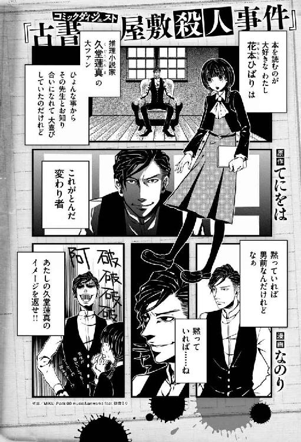

| 女学生探偵と偏屈作家 ─古書屋敷殺人事件前夜─ (―) | |
| てにをは | |
| (2013) | |

本書（電子版）に掲載されているコンテンツ（ソフトウェア／プログラム／データ／情報を含む）の著作権およびその他の権利は、すべて株式会社ＫＡＤＯＫＡＷＡおよび正当な権利を有する第三者に帰属しています。
法律の定めがある場合または権利者の明示的な承諾がある場合を除き、これらのコンテンツを複製・転載、改変・編集、翻案・翻訳、放送・出版、公衆送信（送信可能化を含む）・再配信、販売・頒布、貸与等に使用することはできません。
──それでは失礼して、ちょっと上に行ってきます。
第一章 珈琲淹れてきます
五月最初の月曜日。早朝。
ちょっとだけ特別なことがしたくなってカンバスと絵の具を横抱きに屋上へ向かうことにした。
あそこでならいい絵が描けそうな気がする。
モデルはもう決まっている。最初から決めていた。
だけど本人に頼んでも絶対モデルになんてなってもらえないことは分かっているから、記憶を頼りに筆を走らせるしかない。それは悲しいことだけど、でもそれならどこでだって描ける。どこだっていいのなら気分を変えて屋上で描いたっていいじゃないですか。
という思考の流れを経てわたし、花本ひばりは学び舎の階段を上っている。せっかく早起きしたんだし、時間は有効に使いたい。
時刻は午前五時半。これ以上ないというくらいに早朝。そう考えたらあくびが出た。
こんな時間に学校に来たのは初めてで少し緊張する。あくびをしておいてなんだけど。
校門の前では用務員のおじさんが音もなくラジオ体操をしていたけれど、ここに来るまでに生徒とはひとりもすれ違わなかった。
階段の踊り場にはこれでもかというほどたくさんの手書きのポスターが乱雑に貼られている。
演劇部。吹奏楽部。写真部。茶道部。弁論部。柔道。剣道。弓道。
他にもあれこれ。無数にあれこれ。
そのいずれのポスターにももれなく『明尾祭』という赤い判が押されている。
明尾祭という言葉の説明の前にわたしの通うこの学校のことを軽く説明しておく。
私立明尾高等学校。創立四十年。男女共学で生徒数はおよそ八百名。部活数は同好会まで含めるとかなりの数になり、わたしも把握はできていない。ちなみにわたしは美術部所属。校訓は『勤勉』『友愛』『情熱』。学校旗にはそれら三つの言葉を意味する銀色、黄金色、緋色の葉があしらわれている。
そして明尾祭とは、この明尾高等学校で毎年五月に開かれる文化祭の通称だ。
その明尾祭を間近に控えたこの時期、学校の名物のようになっている各クラブのアピール合戦も最高潮に達していた。ポスターの陣地取りはその一端にすぎない。
それら各クラブが明尾祭のためにあらゆる企画を用意し、あの手この手で宣伝をするのだから校内はまさに野放図そのもの。
うちの学校は創立当時から自由な校風で通っている。そのこともあっていったんこの手のことで盛り上がると収拾がつかなくなり、教職員でも生徒らを抑えられなくなることがある。
明尾祭での行きすぎた活動や発表をいかに抑制するか。それが学校側の長年の課題となっているらしい。
よっ、ほっ、と階段の途中に積まれた備品や予備の椅子をテンポよくまたぐ。
「新鮮な環境で気分よく描きあげる、ぞ！」
意気込んで屋上のドアを開けると冷たい風が頰に当たった。
この時期の朝はまだ冷える。
美術部では明尾祭に向けてひとり最低一点以上の作品を展示する決まりになっている。けれどわたしはまだひとつも作品を提出できていない。
それはモデルが非協力的だという理由もあるけれど、わたし自身の技量が足りないことも大きな原因となっている。
追い詰められた末に、気分転換と称して屋上に来てはみたものの少し考えが甘かったかもしれない。
寒い。
さきほど日の出をすませたばかりの真新しい空に目を細める。
「へっちん！」
へんなくしゃみが出た。
やっぱり部室に戻ろうかな。そう考えながら足元に視線を落とす。
そこに──。
「......え？」
屋上のほぼ中央あたり、くすんだ灰色のコンクリートの上に女子生徒が倒れていた。
思わずその場にカンバスを落としてしまう。
血だ。血が床に広がっている。
頭部を中心に飛び散って──。
手があらぬ方向に折れまがっているように見えるのは気のせいだろうか。
その女子生徒は上履きを片方しか履いていなかった。いや、片方だけ脱げたのだ。それはその子からずいぶん離れた場所に転がっていた。
それは奇妙な光景だった。
一度そう考えてしまうと、もうそんなふうにしか見えない。
わたしは上を見た。文字通り、倒れた生徒の真上だ。
「......落ちてきた──？」
そこには徐々に青みを増していく空が広がるばかりで他にはなにもない。
それでも、この子は落ちてきたのだ。
空から屋上に、落ちてきたのだ。
「沙穂！」
わたしは駆け寄りながら友達の名を呼んだ。
その日の放課後、生徒指導室に呼び出された。もちろん用件は屋上で倒れていた女子生徒の件だ。
そこには担任の黒谷と校長が待ち構えていて、わたしが入室するなりふたりそろって「雨村のことは口外はするなよ」と言ってきた。
雨村沙穂。
物静かで成績もよく、どちらかと言うまでもなく優等生。園芸部に所属している。
わたしと同じ二年生で、クラスは違うけれど友達だった。共通の友達とあの屋上でお昼を食べたこともある。一番の大親友とは言えないかもしれない。でも友達だ。少なくともわたしはそう思っている。
その沙穂が、空から落ちてきた。
発見したとき幸い沙穂にはまだ息があった。わたしはすぐに宿直室に走り、事情を説明して医者を呼んでもらった。
三十分ほどで黒塗りのクラウンが裏門から入ってくるのが見えた。そこからのんびりした動きの高齢の医者が降りてきて、息をきらしながら屋上に上っていった。太い二の腕をした助手らしき男性がその後に続く。
やがて彼らによって沙穂が病院に運ばれていくのを見送る頃にはもう多くの生徒が登校し始めていた。
屋上はすぐに封鎖され、実際の現場はわたしと一部の教師しか目にしなかったけれど、それでも校内はちょっとした騒ぎになった。
おかげで午前も午後もまるで授業に集中できなかった。
「ねえ、花本さんが第一発見者なんでしょう？ やっぱり血がたくさん出ていたの？ 血の海だったの？ どうなのよー！」
クラスメイトからの無神経とも思える質問に最初こそ腹を立てたが、そのうちそれにも疲れ、後はゆらゆらとはぐらかしていた。とはいえ、はぐらかし続けるのにもずいぶん骨が折れた。
いや、本当に折れたのは沙穂の骨のほうだ。
彼女の意識はまだ戻らないらしい。
出血よりも全身の打撲のほうが深刻で、骨折も一ヶ所や二ヶ所ではなかったと聞いた。
それでも幸い命に別条はないと教えられてわたしは生徒指導室で胸を撫でおろした。
「いいか、今朝のことはみだりに言いふらしたりするなよ。他の生徒をいたずらに動揺させることになるからな」
退室の折にさらに念を押された。
失礼しましたと言って生徒指導室を後にする。なにも失礼なことをしでかした覚えはないのだけれど。
廊下をとぼとぼと歩きながら教師達がしつこく口止めしてきた理由について考えた。
あの文字のせいだ──。
それ以外にないだろう。改めて確認するまでもなく黒谷や校長の顔に書いてあった。
沙穂の残したメッセージを教師達はひどく気にしている。
そう、メッセージ──。
あれは彼女のメッセージだろう。
赤黒く、いびつな形の、たった二文字の──。
血文字。
彼女が自らの血でコンクリートの上に書いた、
『Ｘだ』
という血文字。
そこにこめられた意味とはなんだろう。
「Ｘ......エックス......？」
病院に駆けつけた両親によると沙穂は前日の日曜日は普段通り家で勉強をし、夕食も家族と一緒に食べていたという。少し口数が少なかったような気もするが、もともとそれほど明るく活発な性格の子ではなかったので特に気にはしなかったらしい。
そして母親に「明日は明尾祭の準備のために朝早くに家を出る」と伝えて早めに就寝したという。実際、今朝母親が起きてみると沙穂はすでに家を出たあとだった。
でも、彼女は本当に準備のためだけにそんなに早い時刻から出かけたのだろうか？
考えながら階段に差し掛かる。
「ひばりちゃん。お疲れさま」
声をかけられて顔をあげると階段の踊り場に女子生徒が立っていた。色白で繊細そうな瞳をした女の子。
「ゆへちゃん！ ただいまー！」
階段を駆け上がってその胸に飛びこんだ。
日本人形のように落ち着いたたたずまいのその少女は困ったような笑顔で受け止めてくれた。
溝呂木ゆへ。近隣の県から来た良家の子女で彼女とは入学当初から仲良くしている。放課後に突然呼び出されたわたしを心配して待っていたのだという。
「はいカバン」
教室からわたしのカバンを持ってきているというこの気の利きよう。今日一日でささくれてしまった心に、その優しさがじんわり染みこんでいく。
「それからこれ。今日は家に持って帰って描くんでしょ」
いまだに手つかずのカンバスまで持ってきてくれている。
「ゆへちゃん。あたしが男に生まれ変わったらお嫁に来てください」
わたしは精一杯おどけてみせた。
「そうね。溝呂木ひばりって悪くない響きだわ」
「婿養子ですか」
いつも穏やかながらふいに鋭い切り返しをしてくる。そんなところも彼女の魅力だと思う。
踊り場の窓から夕陽が差しこむ。
遠くから吹奏楽部の奏でる旋律が聞こえてくる。「この曲なんていう題名だっけ」「クラリネットの音って好きー」などと言いながらふたりで昇降口へ向かう。
「あら」
ふいにゆへが前方に視線を向けた。つられてそちらを見る。すらっと背の高い男子生徒が下駄箱に背を預けて立っていた。
「やあ、こんにちは」
今わたし達に気づいたというような顔で彼は言った。
「こんにちは」
「もしかしてきみが花本ひばりさん？」
「えっと」
思わず言葉に詰まった。
知り合いだったかしら？
覚えがない。
「初めまして。三年の五十嵐悠馬です」
わたしの両目がハテナマークにでもなっていたのだろうか。彼はすぐに察して名前を名乗った。
その名を聞いてゆへが「ああ」と声をあげた。
「明尾祭実行委員長の五十嵐先輩よ」
少し色素の薄い髪に四角いメガネ。物腰は穏やかそのもの。
「ははあ。実行委員長さんですか。なにかご用でしょうか？ もしかして......あたしなにか実行の妨げになるようなことしちゃったんでしょうか！」
妨げちゃったんでしょうかー！ と青ざめたが、ゆへが気丈にかばってくれた。
「先輩ひどいです！ この子は今朝から踏んだり蹴ったりでしなしななんです。ほら見てください。塩を振りかけられたナメクジみたいな状態です。こんなひばりちゃんをまだ責めるというんですか」
「ナメクジ......」
そこまでではないと思う。
「落ち着いて。きみはなにも妨げてはいないよ。ただちょっと今朝の事件のことが気になってね。その......屋上で見つかったっていう生徒はどうなったのかな？ 先生はなにも教えてくれないんだ......。いや、なにも野次馬根性で聞いてるわけじゃないよ。ぼくの立場上......ね」
「明尾祭に影響があるかもしれないと心配されているわけですね」
「ご明察」
「それはきっと大丈夫だと思います。運ばれた子はなんとか無事みたいですし、大事にはならないと思います」
これくらいなら口外してもいいよね。
「そうか......ありがとう。実行委員の連中も今朝からしきりにそのことを気にしていたんだ。本当によかった」
五十嵐先輩はそう言ってメガネを外して目を二、三度こすった。左手に白いハンカチが巻かれているのが目についたが、それよりも先輩の目がひどく充血していることのほうが気になった。
まさかわたしがもたらした情報で感極まって泣き出したのではとぎょっとしたが、そういうわけではなかった。どうやら寝不足気味らしい。
「夕べ遅くまで家でラジオを聴きながら、明尾祭当日のスケジュール確認をしていたんだ」
「ラジオって、もしかしてＳ盤アワーですか？」
Ｓ盤アワー。日曜深夜のラジオ番組だ。
「うん。いつも通りプレスリーとかダイナ・ショアなんかが流れていたよ」
五十嵐先輩は片手で髪を撫でつけながらそう言った。
「あたしもよく聴いてるんですよ。夕べは途中で寝ちゃいましたけど」
とわたしは元気よく両手を上げる。
父がいつもレコードをかけていたせいか、わたしは小さい頃から歌を聴くのも歌うのも好きだった。
へただけど私はひばりちゃんの歌が好き！ へただけど！
とは隣にいる友達、ゆへの忌憚のない評価である。
「先輩っ！ こんなところで油を売ってたんですね！」
そこへおかっぱ頭の女子生徒がやってきた。
「あ、桃花ちゃんだ」
犬飼桃花。彼女とは同じクラスだ。
とても小柄ですばらしく愛らしい顔立ちに似合わず柔道部の期待株で、恐ろしく強い。明尾高の武闘派優等生と異名を取るほどだ。本人としてはその異名は不本意らしいけれど。
「調子さえよければ東京タワーを大外刈りで倒せるって本当？」
「その噂を広めたヤツを今すぐ呼んできて。大外刈りで倒してあげるから」
「あ、うまい！ 一本！」
「なんの一本よ！」
「なにって柔道の話でしょ？」
わたしは桃花とのほほえましいやり取りをひとしきり堪能してから五十嵐先輩に声をかけた。
「それで桃花ちゃん、五十嵐先輩になにか用事でも？ あ、桃花ちゃんも実行委員なんだっけ」
「そういうこと」
彼女は軽く腕組みをしたまま気の強そうな眼差しを五十嵐先輩へと向ける。桃花の家は代々花火師を家業としていて、彼女の勝ち気な性格は父親譲りだという。
「先輩、立ち話をしている猶予はありませんよ。校門前のアーチの強度を確認しにいく予定だったでしょう。こんなところで遊んでいる暇はないはずです！ 散々探したんですからね！ 余計な手間を増やさないでください！」
「あ、ああ、ごめん。もうそんな時間か」
明らかに先輩である彼のほうが気おされている。
「そんな時間です。さあ行きましょう、すぐ行きましょう！」
それにしてもずいぶん手厳しい。いつもきびきびとしている桃花だが、今はそれに拍車がかかっている。
「ひばり、今日は災難だったわね」
五十嵐先輩を引っぱっていくとき、桃花はこちらを振り向きもせずそうつぶやいた。
「桃花ちゃん、なんだかイライラしていたわね。実行委員って多忙なのね」
ふたりを見送ったあとゆへはそう言っていたけど、わたしは彼女のいらだちの理由を知っていた。
おそらく彼女は明尾祭の準備にのめりこむことで考えないようにしているのだろう。
彼女のおさななじみで一番の親友である雨村沙穂の容体のことを。
「また明日！」
校門前でゆへと手を振りあって別れ、新橋から都電に飛び乗った。揺られながら緩やかに黄金に染まってゆく街並みを眺める。
近頃では車やバスが増え、地下鉄も通ったので車内はさして混雑しない。このどこかのんびりとした空気が心地いい。
浅草行きの水上バスを待つ人々。
慌ただしく人が出入りする新聞社。
橋の途中で子供達を呼びこんでいる金魚屋。
定食屋からはポークソテーの良い香りが今にも漂ってきそう。
通りにはスクーターやトラック、自転車が行きかい、耳をすませばいつもどこからか流行歌が聞こえ、ダンスホールは若者でにぎわっている。
もはや戦後ではないと言われてもう何年経つだろう。
今日は下校が少し遅くなった。あの人は寂しがっているだろうか。
そうだといいなと思う。そんなわけはないだろうけど......。
その人の顔を思い浮かべると今朝から沈みこんでいた気分がぐっと上向きになった。思わず『有楽町で逢いましょう』を口ずさんでしまう。
「ここ銀座だよー」
目の前に座る子供からそう指摘を受けたけど、いいのよーと言って気にせず歌った。
都電は悠々と三越の前を通り過ぎる。
神田駅前で降りて徒歩でトコトコ通りをゆく。
そのうちに気分が乗ってきたので自分の長い影を追いかけながらトントン走った。そのたびにおさげ髪が若い稲穂のようにぽんぽん跳ねて、それが他人事みたいにおかしく思えた。おさげが弾めば息も弾む。ほうっと息を吐きながら阿弥陀くじのような路地へと入った。
その細い道をわたしは迷いなく進んでいった。
古い民家の前を通り過ぎると遅れて庭先の犬が嬉しそうに吠えた。その鳴き声がずいぶん遠くなった頃、わたしは一軒の洋館の前にたどり着いた。
ツタの這う外壁は薄茶色の煉瓦造りで、もうしわけ程度の庭には草木が茂っている。建物は二階建てだけど造りとしては小さく、窓は分厚いカーテンによって閉ざされている。その洋館は全体として長旅をしてきた人のボロボロの靴のように古ぼけていた。なんとも怪しげな建築物だ。
事実この路地を通りかかる者はたいていこの洋館に胡散臭げな眼差しを向ける。そしてなにかよからぬ者が住まう屋敷なのではと噂する。
よからぬ者。つまり、狂気の発明を繰り返す怪人博士とか、芸術と称して子供をさらってきてはその生き血を搾る謎の画家とか、紙芝居に出てきそうな悪い人のことだ。
だけどここに住んでいるのはそのどちらとも違う、ううん、見方によってはもっともっと変わった人なのだ。
あたりはもう薄暮時に差し掛かっている。雲が行きかう空はまるで入り組んだ迷路だか魔法陣みたいに広がり、そのせいもあって目の前の建物がよりいっそう曰くありげに見えたけれど、わたしはためらわず玄関の扉を開けた。中には狭いながらも玄関ホールがあり、右手には二階へと延びる階段がある。足元には赤い絨毯。天井には質素な明かりが四つ静かに灯っているきりだ。
一階の奥へ続く廊下をゆっくり進むと左手に木目の美しい重厚なドアが現れた。
ここにいるはずだ。この部屋の明かりがついているのは表から見えていた。
裾を払って、汗を拭って、息を整えてから軽くノックをした。
なにも返事はなかったけれど気にせずドアを開けた。
「先生！」
わたしは刑事が現場に踏みこむような勢いで中に入った。
「先生聞いてください！ 今日大変なことが......」
開口一番今日一日の報告を始める。が、言葉が続かなかった。
勘違いや見間違いではない。部屋の中に熊が立っていた。
熊のような男ではなく、熊そのものが。
洋間の中央に熊がでんと仁王立ち。これでは今日の報告なんてしている場合じゃない。
軽く二メートル以上はある。
熊だぞう！ 怖いだろう！ という調子で高らかに前脚を振り上げている。
もうこれ以上は無理だよ、というほどにクワっと広げた口と、そこからお目見えする立派な牙にわたしはその場で一度ぽんっと飛びあがったきり固まってしまった。
うわーん熊だ！ 熊だよね？ たくましいイタチじゃないよね？ 発育のいい犬じゃないよね？ 嗚呼、茶色い。それにしても日が落ちるのがずいぶん遅くなったよね。もう五月だもんね。明尾祭頑張らなきゃ。うわーん熊だー！
一歩も動けず悲鳴すらあげられず、思考だけがぐるぐると堂々巡りをしていた。
そのとき、わたしの背後、それもずいぶん近いところから声が聞こえた。
「おや、こんなところにひばりくんの剝製が立っている。なかなかよくできているな」
その声を聞いてわたしはようやく停止状態から抜け出すことができた。
振り返るとそこに男が立っていた。
すらりとした長身──。
開襟シャツに黒のベスト──。
不機嫌そうに寄せられた眉間のしわ──。
けれど、口元にはうっすらと鋭利な微笑を浮かべている。
「先生！」
久堂蓮真が立っていた。
「熊ですよ！ 熊！ がおーって！ がぶーって！ よ......よし！ ここはあたしがなんとかしますから先生は裏口から外へ逃げてください！ 大丈夫です！ おじいちゃんに教わった剣道でなんとかします！ あっ！ 竹刀がない！ な......なにか代わりになる棒状の物をください！ 早くあたしに適当な長さの棒状の物を！」
「うるさい！」
「ひたたた......」
頰をぎゅうと引っぱられた。
「よくしゃべる剝製だ。本物以上にやかましいな」
そう言って先生はわたしの頭をぽんぽんと叩き、熊のほうへと歩いていった。
「やはり剝製は静かなものに限る」
「先生危ない！」
「剝製」
先生は仁王立ちする熊の前に立って悠々と見上げる。
「先生が丸齧りに！」
「だから剝製だと言っているだろうが」
「へ？」
「ヒグマの剝製だ」
そう言って先生はドアをノックするみたいに熊のお腹を叩いた。言われてみると確かにその熊は最初からぴくりとも動いていない。
「ど、どうして熊の剝製が......？」
「作品のためだ」
「え？」
「次の作品では熊の剝製を用いたトリックがメインになる。そこで本物の熊の剝製がどのような作りになっているのか調べるために、とあるルートからこれを買い取った」
「なんて......言いました？ トリックのために？ 先生、小説を書くために......ヒグマを買ったんですか？ まるごとヒグマを......それだけのために？」
「それだけ、だと？ すべては作品のため。それがなによりも重要なのだ」
先生は一切迷いのない口調でそう断言した。
わたしは大きくため息をついてその場にへたりこんだ。
この人のことはよく分かっていたつもりだったけれど、改めて度肝を抜かれてしまった。
「そこまでする推理作家は先生くらいでしょうね......」
久堂蓮真。
彼は推理作家であり、これまでいくつかの長編、短編を出版している。
中でも名探偵・羽曳野無睡の活躍する『六道島連続殺人事件』『十牛亭消失事件』などの『無睡（眠らず）シリーズ』は探偵小説として一部の読者から熱狂的な支持を得ている。
ただその内容の多くがあまりに突飛で奇怪であるために一般大衆にはあまり受け入れられてはいない。
句点なしの一続きの文章でまるまる一冊推理小説を書き上げてしまったり、劇中劇を三十回以上も繰り返して読者を煙に巻いてみたり。
「本人の偏屈な性格がそのまま出ていますよね」
「なにか言ったか？」
「いえなにも！ ただ先生の本がいまいち売れない理由を改めて痛感していたところです」
「当たり前だ。崇高な作品はそうやすやすと大衆に受け入れられはしないものだ！ そもそも懐が深く、芸術的な感性の鋭い大衆などもはや一般大衆ではない」
だめだ。
わたしは先生の行動を非難することを早々に諦めた。なにを言ってもまるで意に介さない。久堂蓮真という人はそういう人なのだ。
自分の作品のためならどんなことでも迷わず平気でやってしまう。
そう、小説のトリックのためにヒグマを用意し、あげくその手にノコギリを握りしめて──。
「......ノコギリ？」
今まで見落としていたけれど先生はその手に大きなノコギリを握りしめていた。
「さっきまで物置にこれを取りに行っていたのさ」
「それでなにをするつもりですか」
「無論、この剝製を解体する。首を落とし、腹を切り開いて中を覗く」
「わあ──！」
わたしはがむしゃらに先生に突進してノコギリを奪い取った。
「なに考えてるんですか！ 剝製とはいえそんなことしちゃだめなんですからね！ 先生の鬼！ 解体魔！」
「邪魔をするな。私は熊の剝製の内側の構造が知りたい。自分の目で見たいのだ！ そしてバラバラに解体するのに男ひとりの手でどれくらいの時間がかかるのか、それも知りたい。剝製もノコギリもそのために用意したのだ」
「だめ！」
「さあひばりくん、前脚の部分を押さえておいてくれ」
「いやー！」
「分かったよ。特別に首の部分はお土産として新聞紙に包んでやるから」
「包むなー！」
「まさかそのまま持ち帰るつもりか！ 年頃の娘と熊の生首。想像するとそれも悪くないな！」
「クマ吉にひどいことしないで！」
「勝手に名前をつけるな！」
ふたりして一通り罵りあってようやく落ち着いた。結局剝製は部屋の隅に飾られることとなった。
「よかったねクマ衛門」
「クマ吉はどこへいった」
先生はすさまじく不機嫌な表情で胸元のボタンをひとつ外し、机の上の小瓶の中の珈琲豆を直接手でつかんでがりがりと齧り始めた。
それは贔屓目に見ても明らかに異常な行動だった。初対面の人間がそれを見たら十人に九人は半身のままひきつった笑いを浮かべ、用事もないのに用事を思い出したと言ってそそくさとこの館からお暇することだろう。
がりがり、ごりごり──。
まるでなにかが乗り移ったかのようだ。
「珈琲淹れてきます」
わたしは背中を向けて急いで台所へ向かった。
迷うことなく戸棚から珈琲豆と手網を取り出し、さっそく豆を焙煎する。数分で豆から薄皮が剝がれ始めた。
特別不機嫌なときや、長い間珈琲を飲んでいなくて「すぐにでも珈琲が飲みたいぞ」というときに久堂先生は決まってがりがり珈琲豆を齧る。
そしてその齧り方は前者と後者とでは微妙に違いがあり、わたしはその違いを知っている。
さっきのは昼間から集中して原稿に向かっていたせいで珈琲を長らく飲んでいないときの齧り方だ。
顔が不機嫌なのはいつものことなので気にしない。
深煎りし、粗く挽いて高温でさっと注ぐ。それが先生の好む味を出すお決まりの手順となっている。
それにしてもあの人は、本当にヘンな人だ。改めて熊のことを思い返してわたしはため息をついた。
ヘンだし、困った人だ。
意地悪で。
高飛車で。
口が悪くて。
常識知らずで。
四六時中作品のことしか考えていない。
作家になっていなかったらとんでもない大悪党になっていたんじゃないだろうかと本気で思う。
少しずつ豆が色づき、香ばしい香りもしてきた。
先生との関係の始まりはわたしが幼い頃にまでさかのぼる。
わたしの家は神田神保町の片隅にあり、父はその家の一部を利用して純喫茶を経営している。店は戦前から祖父がやっていたもので、戦後になって父がその店を継いだ。わたしがまだ小学校にもあがっておらず、ようやく物心がつき始めたという頃だ。
店の名前は『月舟』という。
戦後しばらくは物も乏しく苦労が絶えなかったらしい。珈琲豆もなかなか手に入らず、進駐軍の払い下げの物をわずかに客に出す程度で、他は大豆で代用していたという。
そんな『月舟』の常連となったのが、まだ作家としてほんの駆け出しだった若き久堂先生だった。
だからわたしは先生のことをその頃から知っているし、先生もわたしがびぃびぃと泣いていた頃から知っている。
ぱちぱちっと豆がはじける音がした。思い出に浸ることをきりあげて火を止める。
珈琲の淹れ方はすべて父から教えてもらった。
母は、いない。
先生はひとり掛けの黒いソファに深く腰をかけて脚を組み、わたしの淹れた珈琲から立ち上る湯気を美しい絵画でも楽しむみたいに眺めた。
背後には見上げるような高さの書架が並んでいる。図書館さながらの光景だ。
しかしそれだけでは飽き足らず、棚に入りきらない本が部屋のあちこちにうずたかく積まれている。見慣れた風景だ。
「それで屋上に出てみたら友達が倒れていて──」
熊の剝製のおかげですっかり後回しになってしまっていたけれど、わたしは改めて今朝学校で見たこと、あったことを先生に聞いてもらうことにした。けれどわたしが話し始めたとたんに先生はおもむろに机の上にあった本──横溝正史の新刊だ──を手に取り読み始めた。合間にしっかり珈琲も味わっている。
「先生！ ちゃんと聞いてくださいよ！」
大方話し終えたところでそう詰め寄ると、
「空から人が落ちてきたと、きみはそう言いたいわけだな」
と、にべもなく言われた。漏らさず聞いていたらしい。
こちらが話している最中も手元の本はずいぶん頁が進んでいたように見えたけれど、いったいこの人の頭の中はどういう構造になっているのだろう。改めて不思議に思う。熊の剝製の中よりもよっぽど気になる。
「人が落ちてくるなんてそんなことあると思いますか？」
「現にあったんだろう。きみ自身が発見したとそう言ったじゃないか」
「確かにそうなんですけど......」
「いいかね、人がその領分を越えて天に近づこうとすると多くの場合、神の怒りを買う。空を高く飛びすぎたイカロスしかり、旧約聖書に登場するバベルの塔しかり」
「蜘蛛の糸しかり、ですね」
「それは別物だ」
「えー」
ともかく、神様を怒らせるとたいていろくなことがないらしいということは分かった。
「場合によっては天から地上へまっさかさま。人はそれを天罰という」
「天罰......ですか」
「現場にはメッセージがあったと言っていなかったか？」
──Ｘだ。
「あ！ バツ！ Ｘ＝罰なんですね！」
「そのようにも解釈できるというだけのことだ。そもそもきみ、本当に神がその生徒に天罰を与えて地上に落としたと思っているのか？」
「そうは思っていませんけど......。なにかこう、未知の力が働いて沙穂を上空へ連れていったとか......」
そこまで話してひとつ閃いた。
「そうだ！ 風ですよ！ 突風に巻きあげられたっていうのはどうですか？」
思いつきで発言してみる。
「人が舞い上がるほどの風がその場に吹いたのなら他にもなにか被害が出ていそうなものだがな」
一笑に付されてしまった。
「聞いた限りではその場所だけ風が強く吹きこむような地形になっているというわけでもなさそうだし、それはないだろう」
いちおう検討してもらえただけでもよしとする。
「それにしても罰とは意味深ですね。あたしはてっきりＸ＝エックスだと思ってました」
「エックス？ ああ、例の似非活動家か」
先生はすぐにこちらの考えを察したようだった。
「きみが近頃話題にしていた輩だな」
「そうです。明尾高で話題になっている正体不明の活動家エックスです。エックスまたも現る！ 大胆不敵な犯行声明！ なんていう具合に新聞部が毎週のように取り上げていますよ」
エックス。
男なのか女なのか、生徒なのか教師なのか、今のところすべてが謎に包まれた人物である。そもそも単独なのかグループなのかさえ分かっていない。
校舎の壁や校長の机の上など、エックスはあらゆる場所に学園側に向けての過激なメッセージを残した。ときには校内放送をジャックして『国際学連の歌』を流したりもした。
その主な主張はこうだ。
──現理事長ならびに校長は米国の傀儡である。
──年々生徒らから自主性を奪っており、取り除くべき腫瘍である。
内容が内容なだけに当然学校側は一刻も早く犯人をつきとめたいと考えた。その結果生徒への締め付けも厳しくなっていった。
不審な行動を見せる生徒。妙なものを学校に持ちこもうとする生徒。疑わしき者は次々と生徒指導室に連れていかれた。
けれどいずれも空振りに終わっており、エックスは現在も生徒や教師の目をかいくぐるようにして活動を続けている。
「全学連に憧れた子供のお遊戯だな」先生はバッサリとそう言い放つ。
全学連、正しくは全日本学生自治会総連合。戦後数年経ってから百四十以上の学生自治会で結成された連合組織だという。近頃では日米安全保障条約に反対して様々な運動を行っており、春には警官隊と激しい衝突も起こしている。
ちなみにこれらの知識の半分は先生からの受け売りだ。
それはともかくとして、全学連というとどうしても過激な印象を抱いてしまう。
「エックスとあのメッセージにはなにか関係があると思っていたんですけど......」
Ｘ＝罰。そんな先生の解釈を聞いたら分からなくなってきた。
「ところで今回のこと、きみは『どれ』だと考えているんだ？」
「どういう意味ですか？」
その唐突な問いに戸惑う。
「その雨村という生徒の件、『事故』か？ 『自殺』か？ それとも『他殺』か？」
「そ、それは......」
正直分からなかった。学校側は事故として処理するらしいけれど、本当のところはわたしも皆目見当がつかない。
「って、ちょっと待ってください！ 沙穂は無事ですよ！ 自殺にしても殺人にしてもちゃんと『未遂』という言葉をつけてください」
「どちらでもいい」
なんていうデリカシーのなさだろう。それに大雑把だ。この人、本当に推理作家なんだろうか。
「でも改めて考えてみると自殺っていうのはないと思います。それなら素直に屋上から校庭に向かって飛び降りればすむことですし」
素直に飛び降りるというのもおかしな言葉だけど。
「血を使ってまでメッセージを残していることから考えても『屋上に落ちた』のはその生徒にとってよほど『不本意な事態』だったのだろうな。自殺なら遺書を書けばいい。わざわざ血文字でメッセージを残したりはしないだろう」
そうすると何者かの手によって傷つけられた可能性が高くなる。
「どういう方法を用いたのかは分かりませんけど、それならやっぱりエックスが怪しいですよね」
「だとしたらエックスというヤツは大マヌケだ」
「どうしてですか？」
「殺し損ねているからだ」
そう言ってその怜悧な瞳をした作家は音もなく脚を組みかえた。
「何者かのしわざなのだとしたら、そいつはわざわざ学校という人目につきやすい場所を犯行現場に選び、なんらかのトリックを用いてまで不可解な現場を作り上げたにも拘わらず殺し損ねたということになる。本末転倒の極みだ」
確かにその通りではあるけれど。
「先生、犯人側の気持ちに立って話してませんか？」
自分なら確実に殺すとでも言いだしそうだ。
「失敬な！ 私は自分で手を下したりはしない！」
「胸を張って言うことですか！」
それにしても先生の言う通り、なぜ学校なのだろう？
「きみの話では早朝の校舎にはほとんど他の生徒はいなかったということだったな」
「はい。屋上に行くまでの間は誰ともすれ違いませんでした」
「校門が開くのは何時だ？」
「朝の五時です。文化祭の準備期間ということもあって今週は早めに開くみたいです。あたしが登校したのは五時二十分頃でした」
先生はここまでの間も終始読み続けていた本を閉じて棚に収めた。
「もしかして......今の間にその本全部読み終わっちゃったんですか？」
「すべて読んだがそれがどうかしたか？」
下らないことを聞くなという顔をされた。昔からそうだったけどいつ見ても先生の速読は手品みたいだ。
「それで、他に屋上へ上るルートは？」
「え？ あ、ありません！」
慌てて答えると先生は少し細いその顎に手を添えて言った。
「確か他にも校舎があるんだったな」
「北校舎と南校舎の二棟があります。どちらも四階建てで、沙穂が倒れていたのは南校舎の屋上です」
ふたつの校舎は渡り廊下でつながっている。
「四階同士が渡り廊下でつながっているならその上を利用して北校舎と南校舎を行き来することも可能だが──」
「渡り廊下は一階だけにしか通っていません」
授業で移動するときはいつもわざわざ一階まで下りなければ隣の校舎へは行けない。
なんて面倒な建築物だ！ と先生は子供のように悪態をついた。
午後六時を告げる振り子時計の音が廊下から響いてきた。
「......あの、もしかしてこれってとっても奇怪で厄介な事件なんですかね？」
犯人も、方法も、動機も分からない。
そもそも何者かによる犯行だという前提すら消去法で導き出しただけにすぎない。根拠のない仮説なのだ。
事故だと仮定しても彼女がどういう状況で『屋上に落ちた』のかが分からない。
「おい」
自殺だとしたら、その状況を作り出した謎に加えて『なんのために』そんな方法を選んだのかも分からなくなる。
「誰かの手によって傷つけられたんだとしたら......沙穂は誰かに呼び出されて......」
「おい！」
「え？」
顔をあげると先生が心底嫌そうな顔をしていた。
あ、これは本当に面倒くさがっている顔だ。
「ひばりくん。きみ、もしや自分から首を突っこんでこの謎を解き明かそうと考えているんじゃないだろうな？」
図星だった。
というよりも、言われて気づいた。
いつの間にかわたしはこの謎にのめりこみ、挑むような気持ちになっていた。
「やれやれ。悪癖が出たな。きみの推理小説好きにも困ったものだ。不思議な出来事と見ればすぐに没頭する。後先考えず首を突っこむ！ きみのような単純な豆娘に推理などといった芸当ができるものか。推理とは眼前に広がる世界を意地悪く、どこまでも疑って観察するということなのだ。世界を斜めに見ることもできないきみにはまず無理だね」
「な、なんですか！ あたしはただ友達のことを......。というか！ 先生だってしょっちゅうあたしをたきつけていい加減な推理をさせては喜んでるじゃないですか！」
「それは私が暇なときにやっていることだからいいのだ。しかし私は今執筆で忙しい。きみに熊の解体を阻止されたおかげで別のトリックを考えなければならなくもなった。そしてきみのおさげは今日も寂れた神社の注連縄のように色気がない！」
「おさげは関係ないでしょ！」
熊のこと、根に持っているらしい。
「仕方がないからこの私が革新的な解決策を教えてやろう。これを聞けばこんな事件とも呼べない出来事などあっという間にお開きだ」
そう断言して先生はずいっとわたしに近づいてきた。
近い近い近い！
思わず体をのけぞらせて彼を見上げる。
なんだかさっきまでとは雰囲気が違う。
「ひばりくん」
「は、はい！」
「実際の事件においてもっともスマートな解決策とはなにか分かるか？」
「それは......やっぱり名探偵がわずかな手掛かりを基にズバっと真犯人を言い当てて......」
彼はゆっくり首を横に振る。その目は不敵な自信に満ちている。
「犯人が誰なのか、被害者に直接教えてもらうことだ」
彼は堂々とそう言いきった。
わたしはしばらく開いた口をふさぐのも忘れて絶句していた。
「そ、そんなのずるい！ 元も子もないじゃないですか！」
「被害者は常に最前で事件を見ているのだからそれが最善だ。たいていの場合生きてさえいれば被害者は犯人を知っている。被害者の命も助かり、犯人も即捕まる。理想的だろう。もちろんそれが探偵小説だったらつまらない作品になるだろうがな。さあこれでなにも悩む必要はなくなったな。その生徒の意識が戻るのを大人しく待ってから本人に真相を聞けばいい」
「そんなー！」
「さあて、話していたらまた喉が渇いた。ひばりくん、珈琲のおかわりを頼む」
先生はわたしの心情などお構いなしに空になったカップをぷらぷらさせる。
「知りません！ 先生が自分で淹れてきてください」
「むう、生意気なっ。よし、それならこれで決めようではないか」
そう言って先生はこちらの文句も聞かず手を差し出してきた。
なにかを決めようとするとき、先生はよくこれを提案してくる。わたしもそれを心得ているので迷わずそれに応じる。
「......一回勝負ですからね」
「もちろんだ」
一瞬の間のあと。
「じゃんけん」
「ぽん！」
わたしはチョキを出した。我ながら渾身のチョキだったと思う。形も悪くないできだった。
しかし──。
「阿破破！ 私の勝ちだな」
先生が出したのは──よく分からないモノだった。
「先生......なんですかそれは」
「狐だ」
コンコン。
と言ってその指でわたしの鼻をつまんでくる。
「ふぁ？ やめへー！ やめろー！ 狐ってなんですか！ どうしてじゃんけんで狐が出てくるんですか！」
「狐狸は化かすもの。化かされたきみの負けだ。さあ珈琲を淹れてきてもらおう。そして淹れたらさっさと帰りたまえよ」
「もう！ 分かりましたよ！」
本当はなにも分かってはいない。屁理屈十割、でまかせ二割の計十二割で構成された先生の言葉に抗う気力を失っただけだ。
再び台所に戻る。
二杯目の珈琲を淹れながら沙穂のことや神様のことを考えた。
エックスなのか、罰なのか。
罰なのだとしたら、それは天罰という意味だろうか。
沙穂はなにか罰を受けたのだろうか。
どうも神様というのは『自分に近づきすぎる者』を嫌うらしい。神話規模の人見知りぶりはさすがだと言える。
自宅の軒先を勝手に他人に占拠されたら神様でなくても怒るだろうけど、それでもやっぱり理不尽だ。
ねえ神様、天に近づこうとした人にもそれなりの事情があったんじゃないですか？
ひそやかで、切実で、透明な事情が。
第二章 おさげを振り回すな
──雨村沙穂は自殺未遂だったらしい。
翌日、校内は沙穂の自殺説でもちきりになっていた。
朝、教室に入るなりクラスメイトからそう聞かされてわたしは困惑した。
どうして？ 自殺の線はないだろうって昨日先生と話したばかりなのに。
「雨村さん、いじめられていたんですって」
そう聞かされてますます困惑した。胸がきゅうっと痛んだ。
優等生であるがゆえか、彼女は一部のグループからいじめを受けていたという。
ときには直接的な暴力も。
ちっとも知らなかった。
確かに今にして思えばおやと思うことは確かにあった。腕に真新しい傷を負っているのを見たこともあった。でもわたしがなにか聞いても「なんでもないの」としか言わなかった。
沙穂はそれを周囲に気取られないように必死に隠していたのだろう。
「だからあの子、それを苦に自殺を......」
「そんなことあるはずない！」
クラスメイトの言葉に対してわたしが反論するよりも早く、桃花がそう言って否定した。
「沙穂はそんなに弱い子じゃない......」
わたしは休み時間を見計らって桃花に尋ねてみた。
「ええ、知ってたわ」
思った通り桃花は沙穂がいじめられていたことを知っていた。そしてこれまでに沙穂のことを何度もかばっていた。
けれど沙穂のほうから桃花に助けを求めることはなかったという。
「あの子、大人しいくせにへんなところで頑固なのよ」
自分でなんとかするからと、自分で解決して乗り越えなければだめなのだと沙穂は言っていたという。
「あのばか。明尾祭楽しみだって言ってたくせに」
桃花はぽつりとそう言った。
沙穂は明尾祭には出られないだろう。
まだ意識は戻らないそうだ。
桃花はその怒りといらだちを明尾祭実行委員の職務にぶつけることで紛らわそうとしているようだった。そんな彼女が少し心配でわたしはその日の放課後、彼女の仕事を手伝うことにした。
机を、椅子を、段ボールを、書類を、木材を、楽器を、衣装を。なにに使うのか分からない、謎の備品を。
あっちからこっちへ。
こっちからあっちへ。
丁稚さながらに懸命にやたらと色んな物を運んだ。
けれどわたしはたいして力持ちでもないのであまり役に立てている気がしない。
「ひとりじゃ重いでしょう」
クラスの出し物の準備で出たゴミを焼却炉に捨てに行こうとしていると桃花が手伝ってくれた。
こんなに小さいのにどこにそんな馬力が！ というほど彼女はたくさんのゴミを抱えて歩いた。
役に立つどころか反対に助けられている。
ふとまだ完成していない美術部の課題のことを思い出す。こんなことをしている場合だろうか。さすがに不安になってくる。
準備に追われる各教室の中からは悲喜交々の声が聞こえてくる。ペンキをひっくり返す者、金槌で指を叩く者、どさくさにまぎれて気になる女子に告白する者。眺めていると飽きない。
フリーバザーや手作り駄菓子屋など、クラスによって出し物もいろいろだ。
「わ！ 桃花ちゃん見て！ ここのクラス、車のハンドルが置いてあるよ！ 売り物なのかな？ こっちにはタイヤ！ あ、エンジンも」
「確実に車一台バラして持って来てるじゃないの！ 実行委員として認められません！」
「こっちは教室の床に穴を開けて一階まで落とし穴を作ってるみたいよ。なんの意味があるのかなー」
「問題外！」
方向を間違えているような気もするが、明尾祭へのみんなの意気込みはうかがい知れる。
ちなみにわたし達のクラスは喫茶店をやる予定になっている。
「喫茶店はいいんだけど......『妖怪ジャズ喫茶』ってなんなのよ」
桃花は眉間にしわをよせてため息をつく。
「妖怪の営むジャズ喫茶」
「うん、分かってるんだけどね」
お化け屋敷と喫茶店で意見が割れたため、折衷案として提示されたのが妖怪ジャズ喫茶だった。
『妖怪が元気に接客！ うらめしいほどに美味しい妖怪珈琲！ 飲んだら成仏！』
そんなテーマでクラス一丸となってしまっている。
「おかしいでしょ！」
「そうだよね。おかしいよね。妖怪は成仏しないよね」
「おかしいけどおかしいのはそこじゃない」
「それで桃花ちゃんはなんの妖怪をやるんだっけ？」
「......毛倡妓」
毛倡妓とは、長い髪の毛を足元まで垂らした女の妖怪である。
江戸の浮世絵師、鳥山石燕による『今昔画図続百鬼』での解説には、知り合いの女の後ろ姿に似ているなと思い、駆け寄って顔を見ると顔面がすべて毛でおおわれた毛倡妓であったと書かれている。
「聞いたこともないわ！ 一つ目小僧とかろくろ首とかもっと名の通った妖怪がいるでしょうに！」
「でも毛倡妓ってあたしは好きだよ！ 江戸の浮世絵師、歌川豊国なんかは毛倡妓を題材にして恋のお話を──」
「やけに詳しいのね......」
「ちょっと知り合いの影響で」
話しながら一階に下りる。けれどわたし達はそこで立ち往生してしまった。
廊下の上に何枚も紙が敷かれており、進むに進めなくなってしまったのだ。
ひとりの男子生徒がその紙に筆でなにやら文字を書いている。
「ちょっと兄貴。なにやってるのよ」
ぶっきらぼうな桃花の言葉にその生徒は手を止めて顔をあげた。ずいぶんと彫りの深い顔立ちをした人だ。
「おお、妹よ。なにとはご挨拶だな」
そういえば桃花が以前、自分には兄がいると言っていたのを思い出す。どうやらこの人がそのお兄さんらしい。
「犬飼十郎だ。妹がいつも世話になっているな。小さくて見つけ辛いだろう」
「いえいえ、むしろときどき猫に対してそうするように桃花ちゃんをぎゅうっと抱きしめてぐるぐるーっとしたくなりますが、ひっ搔かれるので我慢しています」
「ひばり、あんたわたしに対してそんな衝動を感じてたの!?」
おっと失言。
「それで十郎先輩はなにをされているんですか？」
「堅実に自らの仕事をこなしていたところだ」
そう言って彼は今しがた書き終えた紙を手に取ってこちらに見せてくる。
太く力強い字でこう書かれてあった。
『あまり羽目を外しすぎぬように！』
「毎年はしゃぎすぎて備品やら窓ガラスやら校内の物を壊す輩がいるからな。いや、物ならまだいいが怪我人が出ては洒落にもならん。だからこうして抑止力として校内のあちこちにポスターを貼って回っているというわけだ。風紀委員長として！」
最後の部分だけやたらに大きな声だった。桃花は明らかにイライラした様子でそんな兄を怒鳴る。
「説明が長い！ 話すなら五文字以下にしろばか兄貴」
それは少なすぎると思う。
「そういえば兄貴は昔から手先だけは器用で、ポスターとか折り紙のわっかとかそんなものをよく作らされていたわね。だけどね、風紀委員長だか空気委員長だか知らないけどね、邪魔なのよ！ 廊下をふさぐな！ はしへ寄れ！ 大名行列に出くわした民のように！」
「なんだと！ 妹めー！ お前の最も嫌がるなでなで攻撃をお見舞いしてやるー！」
そうして突然に始まった兄妹喧嘩を止めるのにたっぷり五分はかかった。
「と、ところで──」
妹に一本背負いを決められた十郎先輩は平静を装いながら制服の埃を払う。
「きみが沙穂ちゃんを発見して救ったという噂のおさげ女子か？」
「救ってなんていませんよ。あたしは最初に発見しただけです。沙穂のこと知ってるんですか？」
「当然だ。小さい頃からよくうちに遊びに来て桃花と遊んでいたよ。あの頃は俺も一緒になって遊んだもんさ。親父の仕事場に忍びこんで勝手に火薬を調合したり、自分達で作った筏で隅田川を下ろうとして溺れかけたりとほほえましい思い出が満載だ」
兄の言葉に色々と思い出してしまったのか、桃花がげんなりした表情を浮かべた。どうもほほえましいと思っているのは十郎先輩だけのようだ。
「というか、噂のおさげ女子って？」
「なんだ知らないのか？ お手柄おさげ女子！ 女子生徒を救う！ と校内新聞にでかでかと書かれていたぞ」
いつの間にそんなことに。沙穂の件を校内に広めまいとしていた教師達は今頃新聞を読んで頭を抱えていることだろう。もっとも新聞のことがなくても早い段階から話は広まっていたのだが。
「わたしっておさげしか特徴がないのかな......」
「そんなことないよ。ひばりにはその泣きぼくろだってあるじゃない。いい女の象徴よ。でも明日もしあんたがなにかの不注意でおさげを落っことして登校してきたら教室であんたのこと見つけられないかも」
ひどい言われようだ。そもそもおさげはそう簡単に落っこちない。
「ともかく沙穂ちゃんを救ってくれてありがとう！ 最悪の事態にならなくて本当によかった。今回のことは......俺としても心配だし、悔しい思いだ」
彼は途中から徐々に声の調子を落としていった。悔しいというのはやはりいじめのことだろうか。
「十郎、渡されたポスターはぜんぶ貼ってきたよ」
そこへ五十嵐先輩がやってきた。
「五十嵐先輩も手伝っているんですか」
「ああ、実行委員として明尾祭開催中の事故は減らさなきゃならないからね」
実行委員というのは本当になにからなにまでこなしているのだなと素直に感心してしまう。
「あの」
「なんだい？」
わたしは五十嵐先輩の手を指差した。
「昨日も気になっていたんですけど、その手、怪我したんですか？」
左手に軽く包帯が巻かれてある。
「うん、備品を運んでいるときにちょっとね。実行委員は場合によっては色んな仕事を手伝うから」
確かに、今となってはそれも大いに納得できる。
「自分が働くことで怪我人をなくせるなら安いものだよ。それに開催中にエックスがなにかしでかすかもしれない。いや、きっとなにかしかけてくるだろう。それはなんとしても阻止したいしね」
「俺もできる限り協力するぞ」と十郎先輩もそれに乗る。
「当日の巡回は風紀委員に任せろ！ エックスという野郎は狡猾だ。いつもこちらの監視の目を縫うように校内のあちこちに声明を出してくる。悠馬の言う通り開催中は気が抜けないぜ」
そう、いよいよ明日から明尾祭本番だ。
明尾祭前の最後の追い上げということでその日は多くの生徒が日没まで学校に残って準備に没頭した。
わたしも率先して残っていたのだけど、寮生ではない女子生徒は早めに帰宅するようにと学校側からお達しがあって仕方なく途中で下校することにした。
昇降口でゆへが手を振ってお見送りしてくれた。彼女は学校の敷地内にある寮住まいなのでまだ校内に残るそうだ。
わたしも遠くから手を振り返して叫んだ。
「ゆへちゃーん、お茶ノ水って駅名を見るとなんだか喉渇いてこないー？」
「それ今聞くことー？」
校門を出たあとわたしが素直に我が家に戻ったかというと、もちろんそんなことはない。
今日も慣れた足取りで先生の家を訪ねる。
途中、たくさんの人が連なって通りを歩いて行くのが見えた。ヘルメットをかぶり、大きな旗を掲げている。新安保条約の採決に対して抗議する学生達だ。
政治のことは詳しくないけれど、あの人達はわたしなんかには想像もつかないくらい熱心に語らい、活動しているんだろう。ときどき物騒な話を小耳にはさんだりもする。そのうち死者が出てしまうのではとハラハラする。
そんな人達を真似たように学校で活動するエックスもまたどんな過激な行動を起こすか予想がつかない。となると、なにかの事情で沙穂をあんな目にあわせたとしても不思議はないという気がしてくる。
わたしは頭を左右に振って考えを振り払った。先生の言う通りあれこれと推理しようとするわたしの悪い癖が出てしまっている。
「せんせーい！ 今日も来ましたよ。栄養失調で煮干しみたいにカラカラになってはいませんかー？」
屋敷に着くなり勢いよく書斎のドアを開けるとすぐ目の前に男の人の背中があった。久堂先生の背中ではない。
「おや、相変わらず元気がいいね」
少しかすれた、ささやくような声でその人は言った。
ぼさぼさの頭髪に丸メガネ。胸元のはだけた藍色の着物。
「枯島さん、いらしてたんですか！」
恥ずかしいところを目撃されてしまった！
わたしは慌てて髪やスカートを撫でつけて居住まいを正した。
この見るからに優しそうな、それでいて浮世離れした雰囲気を持った男性は名前を枯島宗達といい、神田神保町で古書店『穀雨堂』を経営されている立派な店主さんだ。
久堂先生とは大学時代からの仲で先輩後輩の関係なのだとか。
見た目通りいつも落ち着いていてわたしにも優しい言葉をかけてくれる。そんな枯島さんがどうしてあの先生と長く友人関係を保っているのか不思議でならない。
「先生と違って枯島さんはいつも本当に穏やかで一緒にいると落ち着きます。川の上流の澄んだ浅瀬に足をつけて休んでいるような心持ちです」
「ふん。こんなオオサンショウウオのような男を摑まえてなにが穏やかだ」
「あ、先生。いたんですね」
見ると先生はいつもの仕事用の椅子に腰をかけて本を読んでいた。
「人の家に押しかけておいてなんだその態度は」
「そんなことよりもオオサンショウウオとはなんですか。枯島さんとオオサンショウウオはちっとも似ていませんよ」
そう言って先生の比喩に異を唱えたのだけれど、枯島さん本人はまるで気にしていない様子だった。
「ゆらゆら漂いながら静かに生きている、という意味ではそうかもしれないですね」
あげく認めてしまう始末。
「ほら見ろ。この通りこいつは日頃からなにを考えているか分からんし、生態も謎に満ちている。まさに古書街のオオサンショウウオだ」
「では店の名前をはんざき大明神とでも改名しましょうかね」
はんざきとはオオサンショウウオの別名だ。一説によると半分に裂いても死なないからはんざきと呼ばれるようになったらしいが諸説あって定かではないという。
そんな謎のつきまとう生き物には伝説や伝承もつきもので、その昔、岡山県の龍頭の淵という場所にはんざき大明神と呼ばれる十メートルはあろうかという巨大なオオサンショウウオが棲んでいたと広く伝えられている。
「っていうことで間違ってないですよね？」
「うん。いい説明だったよひばりちゃん」
「えへへ。ほとんど枯島さんの受け売りですけど」
枯島さんは穀雨堂を父親から継ぐ前は民俗学者を志していたらしく、その当時は頻繁に日本各地へフィールドワークに出かけていたらしい。当然、民間伝承や土着信仰、妖怪のことには恐ろしいほど詳しい。
わたしが妖怪のことにへんに詳しくなったのも実はこの枯島さんからの影響だ。
「そういえば枯島さん、今日はなんのご用で？」
「先輩に頼まれていた資料の本を届けにきたんだ」
どうやら先生がさっきから読んでいる本がその資料らしい。
「あ、本当だ。この家じゃ見たことない本ですね」
「さすがひばりちゃん。ここに置いてある本をすべて把握しているんだね」
「えへへー」
確かに毎日のようにここに来ては本を読ませてもらっているのでどんな本が置いてあるのかあらかた覚えてしまったのは事実だった。
「でもさすがに全部覚えてるとは言い切れないですけど」
「以前から言っているけど、早くうちに来て店を手伝ってほしいよ」
そう言って枯島さんはわたしの手を取って微笑んでくる。
「うちに来てって──」
わたしは顔を真っ赤にして慌てて手をひっこめた。
「だっ......だだだだだめですよぅ！ そんな......嫁入りだなんてそんなそんな！」
だめだめ、いけませんわ！ とわたしは猛烈な勢いで頭を左右に振った。
「狐の嫁入りだってまだ見たことないのにっ。白無垢なんてきっとあたしには似合わないし、それに嫁入り道具とかその他にも色々と準備が......じゃなくてっ！ あ、あたしには先生という人が......いやいやいやっ！ 今のはなしで！ なんでもないんです！ 狐に憑かれた娘の妄言です！」
「あの......ひばりちゃん、嫁入りを申しこんだつもりはなかったんだけど......」
「戯れ言、戯言、世迷い言！ 虚言に譫言、絵空事！ 荒唐無稽の与太話！ 取るに足りない出鱈目なんですー！」
「きみはひとりでなにを言っているんだ。ええい！ おさげを振り回すな！」
久堂先生に言われてようやく我に返った。先生はなんとも冷たい目でこちらを見ている。そんな目で見ないで！
「あ、そうだ！ あたしも渡したいと思って持って来た物があるんです」
なんとか強引に話を切り替えてカバンを開けて中から冊子を取り出した。
「立ち直り早いね」
枯島さんがまた褒めてくれた。
「はい先生。明尾祭のしおりです。枯島さんもどうぞ。後でお店に行って渡すつもりだったんですけど、ちょうど良かったです」
うやうやしくふたりに手渡す。
「ありがとう。いよいよ明日なんだね」
「みんな張り切ってますよ」
そうして枯島さんと話している間にも先生は異様な速さでしおりをめくっていく。
それがどんな内容であっても本の体裁をとった物を手にするとこの人はいつもこの調子だ。
「ちなみに見どころといいますか、有名なものというとこのモニュメントですね。ほら、この頁です」
「ひばりちゃんの学校では毎年生徒主導で大きなモニュメントを作っているんだったね」
「はい、明尾祭初日の正午から校庭に立てられる予定です。それから作られたモニュメントは祭りの最後に盛大に燃やされるのが恒例になっています」
その炎を囲んで互いの労をねぎらうというわけだ。燃え上がる炎が校舎や生徒らの顔を蜜柑色に染めてなかなか幻想的な光景となる。
「そういえば、去年は事故があったって聞いたけど」
ふいにそう聞かれてわたしは一瞬言葉に詰まった。
そう、事故はあった。
去年の明尾祭の二日目、モニュメントが強風にあおられて倒れ、怪我人が出た、らしい。
というのも、わたしは実際にその現場にいあわせたわけではないので詳しいことは知らないのだ。
モニュメントについての紹介頁の最後には次のような言葉が綴られていた。
『二度とあのような事故を起こさないために今年は細心の注意を払い、練りに練って作りました。その結果軽量化しつつも安定性の向上にも成功しました。ちなみに今年のモニュメントは当日になってからあらかじめ作られた部品を組み合わせて完成させ、完成状態のまま校庭の所定の位置まで移動させる予定です。その光景は必ずや来場者の皆様の目を楽しませることでしょう。モニュメント製作班班長・瀬野敦哉』
「一時は廃止まで検討されたそうですけど、伝統あるモニュメント作りを途絶えさせてはいけないとかで今年も作られることになったみたいです」
「デザインは当日のお披露目まで秘密にされているんだね」
「そうなんですよ。徹底して秘密にされているんです。製作班の生徒と一部の先生しか知らないみたいで」
聞いた話では密かに昨年よりも大きな物を作ろうとしているとか。
昨年でも高さ七、八メートルはあったと思う。第一回の開催以来毎年大きくなっているという噂もあるがそれは案外本当かもしれない。
「それで枯島さん、明日は来られそうですか？」
「それがね、明日はどうしても在庫の整理をしておかないといけないんだよ」
「そうなんですか......残念」
古書店の経営も楽ではないらしい。
「すまないね。二日目には必ず行けるようにするから」
「今お忙しいんですか？」
「うん、ちょっとね。ここ数日夜中まであれこれと仕事をしているよ。眠気覚ましにラジオをつけっぱなしにしてどうにか頑張っているけどね」
その割にちっとも眠そうには見えない。枯島さんと話しているといつも感じることだけど、この人はなんだか仙人みたいな不思議なところがある。桃だけ食べて何百年も生きていきそうだ。
「あたしはラジオをつけっぱなしにしていてもいつの間にか眠っちゃいますけどね。つい一昨日もＳ盤アワーが始まって早々に......」
「そうなの？ それは少しもったいないことをしたね」
「どうしてですか？」
「珍しい放送事故があったんだよ」
「放送事故？」
「スタジオに番組の熱狂的なファンが乱入してきたみたいで、一時騒然としていたよ。ああいう人はいったいどこから侵入してくるんだろうねえ」
「ひばりくん」
そうして枯島さんと談笑していると、しおりを読み終えた先生が不機嫌な顔をして割って入ってきた。
「これはいったいどういうことだ」
そう言ってしおりの最後の頁を指し示す。
「なんですか急に」
近づいて確認するとそこにはこう書かれていた。
『表紙絵担当・二年Ａ組 花本ひばり』
「あ！ 気づいてくれました？ さすが先生！ 隅々まで読んでくれたんですね！ そうです。今年のしおりはなんとこのあたしの絵が採用されました！」
わたしは自信満々でしおりの表紙をふたりに見せつけた。
「どうですかこの出来栄え！」
けれど、いくら待ってもそれらしい反応がなにも見られなかった。
「......わぁ」
しばらくして枯島さんの口からふわっとした声が漏れただけだった。
「巫山戯るな！ なんだこの不可解極まりない、人の気持ちをざわつかせる絵は！ 腐りかけの豆腐の周りにうようよと不気味な泥色の手が這い寄っているではないか！」
「失礼な！ それは学校の校舎とそれを囲む新緑の木々です！」
「これが校舎だと？ どこの異界の風景だ。おまけに空が山吹色で大地が紫色とはどういう了見だばか者。三つの子供に目隠しをしていきなり湯島聖堂を描けと言ってももう少しまともなものを描くぞ」
「うっ......そこまで言うことないじゃないですかー！ もう先生のばか！」
心ない言葉にわたしは泣きべそをかきながら先生の脛を蹴った。
「ぐっ！ お前......少しは加減を......」
体をくの字に、というか床に倒れこんでへの字になって苦しむ先生を見ていたら少しすっきりした。
「美術部に表紙絵の依頼が来て、それで部員みんなで描いたんです。そうしたらあたしの絵が選ばれたんですよ」
「選んだヤツはなんと言っていた？」
「確か......この奇抜さが逆にいいとか、常識にとらわれた視点からは到底眺めることのかなわない風景だとか」
「もういい......選考の基準からして狂っていたということがよく分かった。ひばりくん、これからは選ばれなかった部員の怨念を鎮めるために尼僧として慎ましく生きていくがいい」
「長い長い贖罪の旅の始まりだね」
こういうときこの大人ふたりはいつもやけに息の合ったところを見せる。
「しおりの絵がこの出来では当日に展示するという絵も爆発的な出来栄えだろうな」
と、先生。
「ううむ。ひばりちゃんは昔から色彩感覚が独特だからね......。なぜだろう、この絵にしても見ていると世の無常を感じる」
と、枯島さん。
「ふたりともひどい！ でも確かにあたしの絵って色をつけると哀しく切ない出来栄えになっちゃうことが多いんです。課題の絵も、家に持ち帰ったもののまだどう仕上げたらいいか分からなくて。今夜は徹夜かな......」
「ふん。もう少し頭を柔らかくして考えてみろ。きみはなぜわざわざ隅から隅までベタベタとあらゆる色で埋め尽くそうとするのだ。例えば怪談話で一から十まで説明されて怖いと感じるか？ 触れずにおくから良いという考えかただってある」
わたしは静かに目を閉じて先生のその言葉を自分なりに考えようとした。先生がそこに含ませた示唆を読みとろうとした。
「そうだ。そうして脳髄を働かせて考えるということは大切だぞ。どうだ、なにか光明が見えたか？」
「............うん？」
「あ、これはだめだな。頭がからっぽになったときの顔をしている」
「それはともかく先生！ そうしてしおりを最後まで読んでくれたということはもちろん明日は来てくれるんですよね？」
「うるさい。知らん」
「そんなあ......」
それきり先生はわたしから興味をなくしたぞという顔をしてまた机に向き直った。それから万年筆を手に取って紙になにかを書き、それを枯島さんに手渡した。
「また資料を頼む。必要な物はここに書いておいた」
「先輩は人使いが荒いなあ。そういえば泉鏡花の初版本が入りましたよ。今度それも持ってきましょうか」
「それは命に代えても持ってこい」
「命がけは勘弁願いたいなあ」
ふたりのやりとりが始まったことを機にわたしは珈琲を淹れてくることにした。ふたりがああいう話を始めると長くなることは分かっている。
台所に立ってさっそく豆を用意する。枯島さんは酸味を抑えた味が好みなので先生の分とはまた別の豆を使う。豆の挽きかた、湯を注ぐ速度、どれもふたりのために微妙に変える必要がある。
「ですからね、あのときは先輩が後先考えずに出された物を口にするから──」
「どんな味がするか実際に食べてみないと取材にならないだろうが」
しばらくしてカップをお盆に載せて書斎に戻ると案の定ふたりはまだ話しこんでいた。
「珈琲ですよー」
ふたりにそれぞれのカップを渡す。
「ああ」と先生はぶっきらぼうにそれを受け取った。それを見てわたしは思わずにんまりしてしまう。それは珈琲を渡すのがとてもいい、いや、最良のタイミングだったことをうかがわせる顔だった。
「それでなにを話していたんです？ 盛り上がっていたみたいですけど」
「大学時代の話だよ。岩手の山奥にある農村に先輩と行ったときの話。そこには十二年に一度しか行われない幻の祭事があるんだけど」
「突然宗達がそれを見学、取材したいと言いだしてな。ろくに準備もせず夜明け前に下宿を飛び出した。本当にあれは劣悪な旅だった」
「そういう先輩も小説のネタになるかもしれないなんて張り切っていたじゃないですか。実際あのときの体験は後の作品に生きたでしょう？」
東に怪しい霊能者がいれば、行って真偽を確かめて、西に不思議な伝承あれば、行ってその成り立ちを調査する。
その当時ふたりはそんなことばかりしていたらしい。
「泊めてもらった屋敷でたくさんの地元料理を振る舞ってもらったんだけどね、正直都会育ちにはとうてい受け入れられないような食べ物もあったんだよ」
「......と言いますと？」
「ひばりちゃん、虫は好き？」
「あ、けっこうです。細かくは聞かないでおきます」
「先輩ときたらそれを考えなしにぱくぱく食べるからあのときは大変なことに......」
「お腹でも壊したんですか？」
「それならまだよかったんだけどね」
枯島さんはなぜかそこで言葉を濁した。いったいなにがあったのか、怖くて想像したくもない。
「とにかく、そこは不思議な土地だった。その村では人と怪異が『共生』していたんだ。そしてそれは強い信仰を生み、人の行動さえ決定づけていた」
詳細は分からないけれど、とにかくとんでもない体験をしたらしいということは十分に伝わった。
「人の行動を......自分が自分でなくなるというようなことですか？」
「そうだね。本当の自分、本当の自我なんて幽霊や魂と大差なくぼんやりとしたものだから規定するのは難しいけれど。魔が差すという言葉があるよね？ とうてい自分らしくない、誤った行動をしてしまうという意味の言葉だけど、それも行きすぎるとなにか『別のもの』に操られているのではと考えたくはならないだろうか？」
魔がさす。
そこで言う『魔』とはなんだろう。
鬼か、蛇か。
なぜだかわたしはその言葉から倒れた沙穂の姿を思い起こした。
屋上へ落下した彼女の血。脱げた上履き。
どうしてそんなことを思ったのか分からない。ただ、なにかそこに関連があるような気がしたのだ。
あんな時間に彼女が屋上にいた理由。
明尾祭前のこの時期に。
優等生で通っている彼女が、密かにそこへ行く理由。
魔がさして──。
いくつかのピースはいたるところにばらまかれているのに、それらを組み合わせさえすればあの日の真実が見えてくるはずなのに、わたしはまだそれに気づけないでいる。
そんな気がする。
「おいきみ、また屋上の事件のことを考えているな？ 余計なことに首を突っこむんじゃないぞ。たいてい面倒なことになるんだからな」
「でも......なにかに思い当たりそうなんですよ。なにかに......」
「......ふん、しかたのない子だ」
しきりに文句を言っていた先生だったが、ふいに言葉を切ってじっとわたしを見つめてきた。
「なんですか？」
「この無鉄砲の素人探偵め。推理なんていいから布巾を取ってきてくれ。それもよく濡らしてからな」
「布巾ですか？」
「見ろ、机の上に珈琲がこぼれている」
「こぼれているって......先生がこぼしたんでしょう」
「さあな。こぼれたのは夕べだから覚えていない」
「覚えてるじゃないですか。ああ、やっぱり！ 机の上で乾いて固まっちゃってる！ もう、言ってくれれば昨日のうちに掃除しておいたのに」
「だから濡らした布巾を持ってきてくれと言っている」
「まったくもう」
わたしはため息を漏らして再び台所へ向かった。まとまりかけていた考えはすっかりとっちらかってしまっていた。
＊
明尾祭当日。校内は朝からとても慌ただしかった。
八時五十分から一般の来場者が訪れることになっているため、各クラス、クラブ共に出し物の最終チェックに余念がない。
わたし達のクラスもすでにほとんどの生徒が妖怪の衣装に着替えていた。
あちらを見ても妖怪。こちらを見ても妖怪。といった具合。
わたしもすっかり着替えをすませて教室の隅っこに座って明尾祭が始まるのを待っていた。
頭には猫の耳、腰には二股の尻尾をつけている。さらにクラスメイトによって左右のほっぺに墨で髭を三本ずつ書かれてしまった。
「ひばりちゃん。化け猫姿、似合ってるね」
「あ、ありがと」
自分の着替えをすませてやってきたゆへが褒めてくれた。照れくさい。
「そういうゆへちゃんも良く似合ってるよ。綺麗」
「ありがとう。着つけ大変だったわ」
そう言ってゆへはうふふ、あははと笑った。
彼女の扮する妖怪は倩兮女だ。さっそく役に入りこんでいるようだ。
「笑わないとなんの妖怪か分かってもらえないのよ。けらけら」
ゆへはそんな笑い方をしてもかわいい。悔しい。
「そういえば桃花ちゃんがいないね」
さっきからそれとなく教室を見渡していたのだが、その姿が見えない。
「彼女なら少し前に教室を出て行ったわよ。すっごく長い髪を床まで垂らして」
わたしはそっと時計を確認した。開始時間まではまだ余裕がある。
「あたしもちょっとその辺りを歩いてくる」
勢いよく立ち上がって教室を出た。きっと彼女はあそこにいるはずだ。
「忍び足で近づいてきたりして。本当に猫みたいね」
桃花は物憂げにうつむいて屋上へのドアの前に立っていた。
「沙穂のこと、考えていたの？」
尋常でない長さの鬘をかぶり、薄暗い階段に立つその姿はかなり異様だった。さすが毛倡妓。
彼女はわたしの問いには答えず、階段に座りこんだ。
「ご覧の通りよ」
ドアには『立ち入り禁止』の貼り紙がされてあった。沙穂の件で教師達が封鎖したのだろう。
屋上にはまだ沙穂の血の跡が残っているのだろうか。
「あの子、ここのところ目を腫らしてることが多かった」
独り言みたいに桃花はぽつりとそう言った。自らのその言葉が呼び水になったのか、それから彼女は続けて話し始めた。
「なにかに思い悩んであんまり眠れてないみたいだった。今にして思えばそれはいじめのことだけじゃなかったのかもしれない」
「沙穂は他にもなにか抱えていたの......？」
「ねえひばり。あんた知り合いに作家の人がいるって言ってたよね」
唐突にそう聞かれてわたしはあたふたしてしまった。
「い、いるといえばいるけど......先生は作家というか......珈琲好きの変な人というか」
「作家ってどんなことを考えながら文章を書くのかな」
うろたえるわたしを気にもせず彼女はそう続けた。
「いつだか沙穂が言ってたの。作家さんってすごいよねって。考えていることを文字にしようとすると霧みたいに散っていっちゃう。いくら学校の勉強を頑張ってもちっとも上手にできないって」
それきり桃花は黙りこんでしまったのでわたしは自分の尻尾を毛づくろいすることしかできなかった。
すると背後で数人の男子生徒の話し声が聞こえた。
「こら、押すな！」
「ちゃんとそっち持ってるか？」
「落とすなよ！」
見ると男子らが四階の廊下から木材や段ボール箱などを運ぼうとしている。
「どうしてこんなでかい物を四階で作ったんだ！ 当日に下まで運ぶことを計算に入れなかったのか！」
「他の生徒の目につきにくくて空いている場所がここしかなかったんだから仕方ないだろう！」
なんだかもめている。気になったので桃花と一緒に階段を下りた。
「くそう！ 劇的なお披露目も叶わなかったし、人手不足だしで踏んだり蹴ったりだ」
リーダーらしい男子がしきりに毒づいている。
劇的なお披露目？
「どうかしたんですか？」
「あ......いや。道をふさいじゃって悪いな。大きな声ではいえないんだがこれはモニュメントの部品なんだ。校内に一般の客が入る前に外に運び出さないといけなくてね。ほら、みんな急ぐぞ！」
聞いたところ彼らはモニュメント製作班の面々らしい。
あらかじめ作られた部品を組み立てて完成させる手順になっている。そんなふうにしおりに書かれていたことを思い出す。
そのうちにその一団は声をかけあいながら各々に荷物を抱えて階下に下りていった。その運搬の大変さから今年のモニュメントがいかに大きく、凝ったものであるかがうかがえた。
「やりやがった！ ちくしょう！」
製作班を追う形で教室のある二階まで下りたところで今度はそんな声を聞いた。声は一階のほうからだった。
突然の怒声になにごとかと小走りに階段を駆け下りてみると、昇降口付近にちょっとした人だかりができていた。
「やっぱりしかけてくるつもりか！」
そう言ったのは人だかりの中心にいた五十嵐先輩だった。
「なにかあったんですか？」
桃花が持ち前の力で人ごみに分け入り、五十嵐先輩に声をかける。
「出たんだよ。エックスが」彼はそう言って顎で視線の先を指した。
下駄箱の前には校内でも一番大きな掲示板がある。そこに大きな布が垂れ幕のように貼りつけられていた。
布には朱色の文字でこう書かれてあった。
『生徒諸君を代表して形ばかりの明尾祭に鉄槌を。諸君らは本日時計塔の下で粛清の号砲を聞くだろう』
筆で荒々しく書かれているせいで少し読みづらかったが、わたしにもどうにか内容が読みとれた。
「いつの間にこんなものを......」
「少し目を離した隙にやられたんだ！」
「なにが生徒諸君を代表して、だ！ 誰も頼んじゃいないぞ！」
その場にいた男子達は声明に対して口々に罵声を浴びせた。
「おい！ 騒いでいたってしょうがないぞ！ もう明尾祭が始まる時間だ。みんな教室へ戻った戻った！」
そこへ十郎先輩がやってきて早々に人払いを始めた。それからすぐさま布を掲示板から強引に剝がして二つに裂いて丸めてしまった。
「こんなものを貼りだして宣戦布告とは傲岸不遜なヤツだ！」
「十郎」
「ああ、時計塔の下だと書いてあった。だが我々風紀委員で徹底的に固めてそこには近づけないようにしてやるさ！」
熱く意見を交わし合いながら先輩達はその場を去っていった。
エックス。沙穂を傷つけたかもしれない人物。それが今度は明尾祭をも邪魔しようとしている。
考えるうちにむかむかと腹が立ってきた。腹を立てながらわたしは階段を上った。
そこで八時五十分を告げるチャイムが鳴った。
明尾祭が、始まった。
それはこの世ならざる光景だった。
天井からぶら下がる無数の炎。人魂ではない。あれは古戦場火だ。戦場に現れる哀しき怨霊だ。
本来平和なはずのこの文化祭を戦場に見立てた演出となっている。
妖怪に扮したクラスメイト達はのろのろと教室の中を徘徊している。
顔や手足に無数の目を描いた百々目鬼。
帰りがけのお客を意味もなく脅かすうわん。
ゆへも定期的に発作のように笑いだす倩兮女を見事に演じている。おかしくなくても笑わなければならないのだから大変な役どころだ。
それでも明尾祭開始と同時に天井からぶら下がり続けている天井下役の男子に比べればまだましなほうか。
知らずに入ったお客はたいてい化かされたような顔をして辺りをキョロキョロと見まわした。一息つこうと喫茶店に入ったら異界さながらの景色が広がっているのだから無理もない。
妖怪ジャズ喫茶。そういった意味では成功と言えなくもない。
しかしそんな教室にほのかに流れるジャズにどれほどの意義があるのか分からない。
「いらっしゃいませ！ こちらへどうぞ！」
「きゃあ！ 化け猫だわ！」
新たにやってきた二人組の主婦を席に案内してメニューを渡す。
どちらの奥方もメニューに目を通した途端に「あら」とか「まあ」といった声を漏らし、複雑な表情を浮かべた。
・行灯油珈琲（化け猫まっしぐら）
・酒吞童子紅茶（ノンアルコール）
・魍魎の掘り返したカステラ（腐ってはいません・魍魎談）
・窮奇羊羹（心をこめて斬り分けました・窮奇談）
主なメニューがこれでは無理もないかもしれない。
「名前はそんなですが味は保証します」
実際、怪しいのは名前だけで味はいたって普通なのだ。
珈琲なんてインスタントですし。ようやく輸入が始まったインスタント珈琲は割高だったけれど、教室でお客さんひとりひとりのために豆から用意するわけにもいかない。わたしの父のつてで多少安く手に入ったのがせめてもの救いだ。
そうこうしているとまた新たなお客が入ってきた。
実のところもっと暇を持て余すだろうと踏んでいたけど、妖怪ジャズ喫茶は予想に反して盛況だった。
「やっぱりお家が喫茶店やってるだけあるわね。花本さんが接客やってくれると頼もしいわ！」
クラスメイトからはそう褒めてもらったけれど、接客をしながらもわたしの気持ちは終始晴れなかった。
エックスのあの不穏な声明のせいだろうか。
いや、自分でも分かっているんだ。
病院のベッドの上で眠っている沙穂のことがわたしの心に影を落としている。
「お昼には忙しくなると思うからそうなる前に休憩行っちゃって」
「はーい」
気分を変えなければと思い、お言葉に甘えて教室を出た。
お手洗いに行ったついでに改めて鏡で自分の姿を見る。
そんなに悪くないと思う。たぶん。
先生が見たらなんて言うだろう。褒めてくれるだろうか。
いや──
「あっはっは！ これが猫？ 狸が人間に化け損ねたのかと思ったぞ！」
どうせこんな感じだろう。
ひとつため息をついて廊下に出た。時計はもう十時を回っていて校内は人でごった返している。同年代の見慣れない顔が多いのは他校の生徒が多くやってきているせいだろう。
そんな中、向こうから歩いてくるひとりの少女が目にとまった。まだ中学生くらいの年齢に見えたが、花柄のスカートに白いセーターを着たその姿は遠目にも愛らしく映った。
けれどその顔には痛ましい傷痕がついていた。左の頰から耳にかけての小さいとは言えない傷痕だ。そもそもその傷痕があって目にとまったのだ。
すれ違ったあと振り返るのもためらわれてわたしは複雑な気持ちのまま視線を宙へ漂わせていた。
まだまだ休憩時間は残っていたけれど化け猫の格好のままあちこち歩き回るのが少し恥ずかしくてわたしは一度教室へ戻ることにした。
一度着替えてから色々見てまわろうか。いやそれでは妖怪ジャズ喫茶の宣伝にならないとクラスのみんなから非難されるだろうから諦めよう。
でもこの格好で校内をうろついても、宣伝の効果を得るのは多分よそのクラスがやっているお化け屋敷のほうだと思う。
教室の前まで来てみるとさっきはなかった人だかりができていた。
他のクラスの生徒もいれば校外の人もいる。その集団の共通点と言えばみんな女性だということくらい。
「どこのどなたかしら？」
「見て！ 魑魅魍魎を従えていらっしゃるわ！」
なにやら黄色い声が飛び交っている。
ちょいとすみませんと人ごみをかき分けて教室に入ってみると男がひとり、窓際のテーブルに偉そうに座っていた。その隣で天井下の男子がしきりになにかを説明している。
「で、ですから、名前はこんなですが味にはなにも問題はないはずで......」
「名前にケチをつけているわけではない。『油赤子の夜な夜な舐める珈琲』でも『件の乳を搾った牛乳』でもなんでもいい。私はこの喫茶店ではこんな贋作をさらに模倣したような味の珈琲を出すのかと聞いているんだ。まともに淹れられる者を連れてこい」
男は淡々とそう言った。別に早口でもないし大声を出しているわけでもないのに、なぜか誰も口をはさめないでいる。教室中の人間が危うい不発弾でも見るかのように男を遠巻きに見ていた。
どうやら天井下の男子も無理矢理地上に降ろされてしまったらしい。おおかた「客を見下ろすとはなにごとだ」とかなんとか言われたのだろう。酷なことをするなあ。天井下が天井からぶら下がってなかったらただの上半身裸の血色の悪い人になってしまうというのに。
わたしは思わず頭を抱えてうなだれた。
やがてその容赦のない男はこちらに気づいて愉快そうに口角をあげた。
「なんだ、いるじゃあないか化け猫め。おい、久堂蓮真が来てやったぞ」
なにをやってくれているんですか先生。
「早く珈琲を淹れろ」
「お断りします」
「離してー！ にゃー！」
あの後わたしは先生に襟をつままれて猫のように教室から連れ出されてしまった。いや、今は化け猫なんだけど、だからといって！ クラスメイトがみんな見てたのに！
嗚呼！ 恥ずかしくて顔から火が出る鬼火が出る！
羞恥のあまり自慢のおさげもでんでんむしみたいにきゅうっと縮まってしまいそうだった。
「さわぐな。人がせっかく来てやったというのに珈琲を飲ませないとはふとどきな猫だ。代わりに校内を案内してみせろ」
「あんな注目集めたあとで珈琲なんて淹れられません！ 言っておいてくれればちゃんと心の準備をして待ってたのに......。昨日は来ないって言ってたじゃないですか」
「そうは言っていない。明日のことは知らんと言ったのだ」
先生の腕から逃れたわたしは後ろで文句を言う先生に構わずつかつかと廊下を歩いた。
「今朝は飲む暇がなくて私は今非常に珈琲を欲しているというのにどういうつもりだばか。尻尾踏むぞ」
好き勝手言って！
「ほら、案内しますからちゃんとついて来てください！」
「ところで例のエックスとやらは現れたのか？ 私がいる間に小細工のひとつでもして楽しませてくれるといいんだが」
またこの人は子供みたいなことを言う。
「まだ姿は現していませんけど、予告みたいなものはありました。時計塔の下で号砲を聞くだろうとかなんとか。時計塔っていうのは北校舎と体育館の間にある古い木造の建物のことです。戦前までは校舎として使われていたんですけど、空襲で半焼してしまって時計塔の部分だけが残ったんです」
「号砲ね。ふん、ありきたりだな」
「まさか先生、それだけでもう察しがついたんですか!?」
「十中八九、爆発物だろうな」
「爆弾......っていうことですか」
そんなものを人でにぎわう場所で使ったら──。
「しかしせっかくならもっとあの手この手を使って欲しいものだ」
「あの手この手......？」
「例えばそうだな。まずは校内放送で延々と『ドグラマグラ』を金切り声で朗読しつつ──」
「もうけっこうです」
楽しい文化祭であの前代未聞の奇書、幻魔怪奇探偵小説を朗読するのはちょっと遠慮していただきたい。ちなみにわたしは小学生のときにあれを初めて読んだが、おかげでその夜とても人に言えないような万華鏡的悪夢を見て泣きながらお父さんの部屋に飛びこんだ。
「あら、まあ」と、さっきから廊下ですれ違う女性達は吐息のような声を漏らし、そろって先生を振り返っている。でも、騙されないで！ と彼女らに言いたい。確かにこの人は銀幕の世界から飛び出てきたような顔立ちはしているけれど、その内面には江戸川乱歩の『パノラマ島奇談』を十倍濃くしてそれをめちゃくちゃにかき混ぜたような理解不能の世界が広がっているのだから。
そんなことを考えながら歩いていたら廊下で立ち止まっていた人にぶつかってしまった。
「ごめんなさい！」
「いや、平気だよ。それにこっちもぼうっとしていたから......」
その中年の男性は柔和な顔に少し寂しそうな笑顔を浮かべて頭を下げてきた。見ると首からカメラを下げている。
「明尾祭の様子を撮影されてたんですか？」
「ええ、入院している娘のためにね。今日を楽しみにしていたからせめて写真で見せてやりたくて」
それを聞いてもしや、と思った。
「......あの、もしかして......沙穂さんの......？」
「おや？ 沙穂のお友達でしたか」
その男性は沙穂の父親だった。言われてみると控えめなところなど、雰囲気がよく似ていた。
今は母親が病院で眠る娘の傍らにつき添っているらしい。
「目を覚ましたら見せてやりたいと思っています。確かにあの子は一部の生徒から傷つけられてもいたようだが、それでも仲良しの友達もいるし部活も楽しいと言っていました。だから絶対に自分で自分を傷つけるようなことはしていないと、私らは信じています」
そう言って沙穂の父親は小さく頭を下げてその場を去った。
わたしは少しの間その場から歩き出せなかった。
「先生。あの朝、とっても空が綺麗だったんですよ。それなのにたくさん血が出ていたんです。誰かに見つけてもらえるまであの屋上で、空の下で、沙穂はひとりきりで自分の血を眺めていたんでしょうか？」
先生はそれにはなにも答えてくれず、その代わりに後ろからわたしの顔をそっと覗きこんだ。
「先生、あたしやっぱりこの手で犯人をつきとめたい」
「これ以上だめだと言っても聞くまい。きみは推理することをやめられないようだしな」
「実は夕べ改めてじっくり考えてひとつ思い出したんです。屋上で沙穂を見つけたとき、流れ出ていた血はもうずいぶん凝固していました。あれは出血してからそれなりに時間が経過していたということだと思うんです。あたし、あの場の奇妙な状況にばかり気を取られていてそのことを見落としていました」
わたしは顔をのけぞらせて後ろの先生を見た。
「だけど昨日先生が助け船を出してくれたおかげで気づくことができました」
久堂先生の机の上にこぼれていた珈琲。
一日経ってすっかり乾いていた、あの珈琲。
「もし沙穂が優等生らしくきちんと校門が開いたあとで校内へ入ったのなら、出血したのがそのあとだったらあんなには固まらないはずです。つまり彼女は校門が開く前、それも夜中のうちから密かに校内に入っていた。あたしはその可能性を少しも考えていなかった。先生はその盲点に気づかせようとしてくれていたんですね」
わたしの話を聞いた先生は、まるで探偵小説の真犯人がそうするみたいに口を三日月形に曲げて満足そうに笑った。
「だとしたら、そこからどういう推論が立てられる？ 言ってみろ、ひばり」
頭の後ろに先生の胸の鼓動を感じる。先生はわたしの猫耳をムニムニともてあそぶ。
嗚呼、わたしは悪魔に導かれている。
「あの夜、沙穂は呼び出された。学校の屋上に。呼び出したのはエックス。沙穂はなにかの拍子にエックスの行きすぎた過激な計画を知ってしまったのかもしれません」
わたしの胸も早鐘を打ち始めていた。
先生はさらにわたしに問いかけてくる。
「ではエックスとはなにものだ？」
エックス。学校側の様々な対策──風紀委員主導の細かな巡回、施錠の徹底、行きすぎともとれる取り締まり──それらの隙を縫うようにして活動する者。
「普通の生徒では得られない情報を手に入れることができる立場にいる生徒です」
今朝の声明には『生徒諸君を代表して』と書かれてあった。その部分に偽りはないと思う。エックスは強引なことをしてでも自分の考えを主張したいと考えているような人物だ。そんな人間なら自己を抑えつけてまで声明に偽りを書いたりはしないだろう。
むしろ嬉々として自分は生徒側の人間であると記したに違いない。
「だがそれだけではまだ絞り切れないな」
まだ足りない、というように先生はわたしの髪をもてあそんでいる。
「思い出せ。あの日、決定的な示唆を与えただろう？ ときには世界を斜めに見てみろ」
──正体不明の活動家エックス。
──沙穂が残した血文字『Ｘ』。
世界を斜めに見る──。
次の瞬間わたしはもう走り出していた。
「先生、案内はあとで必ずしますから！」
そうだ、いる。
条件に一致する人がいる。
エックスは、あの人だ。
学校の敷地の中でも一際人通りの少ない体育館裏。そこに立つと日陰になっているせいか空気がいくぶん涼やかに感じられた。体育館の中から吹奏楽部の演奏する『若い力』の明瞭なメロディが聞こえてくる。
「そんな物を持ってどこへ行かれるんですか？」
わたしはできる限り呼吸を整えてからその背中に声をかけた。
その人物は一瞬肩をすくませてからこちらを振り返った。
「やあ......花本さんじゃないか。こんなところでなにを」
犬飼十郎は手に持った黒いバッグを背後に隠しながらそう言った。
「そうですね。楽しい祭りの最中にこんなところで会うなんておかしいですよね。時計塔の見張りはしなくてもいいんですか？」
「今は後輩が見てくれているんじゃないかな......」
「時計塔の下には見張りは誰も立っていませんでしたよ」
わたしは校舎を出るとすぐに時計塔まで走り、そこに見張りが誰も立っていないことを確認してから今度は見回りを担当している風紀委員の詰め所まで走った。
そこにはさっきまで見張りをしていたという一年生もいて、彼はこう言った。
「十郎先輩が見張りを代わってくれました。時計塔は俺が見てるから休憩に行ってこいって......」
十郎先輩の立場ならそうして意図的に監視に穴を開けることも可能だろう。
「風紀委員長を務める先輩なら今日まで監視の目をかいくぐって活動できたこともうなずけます」
そう言ってわたしが一歩前に踏み出すと、彼は同じように一歩後ろに下がって顔をゆがませるようにして笑った。
「先輩を見つけるまであちこちを走りまわりましたよ。でも間に合ってよかった」
「活動？ なんのことを言って......」
「先輩。貴方がエックスですね」
たくさんの拍手が聞こえてきた。吹奏楽部が発表を終えたらしい。
「はははは！ なにを言いだすかと思えば。俺が風紀委員長だというだけでエックス呼ばわりか？ ずいぶん横暴な探偵さんだな」
「それだけじゃありません。あたしずっと考えていたんです。どうして『エックス』っていう名前なんだろうって。エックスはこれまでの活動や声明から考えても殊更に自分の主義を強く主張したいと考えている、そんな人物です。そうなると自分の名前をなんの思い入れもないものにしたりはしないはず」
かならずどこかに本人に繫がる要素が潜んでいるはず。
わたしはその場にしゃがんで指先で地面に『Ｘ』と書いた。
「単純といえばあまりに単純なことです。児戯に等しい」
それからその文字に対して斜めの位置に移動した。
「こうして見ると『Ｘ』という文字は『十』に変わりますね。十郎先輩」
世界を斜めに見れば簡単なことだ。
沙穂が屋上に書いた『Ｘ』という文字は『エックス』でも『罰』という意味でもなく、『十』だった。彼女はあるとき偶然にもエックスの正体が十郎先輩だと気づき、胸を痛めた。
おそらくあの晩、十郎先輩は真夜中に学校に忍びこんで今日のための準備をしていたのだろう。沙穂はそんな先輩を説得しようとあとを追って学校にやってきた。けれど先輩はそれに応じず、それどころか口封じのために彼女をあんな目にあわせた。
もちろん故意ではなく、口論になった末にとっさに手が出て傷つけることになっただけかもしれない。そうだと思いたい。
「こじつけだ！ だいたい「十」の付く生徒は他にも......五十嵐のヤツだって......」
「そのことだけじゃありません。先輩は最初Ｘについて語ったとき、野郎という言い方をしました。まるで男だと分かっているみたいに」
「あれは......ああいうことをする輩が女生徒だとは思えなくて無意識にそう言っただけで......」
「それに今朝犯行声明が見つかったとき、不自然なほど慌てて声明の書かれた布を破り捨てましたね。先輩はあのとき自分で改めて読んで気づいたんじゃないですか？ 自分の文字の癖に」
十郎先輩の書いた字を見る機会が一度だけあった。
「そう。風紀委員として貼ってまわっていたポスターです」
──あまり羽目を外しすぎぬよ「う」に。
「先日、風紀委員として書かれたポスターを見たとき、ちょっと面白いなと思って後で妹さんと話したんです。お兄さんの書く「う」っていう文字、ひと綴りになっててひらがなの「ろ」と間違えそうだねって。子供の頃からの癖だそうですね。あれだけ大きな布に書かれた声明文です。先輩は校内のどこかでそれを書いて隠しておいたんでしょう。だけど誰かに見つかったら大変なので急いで書いた。そのせいでついいつもの癖が出てしまった」
──粛清の号砲を聞くだろ「う」。
妹が見ればその共通点に気づくかもしれない。だから慌てて破り捨てた。
あのとき、少し変だなとは思ったけれど確信には至らなかった。でも名前に隠されたヒントに気づいたとき、すべてが繫がった。
「とっさに書いた文字だけはエックスという人物を装いきれませんでしたね」
「ぐ......！」
十郎先輩はそれでもまだ弁解を試みようとしていたがやがて開き直ったように言った。
「ああ......そうだ。そうだよ！ 俺がエックスだ！」
そして後ろに隠していたバッグから二十センチ四方の金属製の箱を取り出した。頭上からの陽光を受けてその表面が銀色に光る。
「見ろ......手製の爆弾だ。全学連の先輩から譲ってもらった本を読みあさって半月かけて作ったんだ！ 親父の仕事場から火薬をたんまりくすねて最強の爆弾を作ったんだ！ 俺だってやるときはやる......。でかいことをして先輩方に認めてもらうんだ！」
「やっぱり爆弾......！」
彼の言う全学連の先輩方もそこまではしないだろうと思ったが、追い詰められたその目を見るとさすがにそれは言えなかった。この場で爆破させかねない目をしている。
「先輩、どうかもうこれ以上誰かを傷つけるようなことはしないでください！ 沙穂も先輩にそんなことをして欲しくなかったからあの夜屋上へ行ったんだと思います！」
自信なんてなかったけれどわたしは言葉に熱を入れて彼を説得しようとした。ここで先輩を止めなければ怪我人が出てしまうかもしれないのだ。
「沙穂の気持ちを無駄にしないでください！」
するとわたしの言葉が思いもよらない効果を生んだ。それは本当に思いもよらないものだった。
「ちょっと待て......なにを言っている？ 沙穂ちゃん......？ そこでなぜ彼女の名前が出てくる」
十郎先輩は一瞬目を丸くして首をかしげた。
「え？」
「俺は純粋な気持ちからこの学校の在り方を変えようとたったひとりで誰にも正体を明かさず活動してきたのだ！ 当然俺がエックスだということを沙穂ちゃんが知っているはずはない！」
「あれ......？」
「だいたいあの夜俺は新宿のジャズ喫茶で先輩方と資本論について語っていたんだぞ！ 学校の屋上になど行っていない！」
あれー？
もしかして──推理外しちゃった？
見当違いな人を追い詰めちゃった!?
頭の中が真っ白になった。でも今更あとには引けない。
目の前にいる十郎先輩がエックスであることは事実だし、爆弾の危機も現実に迫っているのだ。
「と、ととととにかく！ そんな危ないものを祭りのただなかに持っていかせるわけにはいきません！」
「捕まってたまるかー！ 警察に御厄介になるのは嫌だー！ 臭い飯は嫌だー！」
どうやら苦し紛れのわたしの言葉が先輩を刺激してしまったようで、彼は爆弾を片手に持ったままこちらに突っこんできた。その姿はさながら玉砕覚悟で敵兵に向かって走っていく兵士のよう。
あ......これはいけない──。
足がすくみ、どっと嫌な汗が出た。命の危険さえ感じた。
そのときだった。
「ようやく尻尾を摑んだぞ。この凶悪犯め」
背後からよく知った声が聞こえた。
走っていた先輩も驚いてつんのめるように立ち止まった。
「だ、誰だ！」
「刑事だよ」
振り返るとそこには上着を肩にひっかけて久堂先生が立っていた。
「ずっと張りこんでいたのさ」
そう言って胸元からそれっぽく黒い手帳をちらつかせる。
刑事？ 先生、いつの間に転職したんですか。
「観念しな。もうじきここに五十人からの私服警官がやってくるぞ」
なんだかいつもの先生らしくない乱暴な言葉遣いだった。それにその口にはつまようじをくわえている。
この人、本当に久堂先生なの？
「五十人!? そんなの......はったりだ！」
「どうかな」
すると事実校舎の表側のほうから「待て！」「こっちだ！」と大勢の人間の声と足音が聞こえてきた。確かに五十人はいるかもしれないと思わせるほどの足音だった。
「そ、そんな......」
それを聞いて先輩は爆弾を抱えたままその場にへたりこんでしまった。
犯人でもないのになぜかわたしもおろおろしてしまう。
「先生......本当に警官が？」
「ふん、こんな小物に警官が五十人も動員されるわけがないだろう」
「じゃあいったいこの足音は......」
そこへやってきたのは──。
「いたぞ！ 食い逃げ犯だ！」
「逃がすな！」
「明尾高魂を見せてやれ！」
明尾高の生徒達だった。
生徒達は一直線に先生を指差して走ってくる。中には五十嵐先輩の姿もあった。
「先生......いったいなにやったんですか？」
「きみを助けるために仕方なく焼きそばとたこ焼きと大判焼きを食べてきただけだ」
つまようじの謎が解けた。
数十人の生徒を前にしかし先生は逃げもせずこう言った。
「ご苦労だった。そら、学校を騒がしていたエックスとやらの犯行現場を見事押さえたぞ。お手柄だな生徒諸君」
そして腰を抜かしている十郎先輩をみんなの前に引っ張り出した。
「え？ 風紀委員長がエックスの正体？」
「犬飼が!?」
「そんな......十郎がエックスだったのか！」
五十嵐先輩も心底驚いたような表情を見せている。
「よ、よし！ 生徒会室まで引っぱっていこう！ あ、とりあえず縛っとくか？ 食べ残しのもやしみたいにぐったりしてるけど」
「そうだな！ なんか縛っといたほうがそれっぽいしな！」
そのときだった。十郎先輩の抱えていた爆弾が突然煙を噴きはじめた。それはかなりの勢いで辺りに広がっていった。
「な、ななななんだ！ 急に煙が！」
「おい、こいつが持ってるのは......ば、爆弾じゃないのか!?」
「今朝下駄箱の前で見た粛清の号砲ってこれのことか！ おい、みんな逃げろ逃げろ！」
「いてててっ！ 誰だ俺のケツを蹴ったのは！」
「いいから伏せろ！」
「だからケツを蹴るな！」
もうもうと上がる煙に誰もかれも右往左往するばかりだった。わたしもどうしたらいいか分からず夢中で先生の腕を摑んでいた。
「うひゃあ！ だ、誰か！ これ！ 止めて！」
十郎先輩は自作の爆弾を抱えたままあたふたと足踏みをするばかりで、その様子からそれが本人にとっても想定外の煙であることがうかがえた。
やがて大きな紙袋を潰したような、低いながらも鋭い破裂音がして十郎先輩はその場にひっくり返った。
「うわー！ 十郎が！」
みんなが口々に彼の名を呼ぶ。あわれ十郎先輩、明尾祭の空の下、粉微塵か、と思われたが──しかし彼は無傷だった。その代わりにわたしは目の前で華麗に立ち上る花火を見た。
「は、花火？」
花火は地上から三メートルほどの高さまで立ち上り、銀色から黄金色に色を変えていく。そうかと思うと今度は緋色に輝き始めた。誰もがぽかんとした表情でその色彩豊かな花火を眺めていた。
「ほう。これはなかなか面白い趣向だ」
隣で久堂先生が口角をあげて笑っている。
「な......なんで？ 確かに本に書いてあった通りに作ったのに......俺の爆弾が......なんで」
もはや十郎先輩の脳みそは目の前の状況についていけなくなってしまった様子だった。尻もちをついたまま動こうとしない。
「あの、先生......これはいったい......」
「ひばりくん、あの花火の色を見て気づかないか？」
わたしはそういうことが聞きたかったわけではなかったのだけど──。
「色......？」
「校門を潜ると、真っ先に目に入るだろう」
「校門を潜ると......？」
言われて毎朝登校してきたときに何気なく見ていた風景を思い出してみた。門を潜って、校舎に入るまでの間に目の前に見えている物。風にはためく──。はたはたと風にはためく──。
「あ！ 旗！ 学校旗！」
そうだ。銀色、黄金色、緋色。あれは学校旗に描かれている三色の葉の色そのものだ！
もはやその場では十郎先輩だけでなく誰もが唐突に打ち上げられたこの花火を前に動けないでいた。今通りかかった人がいれば、その目にはみんなで行儀よく花火見物をしているように映るかもしれない。
そんな中、先生が一歩、二歩と花火に近づいて行き、高らかにこう言った。
「さあ諸君！ 彼の出し物はいかがだったかな？ 爆弾と見せかけて優美な花火。慌ただしい文化祭の中に一輪の花を。友人に内緒でこんな粋なものを用意するなんて隅におけない愉快な男じゃないか！」
「だ、出し物？」
「十郎がこの花火を......？ それじゃ、こいつがエックスだって話も噓？」
「その通り。私は彼に頼まれて刑事に扮していただけだ。どうかな？ なかなか楽しめただろう」
「そうだったのか......」
「おい十郎！ そんならそうと言ってくれよ！ こんな面白そうなことひとりでやるなんてずるいぞう！」
なんということだろう。先生のでたらめな説明をみんなあっけなく信じていく。
「おいお前、いい友達を持ったな」
久堂先生は十郎先輩を振り返り、優しい声でそう言った。わたしからは見えなかったけど、先生は間違いなく鬼の形相をしている。「せっかく丸く収めてやったんだから余計なことを言うなよ」と表情で釘を刺しているのだ。五寸釘を刺しているのだ。
先生が優しい声を出すときほど怖いものはない。
やがてみんなは各々声をかけあって十郎先輩に肩を貸して行ってしまった。十郎先輩は最後まで物言わぬ案山子のようにされるがままの状態だったが、みんなが先生の言葉を信じている限り悪いようにはならないだろう。
そうしてあとにはわたしと先生だけが残された。
わたしはぽかんと口を開けたまま成り行きを眺めていることしかできなかった。
「あの......先生」
「なんだ古墳時代の地層から掘り出されたような顔をして」
「誰が土偶ですか！」
「土偶は縄文時代だばかもの」
正しくは埴輪だと説明されたけどそんなことはどうでもよかった。
「さて、一件落着だな。腹も膨れたし」
「先生......あたし、思いっきり推理を外してしまったんですけど......」
そう。外した。助走をつけて元気よく、外した。
「十郎先輩が沙穂を傷つけた犯人だと思ったのにー！」
「気を落とすな名探偵」
「先生がくれたヒントを元にエックスの正体を暴いてみたら、沙穂のこととはまるで無関係だったんですけど！」
「いつ雨村沙穂のことで手助けをしてやると言った。私が与えてやった示唆はエックスの正体を暴くためのものだ。勝手に勘違いして突っ走っていったのはきみだろう」
「ぜ、ぜんぶ分かっていて思わせぶりなこと言ったんですね！ 最低！ 最低です先生！」
「阿破破！」
「もー！ 笑いごとですか！」
この人は見当違いな方向へ走っていくわたしを眺めて楽しんでいたに違いない。愉快愉快と喜んでいたんだ。
ほんの一時の気晴らしのために！
「これだからきみは見ていて飽きんのだ」
先生は手に持っていた自分の上着をぶっきらぼうにわたしの肩にかけて愉しそうに笑った。
「先生のばか」
もう、その顔を見ただけでそれ以上怒る気が失せてしまった。
本当に先生はズルイ。
第三章 最後の一言は余計です
『校舎裏にて風紀委員長自ら秘密の出し物！』
もう少し経てばそんな見出しの号外が配られるだろう。爆弾で文化祭を混乱に陥れようとしたエックスこと十郎先輩は、久堂先生の機転によって文化祭を花火で慎ましく彩ったお茶目な風紀委員長という役回りになった。
これで学校を騒がせてきたエックスはもう今後二度と現れることはないだろう。その正体は謎のまま学校史の闇にそっと封印されるのだ。
「それにしてもどうして花火が......」
わたしがそう漏らすと「おおかたこんなところだろう」と前置きして先生はこう言った。
「彼の父が息子の不穏な行動に気づいて箱の中身を花火と入れ替えたのだ。それも学校旗にも使われている三つの色が出るように粋な遊び心まで入れて、な」
確かに、考えられる可能性はそれくらいしかない。
「あの花火、おそらく安全面まで含めてしっかり作られていたに違いない。あれは相当腕のいい花火師が作ったものだ」
先生が人をそんなふうに褒めるのは珍しいことだった。かなり珍しい。そんな優秀な職人さんならたんまり火薬を盗まれたりしたらすぐに気づくかもしれない。
「もっとも、花火と入れ替えなかったとしてもまともに爆発したかどうかは怪しいものだがな」
確かに追い詰められた十郎先輩の体たらくを見た今となっては華麗に目的を達成する光景は思い描きにくい。
「......はあ」
それにしても。
「いつまでも湿気たせんべいのような顔をしているんじゃないぞ」
先生はそう言ってわたしに食べかけのりんご飴をくれた。でもそれはさっきわたしが自分のお金で買ったわたしのりんご飴なので素直に礼を言う気にはなれなかった。
わたしはまだ推理を大外ししたことを悔やんでいた。
「結局、沙穂はなにをしに屋上へ行ったんでしょう。もしかしてそれも見当がついているんじゃないですか？」
ガジガジとりんご飴を齧りながら先生に詰め寄る。
先生は嫌そうな顔をしてそっぽを向いた。
「ところできみ、自分の学校の文化祭のしおりにはちゃんと目を通したのか？」
「しおり？ まあひと通りは......。それがどうかしたんですか？」
「モニュメントの登場、確かそろそろだったよな」
言われて時計塔を見上げると針は午前十一時三十分を指していた。
「そうですね。お披露目は正午からだから今頃はどこかで組み立て作業が始まってると思います。なんです先生、もしかして楽しみにしてたんですかあ？ うふふー。子供ですねー」
「くだらんことを言うな。脳髄ひっこ抜くぞ」
「ひい！ どうやって!?」
「私は見ていたぞ。足場やら骨組みやら、朝から生徒らがモニュメントの部品をせっせと外に運び出すのを。南校舎脇のほうへ行っていたな」
どうやらモニュメント製作班は結局、明尾祭開始までに運び出すことができなかったらしい。あれだけ秘密主義を貫いておいて当日にいきなり一般来場者に目撃されてしまうとはなんとも情けない話だ。
「ついて来なさい」
そう言ってわたしの手を取って先生は先に歩きだした。
ついて行くもなにも、こんなふうに腕を引かれたらそうするしかない。
先生の言った通り、南校舎の脇の草むらでモニュメントの組み立てが始まっていた。モニュメント製作班の面々が声をかけあって部品を組み合わせている。
その横では時代劇のチャンバラシーンで最初に斬られそうな顔をしている、という理由から生徒達に『斬られ役』というあだ名で呼ばれている体育教師が、竹刀をビシバシいわせながら大声で指示を出していた。けれどみんな特にその指示を聞いているようには見えない。
モニュメントの組み上がり具合はようやく半分を過ぎたというあたりらしかったが、その時点ですでに見上げるほどの高さだった。
それはちょうど建設中だった頃の東京タワーを見ているみたいでなんだかワクワクした。足元から上に向かって組まれた竹がちょうど梯子のようになっていて人ひとりくらいならそこから登れそうに見える。
作業をしている生徒の中に見覚えのある顔を見つけた。朝、校内の階段付近で運び出しをしていた男子だ。彼は周囲の生徒から班長と呼ばれていた。
視線を感じたのか、彼はわたし達が見学していることに気づいて声をかけてきた。
「いや参ったな......、なるべく人目につかないように組み立ててしまいたかったんだが」
「貴方がモニュメント製作の班長さんなんですか？」
「ああ。三年の瀬野だ。今回のモニュメントは主に俺が設計した。もちろん周りの意見も取り入れつつだけど」
「今回はこれまでで一番大きいって聞きましたけど」
「ああ、大きいし高い。ここまで来るのに色々あったけどなんとか形にできそうだよ」
彼は額の汗を拭いながら話してくれた。
「去年の事故のことがあってモニュメント製作の予算はずいぶん削られちまってね......。そもそも当初はモニュメント自体廃止されるところだったんだ。でも実行委員長の五十嵐が学校側にかけあってくれてどうにかこの伝統を絶やさずにすんだんだよ」
「五十嵐先輩が......」
「あいつのこと知ってんの？ いいヤツだよな。あいつとは小学校の頃からの友達なんだ。家も割と近くてね。よく近所の公園で暗くなるまでチャンバラして遊んだもんだよ」
そう語る先輩の後ろでモニュメントはどんどん高く組まれていく。指示を出してもろくに聞いてもらえない『斬られ役』はもてあました竹刀でひとり野球の素振りを始めている。先輩の言うチャンバラという言葉とその様子が変に結びつけられてわたしは少し笑いそうになってしまった。
「ほら、明尾高の裏手にあるあの公園だよ。そうそう聞いてよ。俺達、家が近いって理由だけでこの高校を受けたんだよ。笑っちゃうだろ。あの頃は悠馬も俺と同じで勉強嫌いだったのに、あいつ今じゃすっかり優等生になっちまって」
まともに相槌などうっていないのに瀬野先輩はどんどんひとりで盛り上がっていく。どうやら根っからの話し好きのようだ。
「でもこの前は愉快だったな。頓挫したとはいえ久しぶりにあいつのほうから面白い計画を持ちこんできて......おっと」
彼はそこでいったん口をつぐんで、それから突然その表情を陰らせた。
「とにかくさ、あいつは凄いんだよ。あの事故で妹があんな目にあったっていうのに今年もモニュメント存続のためにあんなに頑張ってさ」
「妹さんが？ あの......もしかして去年の事故で出た怪我人って......」
「ああ、あいつの妹だよ。年が離れてて確かまだ小学校......あ、それは去年のことだから今年からもう赤橋中に通ってるのか。おっと、話しこみすぎたな。俺は作業に戻るよ」
話すだけ話すと彼はまた組み立ての作業に戻った。
それからわたしは幽霊みたいに佇んだままモニュメントが完成するのを眺めていた。その間、珍しく先生はなにも茶々を入れずに待っていてくれた。
完成したモニュメントはそれこそ東京タワーのような形で、高さは十メートル近くありそうだった。真下から見上げるともっとありそうにも見える。
軽さ、耐久性、柔軟性の面から選んだという竹の骨組みが力強く組み合わさり、頂上のハート形のシンボルを支えている。
さらにそのハートを大きな手が力強く握りしめているという凝ったデザインになっていた。瀬野先輩曰くタイトルは『心を鷲摑みにする人』だという。そのまんまという気もしないではない。
「あれ！ おい、小さいけどハートの下の部分に穴が開いちゃってるぞ！ なんだよ、誰も気づかなかったのか！」
確かに瀬野先輩の言った通り、よく見るとハートのシンボルには小さな穴が開いていた。けれどそれもよくよく見ればという程度で気になるほどではない。
「まあいいか。もし指摘されても天使の矢が刺さった跡だとでも言い張ればいいさ！」
すぐに気を取り直したらしく、先輩はそう言って大きく笑った。
完成を待っていたかのように隣で先生がぽつりと言った。
「見上げるほどの高さだな。あそこから落ちたら痛いだろうなあ」
それを聞いたとき、わたしの中でハウダニットとフーダニットの間にかけ橋ができた。
「先生、あたしやっと分かりました」
「行ってきなさい。また外したら慰めてやるよ。素人探偵」
校庭に待機していた吹奏楽部によって華やかな曲が奏でられ始めた。瀬野先輩率いるモニュメント製作班はそれに合わせる形でモニュメントを運び出していった。
わたしは先生を残し、それを追いかけるように歩いていった。中庭に入ると巨大なモニュメントの登場にわっと歓声が上がった。誰もが日差しに目を細めながらそれを見上げている。
誰が用意したのか、北と南、両校舎の三階と四階の窓から紙吹雪が舞った。
音楽と紙吹雪と巨大な神輿のようなモニュメント。
あたりはまるでパレードのようだった。
わたしは多くの人達の中から、すぐにその人を見分けることができた。その人だけはモニュメントを見上げておらず、じっと自分の足元を見つめていたから。
校庭へ移動していくモニュメントを追いかけてみんなが去った後も、その人だけは中庭に残っていた。
遠のいていく歓声を聞きながらわたしはその背中に声をかけた。
「きっと沙穂なら大丈夫ですよ。五十嵐先輩」
声をかけた後も先輩はしばらく振り向いてはくれなかった。
しぶとく宙を舞っていた紙吹雪の最後の生き残りがむなしく先輩の足元に落ちた。
やがてひとつ息を吐いてから彼はこう言った。
「事故だったんだ」
「はい。あたしもそう思っています。だけど先輩は『屋上への飛び降り自殺』なんていう奇怪な状況をはからずも作ってしまった。そうですよね？」
先輩はなにも言わなかった。
「あの日、先輩は真夜中に学校の屋上へ行きましたね。そしてそこであのモニュメントを組み立てた」
いまやモニュメントは校庭の中央付近まで運ばれている。
「あのモニュメントの部品は普段ほとんど使われていない四階の理科準備室で作られていました。そこから屋上へ運び出すだけならそう難しいことじゃない。それに瀬野先輩が考案した設計なら素材も去年の物よりも軽いし、時間さえかければひとりでも組み立てることができた」
そうして真夜中のうちに屋上に巨大なモニュメントを立ててしまった。
ここまでは間違いないですよね？
そういう意味の視線を先輩に送ると彼は小さくうなずいた。
「概ねその通りだよ。補足しておくと、実際に屋上に行ったのはぼくひとりじゃない。さすがにひとりであれを組み立てるのは無理があると思って、詳しいヤツに応援を頼んだ」
「瀬野先輩ですか」
「そうだ。あいつとは昔からの悪友でね。お前が作った過去最高の作品を一夜のうちに屋上に出現させたら明尾祭の歴史に名が残るぞってもちかけたんだ」
「でも、勝手にそんなことをしたら学校側も黙ってはいませんよね？ 場合によってはモニュメントそのものが廃止になりかねないのに、よく瀬野先輩はその計画を受け入れましたね」
「モニュメント製作を受け持っている教師には裏で話をつけてある。そう説明したんだよ。根回しはしっかりしてある、とね」
その教師とはあの『斬られ役』のことだろうか。
「瀬野は目立つこと、面白いことが大好きだからすぐに話に乗ってくれたよ」
瀬野先輩がふと漏らしていた『劇的なお披露目』とはそのことだったのだろう。
「だけど本当は教師に話なんて通していなかった。五十嵐先輩は瀬野先輩に噓をついた。違いますか？」
「......その通りだ」
そうして瀬野先輩は五十嵐先輩の真の目的を知らないまま手伝った。
「そうしてあの夜、無事モニュメントを組み立てたぼく達は互いの健闘を称えあいながらも夜明け前に急いで家に帰った。少しでも仮眠を取っておきたかったからね」
「翌朝、誰よりも早く学校に行ってモニュメントの最後を演出するために、ですね？」
それこそが五十嵐先輩が胸の内で立てていた本当の計画だった。
「ああ。他の生徒達が登校してくるまで屋上に立てこもり、注目を集めた頃合いを見計らって明尾祭二日目を待たずモニュメントに火をつけてやろうと考えていた」
なるほど、あの大きなモニュメントを建てることが可能で、なおかつ立てこもりに最適な場所となると学校内では屋上以外にはない。
「先輩は自分の手で終わらせてしまいたかったんですね」
真意を口にすることにわずかなためらいを見せていた五十嵐先輩に、わたしはそっと言葉を投げかけた。彼は自らの気持ちの波が静まるのを待つように少しの間空を見上げていたが、やがて口を開いた。
「そうだ。ぼくはモニュメントの最後を演出したかった」
学校側に内緒で屋上に高さ十メートルものモニュメントを建てて火をつけ、その危険な行為をもってしてモニュメントの歴史そのものに幕を下ろす。それが彼の本当の目的。
「ぼくは来年で卒業だ。だからこの学校を去る前に決着をつけたかった。自然な形での自粛なんかじゃなく、自分の手で明尾祭からモニュメント製作なんてものをなくしてしまいたかったんだ」
先輩はもう空を見てはいない。今は例えがたい感情を湛えた瞳で自分の手を見つめている。
「すべては妹さんのためですか？」
「──そこまで分かっているのか......。きみは、なにものなんだ？」
五十嵐先輩はそこで初めて正面からわたしを見た。
「瀬野先輩から去年の事故で傷を負ったのは五十嵐先輩の妹さんだと聞きました。もしかして先輩の妹さんは......」
わたしはそれを言葉にすることをためらったが、結局口にすることにした。
「左の頰から耳にかけて怪我を負ったんじゃありませんか？」
「今もまだ傷痕は残っているよ」
それは明らかに肯定の言葉だった。
「去年、ぼくは妹の手を引いて文化祭を案内していた。昔から引っ込みじあんであまり感情を表に出さない子なのに、あの日は珍しくよく笑っていた。昼になって一緒にモニュメントを見に行った。そこへ突風が吹いた。それはまったく予測していなかった風だった。そして風にあおられたモニュメントはぼくと妹のほうへ倒れてきた......」
「早く早く！」ふたり組の女子生徒が仲良く手を繫いで校庭のほうへ走っていった。
「あのときぼくは離してしまったんだ。逃げようとした瞬間、ぼくはあの子の手を離してしまった」
きっと先輩は目の前で見てしまったのだ。妹の痛ましい姿を。
「妹さんの顔に深い傷をつけたモニュメントを、明尾祭を、先輩は深く憎んでいたんですね」
「ついたのは顔だけじゃないさ。あの子は心にも傷を負ったはずだ。だけど分からない。あの夜、屋上であんなことをしたのは明尾祭を憎んでいたからなのか、あの子の手を離してしまった自分へのいらだちをごまかすためだったのか......」
校庭で一際大きな歓声があがった。モニュメントが定められた位置に到着したのだ。ここから見るとずいぶん小さな物のように思える。
「だけど先輩はあの夜、一度は家に帰ったのにすぐにまた学校に戻ってきましたね。そして苦労して建てたモニュメントを大急ぎで片付けた」
「上着を屋上に忘れたまま帰ってしまったんだ。組み立てている最中に暑くなって上着を脱いだんだけど完成したあとは心も体も高揚していたせいか、すっかり忘れていてね。気づいたのは家の玄関口だった。慌てて取りに戻ったよ。あれは午前三時過ぎ頃だったと思う」
そして懐中電灯を手に息を切らして屋上に戻った先輩は信じがたい光景を目の当たりにした。
モニュメントの下で女子生徒が血を流して倒れていた。
「一瞬状況が吞みこめなかった。幽霊かなにかだと思ったくらいさ。だけどやがて落ちたんだということに気づいた。なぜこんな時間、こんな場所に女子生徒がいるのか見当もつかなかったけど──」
その子がモニュメントに登り、過って落下したのだということは五十嵐先輩にも容易に想像がついた。
「先輩が本当の第一発見者だったんですね」
「血が出ていた......たくさん。それにピクリとも動かなかった。死んでいる！ そう思ったんだ。突然のことに気が動転していたんだと思う。それからぼくは慌ててモニュメントを片付けた」
「その左手の傷はそのときに負ったんじゃないですか？」
先輩の左手には今日もまだ包帯が巻かれている。
「うん。とにかく焦っていたし、ひとりで無理をしたからね」
そうして突然の来訪者によって先輩は当初の計画を遂行するどころではなくなってしまった。
「ぼくは怖くなって走って学校をあとにした。それでも家に帰る道筋に交番がひとつあって、その前でしばらく考えたんだ。だけどどう説明すればいいか分からなかったんだ......。屋上で女の子が落下死してるなんて言っても頭を疑われるだけだと思った。かといってちゃんと説明するためには計画のなにもかもを話す必要が出てくる。そうなると瀬野まで巻きこむことになる......。結局ぼくはそのまま家に帰った」
先輩はその日恐らく一睡もできなかったのだろう。翌朝目を充血させて疲れた様子を見せていたことからもそれは想像がつく。
「翌朝きみから雨村さんの無事を聞いて本当に安心した......。生きていた......そう分かっただけで腰が抜けそうだった」
あのとき、もしかしたら先輩は寝不足で目をこすっていたのではなく、本当に涙していたのかもしれない。
「遠からず罪を償わなければいけないときが来ることは分かっていた。雨村さんの意識が戻ったら、きっと彼女は自分を置いて逃げ出したぼくを人でなしとなじり、すべてを白日のもとにさらすだろうから」
五十嵐先輩はそう言ったけれど、わたしは違う考えを持っていた。でも、今はまだそれを話しても十分には伝わらないだろう。
「しかしきみはどうしてあの夜ぼくが学校に忍びこんだと分かったんだ？ せめてもの情けで教えてほしい」
「ラジオです。あの夜のラジオ番組。先輩は家でずっとラジオを聴いていたと言っていました」
「ラジオ？ ああ、Ｓ盤アワーだね」
「先輩はこうも言いました。ラジオで流れたのはよく知る曲ばかりでいつも通りだったと」
「......そうだったかな」
「その話を聞いた時点ではあたしにはそれが本当なのかどうか知りようがありませんでした。あたしは聴いている途中で眠ってしまったので。でも身近に同じ番組を聴いていた人がいました。その人はあの日は珍しい放送事故があったと言っていました」
とは言ったものの、わたしは枯島さんから放送事故の話を聞いた時点ではまだ先輩の話との齟齬には気づいていなかった。
瀬野先輩との関係、妹さんのこと、そして食い違うラジオの話。今回の出来事の中心にモニュメントを据えて考えてみたとき、五十嵐先輩の事情やこれまでの言葉がふいに謎を解く鍵としてよみがえってきたのだ。
「ラジオからアリバイが崩された......ということか。口を滑らせちゃったな」
先輩は自嘲気味に首を振った。
「結局ぼくはなにもできなかった。半端者だった。雨村さんを助けることもせず、当初の計画も実行できず。どっちつかずの気持ちのまま明尾祭の実行委員長を務めていたんだ。妹の傷の意趣返しもできず......」
「......先輩、今日は妹さんと会いましたか？」
「いや......家にいると思うけど、どうして？」
「たぶん、妹さんはもう傷のことは乗り越えていると思います。少なくとも彼女なりに受け入れていると思います」
「そんなはずは......」
「さっき妹さんらしき子を校内で見かけたんです。来ているんですよ。彼女は傷を隠そうともせず、お兄さんが責任者を務める明尾祭を見に来た。それは彼女なりの意思表示なんじゃないですか？」
隠そうと思えばマスクで隠せるはずなのだ。それに、気持ちの整理がついていなければ再び明尾祭に来ようとは思わないだろう。
わたしにはそう思えた。
「だとしても......兄であるぼくは乗り越えられないままだったんだ。誰にも話せず、理解もされない計画を立てることでしか気持ちを鎮められなかった」
誰にも理解されない、と彼は言った。だけどわたしは、それは違うような気がした。
「ひとりだけ理解者がいたんじゃないですか？」
「理解者？ あの計画のことは誰にも......。まさか......」
「はい。沙穂です。たぶんあの夜、沙穂は先輩がいると知っていて屋上に行ったんですよ」
「どうして......？ なんのために！」
先輩は心底分からないという顔をしてわたしに詰め寄った。
「本当に分からないんですか？」
わたしはお腹の底から湧きあがってくるいらだちに身を任せて言った。
「だったら今すぐにあのモニュメントまで行っててっぺんまで登ってみてください！ 理由がすべて分かるはずです」
「てっぺん......？ あのハートのシンボルになにが......」
「自分で確かめてみてください」
「しかし......ぼくは......」
「もう！ 明日には燃やされちゃうんですよ！」
わたしは先輩を怒鳴りつけてモニュメントに向かって走った。ハートをぼうっと見上げる教師。カメラ撮影に夢中になっている来場者。早々に飽きてお喋りを始めている生徒達。それらをかき分けてようやくモニュメントの下までたどり着いた頃には少し息があがっていた。
「おい！ なにする気だ！」
近くにいた体育教師『斬られ役』がわたしを見とがめて制止しようとしてきた。わたしは捕まる前に急いでモニュメントに飛びついた。
「すみません、ちょっと大事な物を取ってきます！」
竹の骨組みに足をかけてぐいぐい上に登る。モニュメント全体がグラグラと揺れた。想像していたよりもずっと大きい揺れだった。
一瞬足がすくんだが、下を見ないようにしてさらに登った。
去年と同じように校庭には風が吹いていた。けれど今年は倒れないはずだ。そう信じて登る。
下からは教師達の怒声と父兄の悲鳴が聞こえてくる。
事情は知らないが面白そうだという理由からだろう、その場にいた生徒達は「登れ登れー！」などと好き勝手にはやし立てている。
「花本さん！」
下から五十嵐先輩の声が聞こえた。よかった、ちゃんとついて来てくれたんだ。
てっぺんまでがやけに遠く感じられたが、それでもわたしはやっとの思いでハートのシンボルに手が届くところまでたどり着いた。
「ここだ！」
組み立てられた直後に見た小さな穴はすぐに見つかった。わたしは迷わずそこに手を入れた。
ぜったいにある！ ぜったい！
祈るようにそう心の中で繰り返しながら中を探る。
すると、指先に触れる物があった。それは想像通りの手触りだった。
わたしは慎重にそれを摑んで手を引き抜いた。
「ありましたよ先輩！ ほら見てください！」
わたしは摑みとったその『手紙』を掲げた。そこには小さな文字で『五十嵐先輩へ』と書かれてあった。
「この通りちゃんと......あっ」
そこでわたしは我に返った。
高い──。
モニュメントのてっぺんからは地上の人達がとても小さく見えた。
こんなに高いところまで沙穂は登ったんだ。月明かりだけを頼りに。
誰に見守られているわけでもなく、たったひとりで。
足が震えた。
今から手紙を持ったまま、ここを下りていかなければいけない。そんなこと、できるの──？
そこに一際強い風が吹いた。砂埃が目に入る。
「あっ──！」
次の瞬間、わたしは足を滑らせた。わたしの体は他人事のように真っ逆様に落下した。
なんてまぬけなんだろう。
近づいてくる地面を見ながらわたしの頭にはそんな言葉くらいしかよぎらなかった。走馬灯すら見せてもらえないなんて、なんて味気ない最期だろう。
先生──。
そしてわたしは地面に落ちた。
落ちたはずだ。
はず、なんだけど、地面は不思議なほどに柔らかで温かかった。
「もっとちゃんと食べなさい。きみ、軽すぎるぞ」
おそるおそる目を開けると目の前に先生の顔があった。
わたしは先生の腕の中に抱きとめられていた。
「なんとか間に合ったな」
「せ、先生......！」
「きみはなにも罪を犯していない。だから天罰も下らない。無鉄砲に天へ近づいて何度落とされても、私が受けとめてやる。......ただし、暇で両手が空いていれば、な」
「最後の一言は余計です」
そうか、と言って先生は笑った。するとそれまで水を打ったように静まり返っていた校庭が一転して歓声に包まれた。
わたしの手にはちゃんと手紙が握られていた。わたしはそれを離さなかった自分の手を褒めてあげたくなった。
「ひばりちゃん！ わーん！ 心配したよぅ！」
人ごみをかき分けてゆへが現れた。と思ったらわたしの胸に飛びこんでわんわん泣き出した。倩兮女の格好で泣き出した。
「ゆへちゃん、めそめそ女だね」
「......わーん！ ばかー！ ひばりちゃんの人でなしー！ 化け猫ぉー！」
「無茶するわね。下から見てて心臓止まるかと思ったわよ」
すぐに桃花も駆けつけてくれた。彼女は背伸びをしてわたしの頭を撫でてくれた。
「安心しなさい。下着は見えてなかったから」
わたしはまだ治まらない動悸を感じながら一部始終を見守っていた五十嵐先輩の前に立った。
「よかった......きみまで雨村さんと同じようになってしまっていたらぼくは......」
胸をかきむしるような仕草を見せる先輩にわたしは手紙を差し出した。
「先輩、どうぞ。これが雨村沙穂という女の子の想いです」
「手紙......」
先輩は震える手でそれを受け取り、そっと開いた。
無言のまま手紙に目を通し、やがて彼はその場で静かに泣いた。
＊
「昨日は大変だったみたいだね。でも怪我がなくてよかった」
明尾祭二日目。午後から枯島さんが妖怪ジャズ喫茶に顔を出してくれた。
「昨日は久しぶりに真っ直ぐ家に帰ってそのまますぐ眠っちゃいました。頭も体も酷使しすぎたみたいです」
こんな場でも枯島さんはいつも通りの着物姿だった。らしいと言えばらしい。
というか、その風体が妖怪ジャズ喫茶に馴染みすぎている。
「可愛らしい化け猫だね。それでこそ資料提供した甲斐があるというものだよ」
そう言って枯島さんは頭を撫でてくれた。そう、実を言うとこの異様な喫茶店をやるうえで妖怪に関する資料を提供してくれたのは他ならぬこの枯島さんだった。それどころかクラスメイトひとりひとりの配役まで決めてしまう熱の入りようだった。
そうでなかったら誰が毛倡妓だの天井下だのといった、普通の人には馴染みのない妖怪ばかり選んだりするだろうか。
「ひばりちゃん、なんだか元気だね」
「夕べはぐっすり眠りましたし、朝ご飯も花の乙女とは思えないほどたくさん食べましたからね！」
でもそれだけが理由ではない。
今朝、沙穂が病院で意識を取り戻したそうだ。まだ数日は安静にする必要があるそうだが後遺症の心配もないだろうとのことで、わたしは今、晴れ晴れとした気持ちでいる。
落ち着いたら桃花やゆへと一緒にお見舞いに行きたい。
「あの......ところで......その」
急にもじもじし始めたわたしを見て枯島さんがにんまり笑った。
「今日も来てるよ」
このあたりはさすがに察しがいい。
「昨日バタバタしていたせいで見忘れた物があるって言ってたよ」
「見忘れた物？ 先生ったら、なんのかんのと言いながらしっかり明尾祭を楽しんでますね」
ゆるやかな人の流れを無視するかのように男はその場に立ち止まっていた。周囲の女子生徒や婦人らはそんな彼を美しい蜃気楼でも見るような眼差しでぼうっと見蕩れている。
ここ美術室では部員達の描いた絵がほどよい間隔で並べて展示されていた。
男、久堂の目の前には決して大きいとは言えない一枚の絵が飾られてある。
そこには椅子に座って本を読む男の後ろ姿が描かれていた。色らしい色はほとんどついていない。ただ乳白色の柔らかい色のみがわずかにほどこされているだけである。
タイトルにはこうあった。
『日差し、あるいは安心できる風景／花本ひばり・作』
久堂はお得意の悪魔的な笑みを浮かべた。
「ふん、ありきたりな表現だ」
言葉とは裏腹にその声色は珍しく弾んでいた。
＊
五十嵐先輩へ
『こんにちは。それから初めまして。
本当は初めましてじゃないんだけど、先輩の視点に立ってみるときっと『初めまして』が正しいんだと思います。
いきなりこんなことを言ってはなんですが私は今とても不思議な気持ちです。ううん、高揚してると言ってもいい。ともかくそれくらい奇妙な精神状態にある、ということです。
驚かないでください。私はついさっき先輩を追いかけて真夜中の学校に忍びこみました。もちろんたったひとりで。
この手紙は階段の踊り場で月明かりを頼りに書いています。なので少し字が変かもしれないけどどうか許してください。
それにしてもこんな行動をとるなんて、我ながら実に私らしくないことをしているなと思います。日常という部屋があったとしたら、それまで一度も開けたことのなかったドアから外へ出たような感覚です。こういうのを魔が差したっていうのかな。
でも思わず体が動いてしまったんです。ほら、砂場で遊んでいてもそういうことってありませんか？ がんばって作った砂山、壊れちゃうって分かってるのに衝動にかられて思わず踏んづけちゃうような感覚。うん？ ちょっと違うかな？ 例えになってないかな？
さて、率直に言うと私は五十嵐先輩と瀬野先輩の立てている計画のことを知っています。屋上にモニュメントを建てて明日の朝、学校中を驚かせようという計画のことです。これは本当に偶然なんですけど先週の水曜日の放課後、図書室の隅、埃をかぶった本棚の間でふたりが話しているのを聞いてしまったんです。先生に密かに話を通してあるということも、それを決行するのが今夜だということも。その話を聞いてしまってから毎日気持ちがそわそわして夜も眠れませんでした。そして、私はどうしてこんなに落ち着かない気持ちになってるんだろうって毎夜考えました。
明尾祭実行委員長の先輩があんな破天荒な計画を立てていることを知ったから？
それを偶然に聞いてしまったことで、同じ秘密を共有する仲間意識みたいなものを私が勝手に抱いているから？
はっきりとした答えは出ませんでした。
ただひとつ言えることがあります。それはこんな真夜中に校舎裏で先輩がやってくるのを待つどころか、後を追いかけて校舎の中にまで入ったのは、決して先輩達の計画を阻止しようとか邪魔してやろうという気持ちからではないということです。
本当を言うと最初はなんとか説得してやめさせたほうがいいのではとも思いました。でもよくよく考えてみると私が出しゃばってそうしなければいけない理由がなかったんです。
誤解のないように言っておくと、計画を聞いたことを先輩に打ち明けて協力を申し出ようというつもりもありません。男子のやることに女子が混ざったらきっと興ざめしちゃいますよね？
ちょうど今、先輩達は屋上でモニュメントをせっせと組み立てている頃だと思います。明日のお披露目のために。
少なくとも、瀬野先輩はそう思ってやっているんですよね？
でも五十嵐先輩は違う目的を持っている。私はそう思っています。
そう思うようになったのはほんの少しの違和感からでした。去年の明尾祭でモニュメントが倒れたせいで先輩の妹さんはひどい怪我を負ってしまったのに、伝統を破ってまでそのモニュメントを明尾祭前に、大々的にお披露目しようとするなんて変だなって。
もしかして先輩はモニュメントを、そしてモニュメント製作という恒例行事そのものを今年限りでなくしてしまいたいんじゃないかしら。今日のこの計画のことは、本当は先生にも話は通していなくて、屋上にモニュメントを建てるという行為そのものが廃止の引き金になる。それが先輩の狙いなんじゃないかしら。私は、そんなふうに考えたんです。
思えばずいぶん早い段階から先輩は実行委員に名乗り出てモニュメントの予算削減に対して異を唱えていましたね。あれは自粛という形でモニュメントがなんとなく風化していくことを防ぐためにしていたことだったのでは──？
もちろんこれは私の勝手な想像です。違っていたらごめんなさい。
だけどそこまで思いいたってなお、私は先輩のやろうとしていることを止めようとは思っていません。
去年の事故のことは私もよく知っています。それどころか、当事者に近い立ち位置で関わっていました。
実は倒れたモニュメントのすぐそばに私もいたんです。もっと言えば、モニュメントが倒れたとき本当は私が下敷きになっていたはずなんです。でも私は無傷でした。間一髪のところで私の背中を押して助けてくれた人がいたんです。
五十嵐先輩。それが貴方です。
きっと先輩はそんなこと忘れてしまっていると思います。一瞬のことだったし、事故の直後周囲はとにかく大騒ぎだったし、なにより先輩は怪我をしてしまった妹さんのことで頭がいっぱいだったでしょうから。
そう、私の代わりに血を流してしまった妹さんのことで......
ごめんなさい。廊下の窓を開けて少しだけ夜風に当たってきました。続きを書きます。
あの日以来、事故の鮮烈な記憶と共に私の中には先輩の存在が焼きついてしまいました。
先輩、あのときどうして私を助けてくれたんですか？ いや、こんな質問は酷ですよね。きっと先輩は反射的に体が動いてしまったんだと思います。反射的に目の前の人を助けてしまう、そんな人なんだと思います。
だから私は先輩のことを好きになってしまったんだと思います。いつも目で追いかけてしまうようになったんだと思います。
ようやくです！ 遠回りをしてようやく本題に入ることができた！ 本当に私ったらどこまで臆病なんだろう。
改めて書かせてください。
先輩、好きです。
本当は、今夜それだけを直接伝えるつもりでした。
だけど今日は瀬野先輩もいることですし、ここまでついてきたらなんだか気持ちが落ち着いてしまったので、こうして読まれるあてのない手紙を書くことで気持ちを抑えることにします。私、本当に臆病なんです。
でもそんな私が親に噓までついて家を抜けだしてここまで来ることができたのは本当にすごいことだと思うんです。誰も褒めてくれるはずもないから、せめて自分で褒めたいと思っ
またまたごめんなさい。先輩達が下りてくる音が聞こえたので慌ててお手洗いに隠れてやり過ごしていました。
夜の学校なのに不思議と怖くないのはこうして手紙を書いているせいでしょうか。
私が苦しんだり悲しんだりするのを笑って喜ぶクラスメイトのいない夜の学校は、むしろ不思議な安らぎに満ちています。
ところで今は屋上に出てこの手紙を書いています。もちろんおふたりが建てたモニュメントを眺めながら。
驚きました。天に届きそうなくらい高いですね。バビロンの塔みたい。
先輩、冒頭の繰り返しになってしまいますが私は今とっても不思議な気持ちです。聞いても驚かないでください。
私、この塔を登ってみたくなっちゃいました。
自分でも信じられません。私って昔から木登りが下手でみんなからどんくさいってばかにされてきたのに。そんな私がこんなことを本気で考えるなんて。
でも塔の上からの眺めをどうしても見てみたくなりました。
だから怖いけど、登ってみます。月明かりはきれいだし、学校には誰もいないし、少しくらい私らしくないことをしたっていいよね？
そろそろ先輩は家に帰った頃でしょうか。きっと上からは先輩の家も見えると思います（実はこれまで下手なりに何度も手紙を書いては先輩の家のポストに入れようとしてきたんですが、勇気が出なくて一度もできていません）。
もし部屋の電気がつくのが見えたら私は泣いて手を振ってしまうかもしれません。そんなことになんの意味もないとは分かっていても。
あ、今決めました。この手紙はあの大きなハートの中に隠しちゃおうと思います。それでモニュメントと一緒に最後に燃やしてしまおう。それがいいわ。
もしもこのあと私がへまをして上から落っこちてしまったら、それは私への罰だと思います。先輩への気持ちに封をして灰にしてしまおうと考えた私への、神様からの罰。
さて、これ以上長々と書いても仕方がないのでそろそろ筆を置くことにします。
それでは失礼して、ちょっと上に行ってきます。
雨村沙穂より』
＊
無事、明尾祭は終わった。
モニュメントはあっけなく炎に包まれ、火の粉が蛍みたいに夕空に高く舞った。
「病院に行ってみようと思う。彼女のためにできることをする。彼女が望む形で罪を償いたい」
五十嵐先輩はそう言って打ち上げには参加せず学校をあとにした。
この先はふたりの問題だ。直接気持ちを伝えあって、あとはなるようになるだろう。
いつもの駅で都電を降りてつらつらと考えごとをしながら歩道を歩いていると一軒の書店から先生がひょっこりと顔を出した。
「なんだ、今帰りか。街灯があるとはいえ夜道に娘ひとりとはいかがなものかな」
「後片付けもあったんだから仕方がないじゃないですか。だいたい、あたしを残して先に帰っちゃったのは先生のほうでしょう」
「私は忙しい」
「あたしをいじめたり珈琲を飲んだりするのに忙しい」
「減らず口を......。いや、いい。今日は見逃そう。命だけは取らないでおこう」
「どんな日でも命は取っちゃだめですよ」
「それより今すぐ家へ来い」
先生は珍しく強引にわたしの手を握ってきた。
「ど、どうしたんですか」
ドキドキしながら尋ねると先生はこう言った。
「もう丸二日、まともな珈琲を飲んでいない。今すぐ家で淹れてくれ。仕事が手につかんのだ」
言うやいなや先生はわたしの手を引いてずんずん歩き出した。
そういえば学校ではインスタントしか飲んでいなかったし、昨日も先生の家には寄っていない。
ずっと飲まないで待っていたんだ。
「先生はあたしが淹れる珈琲以外飲んじゃだめですからね」
後ろでそうつぶやいたが、先生には聞こえなかったようだ。
それはそうだろう。聞こえないように言ったんだから。
通りの向こう側に渡るのに、しばらく一緒に車の流れが途切れるのを待った。
待っている間にそういえば、と先生が口を開いた。
「例のモニュメントからきみが見つけた手紙、あれにはよっぽど辛辣なことが綴られていたんだろうな。あの五十嵐とかいうヤツ、恥も外聞も捨てて涙していたがあれは見ていてなかなか愉快だった！」
わたしは両目をビー玉みたいに丸くして先生を見た。開いた口をふさぐ気力も湧かなかった。
「し、信じられない！ 先生なにも分かってなかったんですね！ 最低！」
「なんだと！」
「乙女の心の機微をなにひとつ分かってないって言ったんです！ そんなことだからろくに本が売れないんですよ！」
「この妖怪珈琲豆娘！ 言わせておけば！」
「なんですか変な呼び方して！」
「ほら渡るぞ！」
不機嫌そうな声のまま先生はわたしをぐいっと引っぱった。なんだか、深くて広い河を一緒に渡っているみたいだった。
暖かい風が街路樹の葉を揺らしていく。
先生は左側。わたしは右側。わたし達はいつものように並んで歩く。
さて、今日はうんと美味しく淹れてあげようかな。
「女の子があんなに思いつめて書く手紙なんてひとつしかないでしょ」
「......ああ、分かったぞ──」
「先生、それはみなまでゆーなってやつですよ！」
○月×日。
その日、花本ひばりは怒っていた。
教師に、そしてこの国の教育行政に──。
わたしが小説家さんだったら自分の心情をそんなふうに書きだすだろう。
今日は学校で現国の授業があった。どの科目でも概ねそうであるように授業中の教室は幾分気だるい空気に包まれてはいたが特に目立った出来事もなく授業は終わった。わたし達生徒は何事もなく礼をして何事もなく着席した。教師もいつものように教材をまとめて教室を去ろうとしていた。
そこでわたしは早足で前に出て教師を呼びとめた。そしてゆっくり振り向いた教師にこう尋ねた。
「なぜ推理小説や探偵小説は教科書に載らないんでしょうか？」
するとその教師、現国担当の東岸先生はなめくじがだしぬけに七味を振りかけられたような困惑した表情を浮かべたあとに面倒くさそうに頭をかいた。年齢は三十半ば。新任当初の情熱はすっかり失せてしまっているのか、授業内容以外のことで生徒に煩わされるのがたまらなく嫌だという顔だった。
クラスメイトはすでに教科書をしまって席から離れ、銘々におしゃべりを始めている。わたしと東岸先生のやりとりに注目している者はいない。
「推理小説の中にも美しい作品、広く読み継がれるに相応しい作品はたくさんあると思います。なぜですか？」
これは小さい頃から抱いていた疑問だった。流れるような文章と巧みな内面描写に溢れる文学も、簡潔で小気味のいい言葉によって紡がれる美しい詩ももちろん好きだ。学ぶべきところがたくさんある。だけどなぜ推理小説はまったくと言っていいほど取り上げられないのか。
「......なぜって、そりゃお前、困るだろう」
東岸先生は言葉を細かく区切りながら言った。わたしにはそれがしゃべりながら理由を考えているように聞こえた。
「誰が困るんですか？」
「生徒も教師もだよ。小説も詩もエッセイも、過去の有名作品が教科書に載せられるのはなんのためだ？ そこから学ぶためだろう？ 登場人物の心理描写からその真意を汲みとる訓練をしたり、日本語の成り立ちやその奥深さ美しさを学んだりするためだろう？ 国語の教科書ってのはそういうもんだ。そこに推理小説だか探偵小説だかなんて載せたらお前、困るだろう？」
「それはつまり推理小説からはなにも学べないということでしょうか？」
「だってお前、あれは娯楽だろう。大衆娯楽。子供が読んで楽しむもんだ。さて犯人は誰だ？ と謎かけがしてあって答えを予想しながら読み進めるという遊びだろう。登場人物は殺されるために登場するし、物語はトリックの謎解きのために進行していく。細やかな心理描写なんて後回し、人間や歴史を追究する深いテーマもなし。そんなものからお前、なにを学ぶんだ」
一瞬、教室のざわめきがふっと遠くなったように感じた。めらめらっと怒りの感情が湧きあがる。言葉の合間にいちいち「お前」と入れてくるその癖も普段はそれほどでもないのに今は異様に気になる。
「だいたいお前、教科書に載る場合はたいてい抜粋だろう。推理小説を一部分だけ載せてもどうにもならないだろう。犯人分からないだろう。次の抜粋から犯人を当てよ、なんて試験に出たら大変だろう」
「失礼ですが東岸先生は推理小説をきちんとお読みになったことがないみたいですね」
少し声が大きくなってしまった。
「なんだと？」
張りあうように東岸先生の声も大きくなった。
そのあたりで教室の皆も異変に気づいたらしく、それぞれの会話が夕立の止むように止まった。
「推理小説は『謎』がすべてであって心理描写もテーマもその他のことはないがしろにしている。そう思っていらっしゃるんですよね？」
「あ、ああそうだよ。おまけに文章表現や内容も悪趣味な物が多い。売りにしてるトリックにしたって現実的に考えたらあり得ないようなものばかりだ。笑っちまうね！」
「そんなことはありません！」
「だいたい俺に言わせれば推理作家なんて輩はいたずらに猟奇趣味に走る性格破綻者だね！」
「ちょっと今の言葉は取り消し──！」
「ひばりー、お花摘みに行くの手伝ってよー！」
後先考えず目の前の教師に怒鳴ろうとした矢先、桃花ちゃんがわたしの腕を強引に摑んできた。そのまま有無を言わさず廊下に引っ張り出される。
「先生ご指導ありがとうございました」
彼女は後に残された東岸先生に素早く声をかけるとわたしの背中をぐいぐい押して歩き出した。さすが柔道部、力が強い。いくら足を踏ん張っても簡単に押されてしまう。結局そのままお手洗いまで連れていかれてしまった。
「桃花ちゃんどうして邪魔したのよ！ 明尾高の小さなゴジラと噂されてるのがそんなに嫌だったの？」
「どうしてじゃないわよバカ。教師相手に眉吊りあげてなに言うつもりだったのよ。それからゴジラの件は後でじっくり聞かせてもらうからね！」
「それは......すべての探偵・推理作家の名誉のために身ひとつで立ち向かって討ち死にを！」
「平和な休み時間に教室で討ち死になんてしないでよ」
「だって......だって......」
わたしは悔しかったのだ。悲しかったのだ。現国の教師にすらあんな認識をされている推理小説のことを思うと、たまらない気持ちになる。わたしの大好きなあの作品もこの作品も、そんなに稚拙で不必要な物なの？
「......後ろで聞いてたから分かってるわよ。あれはトウガンの言い方が悪い。生徒の手本となるべき教師の姿じゃなかった。あんなんじゃあいつ一生独身ね。せいぜい名前の通り薄味の人生を送ればいいんだわ」
「桃花ちゃん......」
「えっと、だから元気出しなさいよ」
そう言うと彼女は照れくさそうにわたしのおさげを引っぱってきた。
「桃花ちゃんって男前だよね。こんなにちっこいのに」
「うるさい！ 言っとくけどあんたもわりと小さいほうだからね！ 胸も！」
「むきー！ 桃花ちゃんの毒舌ー！」
気にしてたのに！ 気にしていたのに！
「その後勢いに任せて桃花ちゃんに摑みかかったら綺麗に投げ飛ばされました」
「愉快愉快」
そういう事情でわたしは怒り、推理作家である久堂先生の家を訪ねて彼の前で今日の出来事を熱弁した。
わたしは怒っているのだ。いや、今だって怒っている。胸のことにじゃなくて、教師を始めとする世間の推理小説への認識と扱いについて。断じて胸のことではなく。
だけどそんな憤りと悔しさを必死に伝えようとするわたしに先生はさっきから「愉快愉快」とそればかり。書斎のソファに深く腰をかけて高々と脚を組み、わたしの淹れた珈琲を堪能している。
「ちょっと聞いてます？ そんなわけで推理小説をバカにされたんですよ！ ひどいと思いませんか？」
「その教師の言う通りじゃないか」
「ふぇ？」
予想もしていなかった久堂先生の言葉に犬の寝言みたいな妙な声を漏らしてしまった。
「実際推理小説は娯楽だし、謎に重きを置いてその分心理描写を簡潔にすることも多い。一般的に悪趣味と言われる題材が多いのもまた事実」
「そ、そんなあ！」
今回ばかりは肩を持ってもらえるものと思っていたのに、盛大にあての外れたわたしは持ってもらえると思っていた肩を大きく落とした。自分の生業をああまでこき下ろされて先生は悔しくないのだろうか。
「勘違いするなよ。私は他人の作品を叩いて名を売ろうとする評論家やそのニガウリとかいう現国教師のような連中に褒めてもらうために物を書いているのではない。そんな連中に、あなた様の作品はどの頁を開いてももれなく非常に健全で無害な作品であります。これこそ将来の日本を背負う若人に読ませるに相応しい！ などともみ手で褒めそやされても怖気が走るだけだ。なんの毒にもならない無色透明な推理小説になんの存在価値がある？ 言ってみろこのヘチマ頭」
「現国の先生はニガウリなんて名前じゃないしあたしもヘチマじゃないもん」
「おっ、なんだデパートのアドバルーンみたいにいっちょ前に頰を膨らませて。それじゃただのスイカだな。いっそのことそのまま膨らませ続けて銀座あたりまで飛んで行ってしまえ」
愛がない！ 桃花ちゃんの毒舌には愛があるけどこの人の言葉には愛がない！
「推理小説はガラスケースに入れられてお上品な作品ですねと賛美されるようなものではない。思春期の少年がうしろめたい気持ちを抑えながら真夜中にランプを灯して読む。そんな、少年に胸の高鳴りを覚えさせることこそが推理小説の役目。暗い悦びこそ推理小説の醍醐味」
よくもまあなにも見ずにこうすらすらと理屈が出てくるものだ。
「自分達を崇高で偉いと思っている連中にだけ褒められたいなら大人しく文学を書いていればいい。人間愛や差別や戦争といった真っ向からは批判できない人類永遠のテーマを軸にしてな。私はテーマではなくただ物語のために小説を書くだけだ。読者の心、それもまだ何者にも触れられたことのないやわ肌の部分に強烈な傷痕を残す物語を書く。『崇高なテーマ』などという免罪符はいらん。読者を揺り動かすのはまだ語られたことのないストーリーであり、それこそが読み手の心を救うと考えているからだ」
ダメだ。とりつく島がない。近寄るための舟すらない。この傲岸不遜な推理作家・久堂蓮真にわたしの感じた悔しさや哀しみを理解してもらおうと考えたのが間違いだった。
この人は世間の評価や常識なんてどこ吹く風で自分の物語を紡ぎ出すことのみに没頭している。こうすれば売れる、こうすれば評判が良くなる。そんなことはお構いなしに独自の理論で推理小説を書いている。学校の教科書に載るか載らないかなんてことは地球の裏側で起きる猫のケンカよりもどうでもいいことなのだ。
「フランス料理のフルコースの中に味噌汁があっても多くの者には歓迎されまい。だがそれは味噌汁の味が劣っているからではない。味噌汁は旨い」
「確かに旨いです！」
「ああ旨い。だがきみの作る味噌汁は少し薄い！」
「それは今関係ない！」
「つまりだ、いくら旨くても振る舞う時と場所を間違えては喜ばれないということだ。無理して妙な場所へ引っぱり出しても得なことはない」
もちろんわたしだって教科書に載るかどうかを重要視しているわけじゃない。それよりも推理小説はなにも学ぶところのないただの娯楽だと思われていることに腹を立てているのだ。
「あたしは推理小説が荒唐無稽な絵空事だと甘くみられていることが許せなかったんです。あたしがこれまでに感じてきた感動や驚きもすべて低俗なものだったのかって」
そんなはずはない。そう思いたい。
「低俗かどうかなんて結局のところ時代によってどうとでも変わる。それ以前にきみ、絵空事のなにがいけないのだ？ 夢物語のなにがまずい？ いついかなる場合においても現実がなにものにも勝るなどと誰が決めた？」
「そ、それは......」
先生はソファから立ち上がって書斎の中をゆっくり歩き始めた。思わず口ごもるわたしを見て興が乗ってきたのかもしれない。
「正しく尊いのはいつだって現実のほうで、その現実に生きる人間をろくすっぽ描かない推理小説は低俗だという見方にきみは憤りを覚えているようだが、絵空事を無理矢理現実に近づけようとしたってつまらなくなるだけだぞ。現実世界が見せてくれないものを見せるために我々のような作家が日夜絵空事を書いているというのに」
先生はそう言って机に寄りかかり、遠くを見るような目で壁一面の本棚を眺めた。
「何事にも領分というものがある。どちらが優れている、劣っているという話は不毛というものだ」
「そういうことを考えたこともない人達から不当に低い評価を受け続けても、先生は平気なんですか？」
「さっきも言ったろう。低俗かどうかなど時代によって変わる。一時的な評価に大げさに一喜一憂してはいられないさ」
「......先生は人から認められなくても構わないんですか？」
「私は作品を生み出した自分を褒めてもらいたいわけではない。ただ自分が生み出した作品を忘れないでいてもらえればそれでいい」
そう言って先生はふと机の抽斗に視線を落とした。あの中には新作原稿が入っている。わたしはその視線にドキドキしていた。汗が背中を伝う。
「先生、たくさん話して喉渇きませんか？ 珈琲でも──」
と、先生はそこで突然慌てた様子で机から腰を離した。そして素早い動きで抽斗を開けてそこから自身の書いた原稿を取り出す。
「どうかしたんですか？」
声をかけたが返事はない。やがて先生はその肩をわなわなと震わせ始めた。
「せ、せんせ？」
おそるおそる近づいてみると先生は連続猟奇殺人犯そのものとしかいえないような恐ろしい表情を浮かべていた。日頃の不機嫌顔が慈悲深い聖者の顔に思えてくるほどの形相だった。ここまで怒っている先生は珍しい。
「もう......我慢ならん！」
先生はしぼり出すようにそう言ってその分厚い原稿の束をドンと机に叩きつけてつかつかと書斎を出て行った。
見ると原稿は無残にもボロボロに破られていた。
いったいこれはどういうことなんだろう──？
まったく、思わぬ展開だった。
＊
話の途中で放り出されてしまったわたしはどうしていいか分からずしばらくその場にぽつねんと立っていたが、いつまで待っても先生が戻ってこないので探しに行くことにした。
書斎から廊下に出て右手に連なった洋間二部屋を順番に覗いていく。けれど先生は見当たらない。
「せんせー、どこですか？ ここにもいないなあ。......はっ、まさかお風呂!?」
「きみの脳髄はおはぎか。なぜ今いきなり風呂に入る必要があるんだ」
「わあっ！」
そう言って先生が唐突に出てきたのは台所だった。テーブルにはいくつもの調味料と裸のままの野菜が置かれてある。あまり広くはないけれどお皿や調理器具、食材も使い勝手のいい配置になっている。主にわたしにとって。
「だって大事な話の途中に急にいなくなるから......。いったいどうしたんですか？ あ、先生前掛けしてる。すごい！ 似合わない！」
見ると先生はいつもの服装の上から簡素な前掛けをかけて、その手にすり鉢を抱えている。
「先生が台所に立つなんて珍しいですね。普段お料理なんて絶対しないのに。餓死寸前になってもしようとしないのに」
実はほとんどの調味料はわたしがそろえた物である。久堂先生は昔から料理という行為を一切しない。ペンギンが編み物をしないのと同じくらいに絶対しない。しかも放っておくと調味料をそのまま食そうとするので台所に立つ先生からはいつも目が離せないのだ。そんな先生が前掛けだなんて、いったいどうしたことだろう。
「それは......？」
わたしは先生の抱えるすり鉢の中を覗いてみた。中には緑と紫を合わせたような、なんとも悩ましい色をした謎の粉が入っていた。
「もう先生ったら......我慢できないならそう言ってくれればいいのに」
わたしは少しそわそわした気持ちで制服のポケットから小さな包みを取り出してみせた。
実は、今日ここに訪ねてきたときから密かに渡す頃合いを見計らっていたのだ。
その日、花本ひばりはそわそわしていた。
上手に作れるだろうか、と。
わたしが小説家さんだったらそのときの自分の心情をそんなふうに書きだしたかもしれない。
現国の次の授業は家庭科だった。
桃花ちゃんに巴投げされたあと急いで教室を移動してクッキーを作った。巴投げを食らった直後のクッキー作りは身体に堪えたがそれでもやっぱり皆で作るのは楽しかった。そしてそうなると当然乙女の間ではどなたに手作りクッキーを進呈するのかしら？ という話題でもちきりになる。
「ひばりちゃんは誰に渡すのよう。言え、言っちゃえ。わー照れてる。その顔ゾクゾクするー」
「ひー、堪忍してー」
そうしてクラスメイトの溝呂木ゆへちゃんにどんなに問い詰められても最後まで白状しなかったけど、もし見る人が作る過程を見ていたらすぐにばれてしまっていたと思う。
なにせ隠し味に珈琲豆を砕いてたくさん入れたのだから。
周りの皆から散々止められたけど。気は確かかと問われたけど。
「というわけで特製ひばりクッキーです。どうぞ！」
「なんだそれは」
「いや今クッキーって言いましたけども」
先生は風呂場の隅に見慣れない蟲でも見たときのような視線を浴びせてくる。わたしとしては花丸の笑顔で差し出したつもりだったのだけれど。
「なぜ今そんなものを出した？」
「なぜって先生お腹空いたんでしょう？ 突然の空腹に耐えかねてお料理を始めたんでしょ？ だったらこのひばりクッキーでお腹をお満たしになればいいと思って！ ってちょっと！ どうして悩みの種が増えたみたいな苦悶の表情で両目を閉じちゃうんですか！ クッキーですよー！」
先生の前でぴょんこら飛び跳ねて必死にクッキーの存在を主張してみせたが効果はなかった。それどころかゴリっとすり鉢を頭の上に載せられてしまう。
「跳ねるな。私は腹など減ってはいない。そもそもこれは料理ではない。餌だ」
「餌？」
「おっと、断っておくがきみの餌ではないぞ。中身に手を伸ばすな！ いやしいヤツめ」
「伸ばしてない！ 餌と聞いて反応してるかのような言い方やめて！」
小説を綴るのと同じ調子でわたしの行動を決定されてはたまらない。
「いや、しかし考えてみるとこれはちょうどいいかもしれん」
「やっぱり欲しくなっちゃいましたか？ ほほほ、一口齧ってもいいんですのよ」
ほらほらとからかい半分にクッキーの包みを振ってみせると、先生は思いの外真剣な眼差しでそれを受け取った。
「ひばりくん、これはいいぞ！ なにか足りない気がしていたのだ。礼を言う！」
「そ、そんなお礼だなんて......先生ったら大げさですよ。でもそんなに喜んでもらえるなんて──」
「好都合だ」
そう言うなり先生は持っていたすり鉢の中にクッキーを残らず放りこんだ。
「あ」
そう、それは約束されたかのようなためらいのない所作だった。
そして先生はそのまま不気味色した謎の粉とわたしのかわいいかわいい手作りクッキーをすりこぎでガリゴリ交ぜあわせ、最後に水を少量足して団子状に丸めていった。それはもうクッキーと呼べる外見ではなくなっていた。なんというか、憐れなヘドロ？
あれえ？ 不思議だ。毎日あんなに学校で国語を学んでいるのに、いつもあんなに本を読んでいるのに、目の前の光景に対してなにひとつ言葉がでない。
「ふう。完成だっ！」
「完成だっ！ じゃなーい！ なにしてくれてるんですかひどい！ がんばって作ったのに！ 丁寧に生地をこねたのに！」
「ここと、ここ──あとはこの辺りだな」
「無視ですか！」
先生はその小さな団子を台所の床の隅に次々に置いていった。
「あとは書斎だな」
こちらの抗議など歯牙にもかけず先生は残りの団子を持って書斎へと戻って行った。わたしは丹精こめて作ったクッキーを数秒でヘドロ団子にされてしまった女の悲しみを引きずりながらよたよたと後を追う。
先生は書斎の床にも台所と同じように団子を置いてまわった。
「先生、これはいったいなんのおまじないなんですか？」
あるいは呪いかもしれない。そっちのほうがあり得そうだ。
「だから言っただろう。餌だよ。ここ数日ネズミに悩まされていたんだがもう我慢の限界だ」
「ネズミ？」
「この原稿を見れば一目瞭然だろう！」
先生は机の上のボロボロの原稿を指差す。改めて見て、わたしはようやく合点がいった。
「ああ、それネズミに齧られちゃったんですね！」
「さっき見たら机の抽斗がわずかに開いていた。そこから侵入されたんだろう」
確かにこれは人の手で破いたのとは違う。まさに小動物に食い破られたという感じだ。
「って、それじゃつまりネズミをおびき出すためにあたしのクッキーを餌にしたってことですか！」
「ただの餌ではない。痺れ薬入りの特別製だ！ ヤツらめ、机の脚を齧る程度なら見逃してやろうとも思っていたが私の原稿に手を出したからにはもう容赦はせん。七代先まで駆逐してやる！ ネズミに生まれたことを後悔させてやる！ フハハハ！」
事情は分かった。大事な原稿をダメにされたのだ、先生の性格上たとえ相手がネズミだろうと国家権力だろうと全力で報復に出るだろう。もちろん傍から見ていると実に大人げない。
さっきまで凜々しい顔で物語こそが読み手の心を救うとかなんとか言っていた人とは思えない。
「すぐには殺さん。痺れたところを捕まえたらまず一匹ずつまな板の上に乗せて恋人の見ている前で十二時間かけて生皮を剝いでやる。そして最後に私はこう言うのだ。『愛する者の前でにゃあと鳴いてみろ。ネズミの尊厳を捨てて猫のようににゃあと鳴いてみろ』と」
「いい加減にしなさい！」
「ごふっ！ キサマ......みぞおちに頭突きを......」
わたしの身体を張った突っこみでひとまず先生を止めたものの、原稿を齧られてしまうとなるとやっぱりネズミのことは無視できない。餌にかかったらこっそり逃がしてやろうか。いやそれではなんの解決にもならないし......。
「やあ、今日はいつもに増して騒がしいね」
考えこんでいると風呂敷包みを抱えて枯島さんがやってきた。
「ふたりの声が聞こえたから上がらせてもらったよ」
「聞いてください枯島さん。先生が目も当てられないほど外道なんです」
「言わせておけばこの小娘！」
「まあまあ。それより先輩、もうひとりお客さんですよ」
見ると枯島さんの後ろに背の高い細身の男性が申し訳なさそうに立っている。上下共に背広を着ているが生地が少しくたびれている。
「なんだお前か」
その男性を見るなり先生はそれまでみぞおちを押さえてうずくまっていたくせに、急に立ち上がって偉そうな態度をとった。
「なんだはないですよ先生。約束の原稿を受け取りにきましたよ」
「矢集さん、こんにちは！」
彼のことはわたしもよく知っている。久堂先生の担当編集者で名前は矢集真幸。二十五歳。何年か浪人した後ようやく大学にあがり、昨年卒業したものの就職口にありつけず、ふらふらしていたところを今の出版社の編集長に拾われたのだとか。仕事のしょっぱなの挨拶で彼は笑顔でこう言ったという。
「出版の仕事のことはなにひとつ分かりませんが頑張ります！」
その一言が災いしたのかしなかったのか、彼は入社一年目からなんとあの悪名高い変態作家・久堂蓮真の担当に抜擢されてしまい、そこから彼の苦悩の日々が始まった。いつも原稿のことで胃に穴が開きそうなほどやきもきさせられ、取材といっては振り回され、暇つぶしに踏みつぶされ──。それなのにこの人はめげることなく先生の元に通ってきている。だからなのか──
「なんだか他人のような気がしないのよね......」
「ぼくの苦労を理解してくれるのはひばりさんだけです！」
矢集さんはその見上げるような長身と端正な顔に似合わずとっても気の優しい人で、珈琲もお砂糖をたっぷり入れてあげないと飲めない。そういうわたしも負けず劣らずの甘党だけれど。
そんな甘党なわたし達は久堂蓮真被害者の会と称してこの家で顔を合わせるたびに先生から受けたひどい仕打ちを報告しあっている。
「その被害者の会とやら、圧倒的な悪意で解体してやろうか」
そしてこんな具合に、わたしと矢集さんが話しているといつも先生の機嫌が悪くなる。自分が日頃、傍若無人な振る舞いをしているのが原因なのに勝手な話だ。
「それで先生......原稿の方は？」
猛獣の機嫌をうかがうようにおそるおそるといった調子で尋ねる矢集さんに、先生は「ほれ」とネズミに齧られてボロボロになった原稿を渡した。
「......なんですかこれ？ どこかの古代遺跡から発掘された文献ですか？」
彼はまだ事態が吞みこめないようで原稿と先生とを交互に見ている。
「ご所望の原稿だ。持っていけ」
どうやらネズミに食い荒らされた原稿は今日矢集さんに渡すはずのものだったようだ。先生が怒り狂うのも無理はなかったのだ。
「あの、ボロボロでまともに読めませんが......これは先生の新たな推理物への挑戦ですか？」
「答えはネズミの腹の中だ。家のどこかにいるからすべて読みたければ探して吐かせろ」
「それは......つまり」
「ネズミが食った」
「書き直していただくことは......」
「知ったことか」
「うぅ......」
「ああ、矢集さんが泣いちゃった」
かける言葉が見つからない。見ていて胸が痛くなる。
「まあまあ矢集くん、とりあえず座って」 どうしたものかと迷っているとすかさず枯島さんが優しく彼を着席させた。
「心配することはないよ。先輩が本気でもう書かないつもりならきみはすでに表に蹴りだされている。こうして事情を聞かせてくれるってことは改めて書くつもりがあるってことさ」
ほれぼれするようなツボを押さえた慰めだ。わたしもそこに便乗することにする。
「珈琲でも淹れましょうか！ お砂糖増し増しで！」
両脇からの手厚い慰めに矢集さんはありがとうありがとうと涙を拭った。先生はその光景をワラジムシの産卵でも見るような嫌そうな目で見ている。
「ほら先生！ 意地悪言ってないで早く原稿書いてあげてくださいよ。こういうときこそプロの作家として多少無理してでもがんばらなきゃ！」
「無理をしてがんばる？」
はっぱをかけるつもりでそう言ったのだが先生は思わぬところに反応してきた。
「嫌だね。だいたい無理をするのとがんばるのとは違う。そんないい加減な言葉で作家が動くと思うなよ！」
「また屁理屈ですか。もう、こんなときにまで......」
「今、目の前にとても重い岩があるとする」
ああ、なにか妙な例え話が始まってしまった。明らかに屁理屈で話をそらそうとしている。わたしが余計なことを言ったばっかりに。
「きみはそれを別の場所に動かさなければならない。さてどうする？」
「えっと......がんばって精一杯力をこめて持ち上げます」
わたしはいちおう頭の中で重そうな岩を想像してから答えた。すると先生は意地悪な顔を見せてわたしの頭をぼよんと叩いた。
「それはがんばっていることにはならない。ただ無理をしているだけだ」
「じゃあがんばるってどういうことなんですか？」
「毎日身体を鍛えて体力と筋力を上げる。そのうえで岩を持ち上げる。目標を成し遂げるためにがんばるというのはそういうことだ。それが努力だ」
分かるような気もする理屈だけど。
「なんだか先生らしからぬお言葉ですね」
「無論別の方法もある。たとえば道具をそろえ、梃子の原理で動かす。あるいは金を貯めて業者を雇い、岩を撤去してもらう。それらも努力のひとつだ。頭を使って色々な方法を考えるのだ」
「最後はお金で解決ですか......」
「結果的に岩が動けばそれでいい」
と、そこでピンとくるものがあった。わたしはこう感じた。この会話、もしかして先生は話をそらそうとしているのではなくて誘導しようとしているのではないかと。
頭を使って動かない岩を動かす。ここで言う『岩』ってもしかして──。
そこまで思いいたったうえでわたしはあえてこう言った。
「先生、原稿を改めて書くのが嫌だからって話をそらさないでください」
「そらす？ なんのことかな。だがもう一度原稿を書くのは確かに嫌だね。ご免だ」
切り出すなら今しかない。
「そうですかそうですか！ どうあってもただでは書かないというわけですね。それならわたしと勝負しましょう」
「勝負だと？」
食いついた！
「そうです。そしてもしわたしが勝ったら大人しく原稿を書き直して矢集さんに渡してあげてください」
「ひばりさん！ あなたは女神だ！ 女神探偵！」
後ろで矢集さんの歓喜の声がする。その褒め言葉はさすがにこそばゆいけれど、でもこのままではあまりに不憫だし、立場的にもわたしがなんとかしなきゃいけないと思ったのだ。
「どうですか先生。まさか大作家の久堂先生が小娘に負けるのが怖くて逃げだすなんてこと、しませんよねえ？」
ああ、勝負に乗らせるための挑発とはいえ、こんなこと言ったら後が怖い後が怖い後が怖い！
「小娘え。優しくしてやっていれば調子に乗りおって......。誰の許しを得て二足歩行していられるのか再教育してやろう」
ああ、本格的に怒っている。こうなればもう行くところまで行くしかない。
「私が負けたら原稿を書けと言ったな。それならきみにも負けたら罰を受けてもらうぞ」
原稿を書くのはお仕事であって罰ではないと思うけど、今は反論しないほうがよさそうだ。先生は顎に手を添えて実に楽しそうにわたしに与える罰を考えている。わたしは鞭が振り下ろされるのをじっと待つ奴隷の心境でその様子を見ていた。
サディスティックが偶然人間の形をして生まれてきたような先生のことだ、どんな無慈悲な要求をしてくるか分かったものじゃない。
ふと後ろを見るとわたしと同じように矢集さんも緊張の面持ちで先生の言葉を待っていた。それはまるきり胃を鷲摑みにされた仔犬のような顔だった。枯島さんは勝手に本棚から本を取り出して読み始めている。このごたごたが解決したら教えてくださいね、という顔で。
やがて先生はよし、とひとつ小さく頷いてからこう言った。
「ではきみが負けたら探偵の看板を降ろしてもらおう」
──はい？
先生の口から聞かされた言葉はまったくわたしの予想していなかったものだった。
探偵の看板を降ろす？
それが先生の望むわたしへの罰？
そこにどんな意図があるのか、気にはなるけれどまずその前に──。
「あの、あたしは別に探偵の看板を掲げているつもりはありませんよ」
この根本的な部分をはっきりさせておかなければならない。
「いまさら何を言う。朝な夕な私の本棚から探偵小説を持ちだしては読みあさり、明智小五郎に憧れ、身近で事件あれば私が止めるのも聞かず突進していって面倒事を背負いこんでくるきみが！ それはもう立派な探偵だ。素人探偵だよ」
「う......」
確かにそれは事実だ。
「だ、だけど自分から探偵だと名乗ったことなんてありません！」
「ああ、そうだろうな。職業としての探偵ではなく日常の中で探偵役を買って出る者。それが素人探偵だ。それは自ら名乗るのではなく、周囲が規定してはじめて成立する役だ。そのことから考えればきみはすでに素人探偵としての道を歩み始めているのだ」
実力は一般人となんら変わらない、場合によってはそれ以下かもしれんがな、とつけたして先生は鼻で笑った。
「言いたいことは分かりましたけど......でもだからってどうしてその看板を降ろせなんてことを言うんです？」
「ふん、自分の胸に聞いてみろ」
自分の胸......？ 胸......。
「胸のことは言わないでくださーい！」
また悲しいことを思い出してしまった。
「あのう、それでその勝負というのはどのような......？」
じっとわたしと先生の応酬を静観していた矢集さんが控えめに手を挙げた。そういえばまだ勝負の内容を決めていなかった。
すると先生は間髪入れずこう言った。
「書籍探しだ」
「......書籍探し？」
思わず先生の背後に立ち並ぶ本棚を見上げてしまう。そこには古今東西のあらゆる......というにはいささか偏った書物がずらりと納められている。
「今からきみに三つの手掛かりを与える。それを元にきみは今私が読みたいと思っているとある本をこの家の中から探し出し、私の目の前に持ってくるのだ」
先生は棚にある本の背表紙をこれ見よがしにつうっと指先で撫でてみせた。探偵のきみなら簡単だろう？ その顔は明らかにそう言っている。
「ひばりちゃんの探偵としての推理力と洞察力を試そうというわけだね」
相変わらず手にした本に視線を落としつつ枯島さんがそう要約してくれた。
「わ、分かりました。見つけてみせますよ！ それでその三つの手掛かりっていうのは？」
「では一つ目の手掛かりだ。今私が読みたい本は『きみも読んだことのある本』だ」
「さすが久堂先輩。ひばりちゃんのことはなんでも目ざとく記憶しているね」
枯島さんの茶々が入る。
「こいつがいつも読んだ本を端から私に報告してくるんだ。いやでも覚える」
そんな言い方しなくても。
「でもこれは最初からかなりしぼられたんじゃないですか？」
矢集さんはずいぶん嬉しそうだ。『わたしも読んだことがある本』という条件を相当有利になる手掛かりだと思ったのだろう。
けれど──。
「矢集くん、残念ながら喜ぶのは早いよ」
わたしの気持ちを枯島さんが代わりに説明してくれる。
「ひばりちゃんがこの家で読んだ本はきみが想像しているのよりも少し多い」
「そ、そうなんですか。そういえばひばりさんは本が大好きなうえに昔からここに通っているんでしたっけ。それじゃ......数百冊くらいは候補として考えないといけませんかね？」
「桁がひとつ違うよ。いやもしかしたらふたつかもしれない」
枯島さんの言葉に絶句する矢集さんの視線を背中に感じつつわたしは先生の次の言葉をじっと待っていた。そう、まだ今の段階では到底しぼりきれない。
「たくさん読んでいると言っても、ひばりくんはいつも娯楽作品ばかりで論文や専門書の類をほとんど読まないから、ちっとも知識に奥行きがついていないよな」
「い、今はそんなことはいいでしょ！」
人の趣味嗜好くらい放っておいてほしい。
「それで二つ目の手掛かりはなんですか？」
先生は必死に頭の中の本棚をひっかきまわしているわたしを楽しそうに眺めてからゆっくりと口を開いた。
「二つ目は──『空白の十一日間』だ」
今度はずいぶん謎めいた言葉が出てきた。そんな名前の本があっただろうかと考えたが心当たりはなかった。そもそもあの偏屈先生が正解の本の題名を自ら明かすわけがない。となれば当然これは本を特定するのに欠かせない重要な手掛かりのはず。
「空白の......十一日間......。あれ、それってどこかで......」
「せいぜい脳細胞を使ってよく考えろ。さて次が最後だ」
最後だ、と言った先生の顔はまるで家のどこかに爆弾を仕掛けた凶悪犯のようだった。
「私の読みたい本は──『今のきみを物語っている』」
そう言って先生はまっすぐわたしを指差した。それは誰が見ても明らかにわたしのことを指していた。
「......あたしを物語っている？ あの、それってどういう──」
「さあ三つ出そろったぞ！ これ以上私から言うことはなにもない。知恵をふりしぼって本を探してこい素人探偵！」
そう言って先生はわたしのことを追いたてるように二度、三度と手を打ち鳴らした。後は自分で考えろ、ということらしい。こうなると先生はいくら泣いても喚いてももうなにも教えてはくれない。教えないと目の前で首を吊ってやるぞと脅したって無駄だろう。
自分で考えるしかない。
「ひばりちゃんがんばって。勝負に負けて探偵廃業になったら『穀雨堂』にでもおいで」
「ひばりさん、どうかよろしくお願いします！ 原稿のために！ 原稿のために！」
枯島さんと矢集さんの声援──と言っていいものかどうか怪しいけれど──を受けてわたしは書斎を飛び出した。
＊
飛び出しはしたもののわたしの足は廊下へ出てすぐに勢いを失った。正直なところまだなにも閃いていないのだ。もしかしてあの本かしら？ というあてすら、まだない。
・わたしも読んだことのある本。
・空白の十一日間。
・今のわたしを物語っている本。
この三つの手掛かりから先生の読みたい本を当てる。それは普通の家ならそれほど不可能なことではなかっただろう。一般的な家なら数十冊か、せいぜいひとつの本棚の中から探せばいい。けれどこの家は普通ではない。普通では考えられないほどの量の本が置いてある。一万冊や二万冊ではきかないかもしれない。果たしてその中から正しい一冊を見つけることなんてできるのだろうか。
「ダメダメ、暗くなる前にまずは考えなきゃ」
思考することをやめてはいけない。わたしは少しでも真実を見えやすくするために今そろっている情報を整理することにした。
まずこの家の中で本の収められている部屋は全部で四つ。たった今出てきた書斎と台所横の客間、それから書庫として使っている二階の洋室二部屋だ。
その中で最も多く本が収められているのは二階の書庫で、次が書斎。客間にはわたしでも背伸びをすれば一番上の段に届く程度の比較的小ぶりな本棚が二架あるだけで、ここが最も少ない。
まずは本の数が多い二階の書庫から探すべきだろうか。
いや、もう少し考えてみよう。
書庫に収められている本はどんな物が多かっただろうか？ 先生はどんな用途であの部屋を使っていただろうか。
確か書庫に置いてある本は先生が日常的にはあまり読まない類のものが多かったはずだ。反対に頻繁に読む本はすぐに手に取れるように書斎に置くようにしている。
では日常的にあまり読まない本とはどういうものだろう。答えは明白。過去に小説作りのために手に入れた資料本だ。なぜなら先生は同じモチーフを再びその後の作品で使うことを嫌う。となれば過去の作品のために一度読んだ本は自然と書庫に溜まっていくはず。
そしてさきほど先生に指摘された通りわたしが読むのは文学や娯楽小説ばかりで資料本や専門書はほとんど読まない。正解の本が『わたしも読んだことのある本』だというなら、読んだことのない本ばかり置いてある書庫はとりあえず後回しにしてもいいように思える。
わたしはその足で客間に向かった。そっと戸を開けて中をうかがう。この部屋には普段あまり入ることはない。向かい合った二脚のソファの間に重厚感のある黒い木製のテーブルが置かれてある。ここは客間という名の通り特別な来客があったときにしか使われていない。
それならわたしや枯島さんや矢集さんは特別ではない平凡な客なのだろうか。いや先生なら「貴様らなぞ客ですらない」と平然と言ってのけそうだ。
戸の反対側の壁に本棚が二架、仲のいい兄弟のように並んでいる。前に見たときと同じだ。わたしはさっそくそこへ駆け寄って並んでいる本の背表紙をざっと眺めていった。眺めながらも二つ目の手掛かりについて考える。
空白の十一日間とはいったいなんだろう。以前にどこかで聞いたことがあるように思うのだけれど。いや、もしかしたら聞いたのではなく開いた本の中にそれに近い言葉を見たのかもしれない。いずれにしろわたしの頭の中のどこかにはあるようだ。
「空白......空欄、白紙、空っぽ......。十一日......十日より一日多い。十と一......プラスとマイナス？」
意地悪な言葉遊びや暗号だろうかと、思いついた端から言葉にしてつぶやいてみたけれどいずれの言葉もわたしになんの閃きももたらさなかった。
それなら本の中に出てきた事件......？ 事件なのだとしたらやっぱりそれは推理小説？
わたしはそこで改めて出題者である久堂先生という人物の特性について考えてみた。まず先生は「私の読みたい本を当ててみろ」と言ったけれど、たぶんそれは噓だ。そんな単純な動機で正解となる本を選んだりはしないだろう。必ずそこに出題者としてなんらかのメッセージをこめているはずだ。解答者であるわたしへのメッセージを。それはたぶん『今のわたしを物語っている本』という三つ目の手掛かりが大きく関係している。
今のわたし。『今』というのはそのまま『今日のわたし』という意味で間違いはないだろう。
そのことをふまえてわたしは今日ここにきてから先生と交わした言葉をひとつずつ順番に思い出していった。きっとそこに予兆のようなものが見られるはずだ。知恵をふりしぼって本を探せ。先生はそう言ったのだから。
そのとき遠く書斎のほうから先生の声がした。
「言ってなかったが制限時間は五時までだからな。純文学のように長々と自分語りしたり情景描写したりしている暇はないぞ」
「ええ!? 制限時間だなんてそんなっ！」
「バカめ！ いいか、あと三十分だぞ。このポンコツめ！」
そうして前後をわざわざ悪口で挟んでまで念を押してくる。あの人、本当は推理作家ではなくてただの口の悪い悪党なんじゃないだろうか。でも今はそのことはいい。とにかくこれでのんびり考える時間はなくなってしまった。
わたしは考えかけていた事柄を改めて深く考察した。先生がわたしに投げかけているメッセージのことだ。
「今のあたし。今のあたし──」
出題者の意図を汲みとり、作者の伝えたいことを読みとる。
思えば今日ここへきて最初に先生と話した現国の問題をそのままなぞっている。もしかして教科書に推理小説が載らないというあの話がなにか関係しているのだろうか。あれはなにかの伏線だったのだろうか？
「今のあたし──。今日の──あたし」
迫る時間に追い立てられながらわたしは口の中でそう何度も反芻し、慌ただしく思考を巡らせた。
──今日のわたしは......。
そうして本棚の前に立ってどれくらいの間考えていただろう。やがて廊下で振り子時計が五時を報せる音がした。
そのとき、わたしはその事実に思い至って自分の立っている場所がそっくりそのまま反転してしまうような感覚に陥っていた。
＊
「やあやあ名探偵のご帰還だ」
書斎に入ると不遜な笑みを浮かべた先生にそう出迎えられた。見ると枯島さんはさきほどとなにも変わらない様子でのんびり椅子に座っている。矢集さんも同じように腰をかけてはいたが七日七晩天日干しをされた大根のように力なくテーブルにつっぷしていた。勝負の行方次第では原稿が手に入らなくなってしまうわけだから精神が摩耗してしまうのも無理はない。
「さてひばりくん、これだと思う本は見つかったか？」
先生は愛用の椅子に腰をかけておおげさに脚を組んでみせる。わたしは気持ちを落ち着かせてから「はい」とうなずいた。
「ほう？ それにしてはその手にはなにも持っていないようだが」
確かに先生の指摘通りわたしはなにも本を持ってこなかった。まったくの手ぶらだ。けれどそれでいいのだ。答えにたどり着いたと同時にその本がどこにあるのかも思い至ったのだから。
「先生のお望みの本はここ、書斎の本棚の中にあります」
わたしは迷いのない足取りでひとつの本棚の前に行き、少し背伸びをして手を伸ばした。矢集さんが身を乗り出すようにしてわたしの取ろうとしている本に注目している。
やがてわたしはそこから一冊の本を抜きとり、先生に差し出した。
「アガサ・クリスティ著『アクロイド殺人事件』。これが先生のご所望の本ですよね？」
片手ですくいとれる程度のわずかな沈黙がその場に流れた。先生は椅子に腰をかけたままその本の表紙に視線を落としていたがすぐにつまらなそうに天井を仰ぎ見てこう言った。
「真幸、十時まで待っていろ」
「え......？ それはつまり......」
唐突に名前を呼ばれて矢集さんは慌てて立ち上がった。
「原稿を書いてやると言っているんだ」
どうやら勝負はわたしの勝ちのようだ。
どこかの粋な人が染めあげでもしてくれたような綺麗な満月が夜空に浮かんでいる。
「ありがとうありがとう！ ありがとうございます！」
家の外、小さな門の前で矢集さんは何度となく頭を下げてきた。
「ひばりさんのおかげでなんとか無事原稿を持ち帰ることができそうです！」
「い、いえ......そのことならわたしは」
すっかり暗くなった道にぽつりぽつりと街灯が灯っている。早くも光に誘われた羽虫がその周りを夢中で旋回するのが見えた。
「でもどうして正解の本が分かったんですか？ ぼくにはちっとも分かりませんでしたよ」
それはもっともな疑問だった。矢集さんに分からなくて当然だ。なぜならあれはわたし以外には分からない問題だったのだから。
「本当にあの三つの手掛かりだけでよく見つけだせましたね。あの本、アクロイド殺人事件といえばクリスティ女史の名作のひとつですよね。確か書かれたのはもう何十年も前だったような......。どうして先生は今になってあの本を読みたいだなんて言いだしたんでしょうか」
そう、矢集さんの言う通り『アクロイド殺人事件』は名探偵エルキュール・ポアロの登場するシリーズの三作目にあたり、アガサ・クリスティの作品群の中、いや推理小説全体の中でも一際輝く名作として多くの人に読まれている。
物語はキングズ・アボットという村でひとりの婦人が不審な死をとげたところから始まる。その後村の名士であるロジャー・アクロイド氏が書斎で殺害されるのだが、犯人として疑わしい者はいるものの決定的な証拠がなく、決め手にかける。そんな事件に対し、ある人物がポアロの助手を務め、事件の記録をとりつつ自身も調査、推理を重ねていく。
序盤を要約すると右のようになる。
「光明が見えたのは先生からの二つ目の手掛かりである『空白の十一日間』でした。あれはあたしにアガサ・クリスティのことを導き出させるための言葉だったんです」
「十一日間とアガサ・クリスティに関係が？」
「一九二六年の確か十二月のことだったと思います。すでに著名な作家であったアガサ・クリスティがある日外出したまま忽然と姿を消すという事件があったんです」
「あ！ 言われてみるとその話はぼくもなんとなく聞き覚えがあります！ 行方不明になったとかって」
「はい。その後彼女はとあるホテルに別人の名義で宿泊していたところを発見されたんですが、そうして発見されるまでの日数が──十一日間だったんです」
「それで『空白の十一日間』というわけですか......」
失踪していた間のことについては今も確かなことは分かっていない。本人も口を閉ざしているという。
「新進気鋭の推理小説作家が起こした謎めいた事件ということで当時話題になったと、彼女に関する書物で読んだことがあったんです。思い出せたのはほとんど偶然です」
「いえいえ！ でもそれにしたってそこからよく正解が導き出せましたね」
「実は『空白の十一日間』という言葉には作者を特定するだけに留まらない、もうひとつの手掛かりが隠されていたんです」
わたしは自分の三つ編みのほつれを気にしつつ続けた。
「矢集さんはアクロイド殺人事件が発表されたのはいつだか分かりますか？」
「えっと......戦前の......いや大正かな？」
矢集さんは首をひねりつつも律儀に本気で考えようとしてくれていたが、結局答えを出すには至らなかった。
「すみません勉強不足で......。何年なんですか？」
彼がまだ新人の編集だから知らないのか、わたしが特別推理小説を愛好しているから知っていただけなのかそれは分からない。
「一九二六年です」
「......あ！ 同じ年だ！」
しばしぜんまいを巻かれるのを待っているネジ巻き人形のような顔で固まっていた彼だったが、すぐにその符合に気づいて声をあげた。
そう、アクロイド殺人事件発表の年とクリスティが失踪した年はいずれも同じ一九二六年だ。
「そのことからおそらく正解の本はアクロイド殺人事件だろうと判断しました。さらにいうと一つ目の『わたしも読んだことがある本』という条件で選んだ場合にもやっぱりアクロイド殺人事件が該当したんです」
「なるほど！ 手掛かりを最大限に生かして真実にたどり着いていたわけですね！ ますますもって素晴らしいです！ あの久堂先生を負かしてしまうなんて！ 今回ばかりは先生もひばりさんの力を認めたと思うなあ。だってこうしている今も約束通り書斎で大人しく原稿を書いていらっしゃるわけですからね！ あの野に放たれた人食い狼のような先生が！」
ほとんど諦めかけていた原稿が手に入ると分かったからか、矢集さんはずいぶん饒舌になっていた。
「矢集さん、そんなことを言っていると後で手ひどいいじめを受けますよ。先生は自分のいない場所で自分の悪口を言われてもなんとなくそれを察知できちゃうという恐ろしい能力を持っているので」
「えっ......ま、まさかあ。いや、あり得るかも......」
「待たせたね、ひばりちゃん。ん？ 矢集くんどうしたの、幽霊みたいに青い顔して」
遅れて外に出てきた枯島さんが矢集さんの顔を見て笑った。
完成原稿を受け取るために残る矢集さんに会釈して、わたしと枯島さんは久堂邸を後にした。
「家まで送るよ。女の子のひとり歩きは危険だからね」
枯島さんが歩を進めるたびに紺色の羽織がわたしの目前で揺れる。まるで夜に溶け込むためのような色彩だ。
「今日は大変だったね。しかし先輩はなんだかんだと言ってもひばりちゃんの読んでいる本はすべて把握しているんだね」
しばらく無言で歩いていたが、ふいに枯島さんはいつもと変わらない柔らかい口調で労ってくれた。
「どうでしょうね。先生のことだからどこまで本当か......」
そしてその柔らかい口調のまま彼はこう言った。
「なんとか探偵役のまま逃がしてもらえたね」
「......なんのことでしょう？」
姿を見せない鳥がどこからか不思議な鳴き声をあげている。枯島さんはふいに立ち止まってこちらを向き、ぐっとわたしに顔を近づけてこう言った。
「さ、着いたよ」
気づけばわたし達はもう家の前にたどり着いていた。
「あ、ありがとうございました」
お礼を言うと枯島さんはのんびりと手を振って立ち去ろうとしたが、すぐに思い直したようにこちらを向いた。
「そうそう、先輩から伝言だよ。『ネズミの腹の中を探れば甘ったるい珈琲の染みた原稿の切れはしが出てくるだろうな』だってさ」
「あっ！」
「ふたりは本当にいいコンビだね。ふふ」
笑いながら枯島さんは腰をかがめてわたしの頰を両側から軽くひっぱる。
「ひゃめてくりゃさいよー」
「ほらほらひばりちゃん、レモネードって言ってごらん」
「れふぉねーろ」
「おお可愛いねえ」
少しの間そんなふうに遊ばれた。
そのうち彼は気まぐれな風がふとその向きを変えるように闇の中にカラコロと消えていった。
わたしは自分の家の前でひとりぼうぜんと立ち尽くしていた。
やっぱり──先生は気づいていたんだ。そして枯島さんも先生からのあの伝言で気づいたかもしれない。いや、もしかしたら先生の出題の意図に気づいて途中から見抜いていたのかもしれない。
わたしが本当は探偵役なんかではなく、犯人だったということに。
＊
これが今日のわたしの一日。○月×日の事件のすべて。
真夜中までかけてこんなに長々と日記を書くつもりはなかったのだけれど、筆が乗ってしまったのだからしかたがない。先生だって一から原稿を書き直したのだからわたしもがんばってみようかなという思いもなかったとはいえない。
ここまでのことはわたしの日記に過ぎないので当然わたしの主観でしか物語っていない。わたしの知らないこと、体験していないことは書いていない。
それと同時に意図的に書かなかった事実もある。自分で自分の日記を書いているのだからその中でなにを語り、なにを語らないかも思いのままだ。
だけど──ここまで書き進める間ずっと悩んでいたけれど、やっぱり事実を記しておこうと思う。そうでもしないとこの後ぐっすり眠ることなんてできそうにない。
実はアクロイド殺人事件はその中の重要なトリックとして『叙述トリック』というものを使用している。
叙述トリックというのは小説内の「」でくくられた登場人物の台詞以外の地の文にしかけるトリックの形式のことだ。
例えばとある登場人物を描写するときに『彼』や『彼女』という言葉を用いず名前で表記することでその性別をあやふやにしたり、本当は八十歳の老人なのに言動の描写をわざと若々しくして年齢を大きく誤解させたりと、地の文で現れている情報は信頼できるものだ、こちらを騙したりはしないだろうという読者の思いこみを逆手にとるというわけだ。
中でもアクロイド殺人事件で用いられた手法は俗に『信頼できない語り手』と呼ばれるものにあたる。
アクロイド殺人事件では探偵助手役の人物が記した手記という形で小説が書かれているのだが、実はその手記を書いた人物こそが犯人だったというトリックなのだ。そうなるとそれまで読者が信頼して読んでいた文章はすべて『信用できないもの』に変化する。それもそのはず、犯人自身が書いているのだから自分にとって都合の悪い部分は書かなければいい。なんだったら事実を次々にねじ曲げて書くことだってできてしまうのだ。
それゆえ、その手法に対しては読者からアンフェアだ、それでは作者と読者の公平な謎解き勝負にならないじゃないかといった批判もあったりするのだけれど、その話はひとまず置いておくとして、そう──今まさにわたしが書いているこの日記がそのままその手法に当てはまるというわけだ。
さて、ではわたしが書かなかった都合の悪い部分を明かそう。
実は今日先生の家を訪ねたとき、すぐに先生は買い物に出かけてしまっていた。
「インクが切れたので買ってくる。大人しく珈琲でも淹れて待っていろ。いいな」
そのときすでに珈琲を淹れる準備を終えていたわたしは、せわしなく出て行く先生を見送った後、ひとまず自分が飲む分の珈琲を淹れた。それからカップをふーふーしながら言われた通り大人しくソファに腰を埋めて帰りを待っていた。
けれど、ああ、あのときわたしは気づいてしまったのだ。先生の机の抽斗がほんの少しだけ開いていることに。
そのことに気づいてしまったからにはもう誘惑に抗えなかった。根拠はないのだけれど、わたしは気配を感じた。なぜだかそこにアレがあることを半ば確信していた。
──先生の新作の原稿があの中にある。
案の定、抽斗を開けるとそこに原稿はあった。そして気がつけば夢中で原稿を読んでいた。ダメだ、これはいけないことなんだと分かってはいても身体は正直で......ってわたしはなにを書いているんだろう。
とにかく頁をめくる手が止まらなかった。面白い！ 面白いです先生！
次にわたしが手を止めたのは珈琲カップを手に取ったときだった。そしてなおも夢中で文字を目で追いながらカップを口につけた。そのときわたしはもう珈琲は温くなっているだろうと踏んでよく確かめもせずに飲んだのだが、実際はまだ十分に熱かった。軽く舌を火傷してしまう程度には。
わたしはその熱さと驚きで身体を強張らせた。その瞬間カップから珈琲がこぼれ落ちた。
珈琲が、先生の大事な原稿の上に。
あわわわわわわわわ......。今思い返しても奥歯が鳴る！ これは恐ろしいことですよ。クワバラクワバラですよ！
とんでもないことをやらかしてしまった！ と後悔してももう遅かった。慌てて珈琲を片付けて台所から持ってきた布巾で原稿を拭いた。けれどいくら拭いてもダメ。原稿は部分的ににじんでしまって読めなくなってしまっていた。
どうしよう。どうすればいい？ 考えて！ ひばり、考えるのよ！
そう思う間もなかった。玄関のほうから先生の声がした。わたしは慌てて元の抽斗の中に原稿を戻したけれどそれはなんの解決にもならない行動だった。そこには今見つかって殺されるか、後で見つかって無残に殺されるかの違いしかなかった。
動揺を悟られないようにしながらわたしは今日学校であったことを先生に話した。話している最中も実は心中穏やかではなく、ずっと抽斗の中を気にしてばかりいたのだった。
会話の途中で先生が抽斗に注意を向けて中の原稿に手を伸ばしたあのときは汗が背中をつたい、さよならわたしの人生と心の中で叫んだ。
けれどわたしの人生はそのあともまだ続いた。
ネズミが、なんとネズミが！ 原稿用紙をむちゃくちゃに齧ってくれたおかげでわたしがこぼした珈琲のことが隠滅されたのだ。
そんな偶然があるだろうか。わたしが珈琲をこぼしてから先生が原稿を見つけるまでの時間はおよそ一時間半程度。その間にネズミが原稿を齧って珈琲の染みを消し去ってくれるなんて。
しばらくはわたしも信じられなかった。だけど事実だった。
そのときわたしは決意した。こうなったらこの偶然の波に乗ろうじゃないかと。
きっと素直に本当のことを告白すれば、先生はにっこり笑ってわたしのことを原稿用紙みたいに八つ裂きにするだろう。だったら白をきり通すしかない。わたしが犯人だと悟られてはいけない！
そして事態は先生とわたしとの勝負にまで発展していったわけだが、結論から言うとやっぱり先生は最初からわたしが原稿を勝手に読み、珈琲までこぼしていたことを見抜いていたのだ。
──ネズミの腹の中を探れば甘ったるい珈琲の染みた原稿の切れはしが出てくるだろうな。
枯島さんに託した伝言がすべてを物語っている。
おそらく書斎に漂うまだ淹れてからそれほど時間の経っていない珈琲の香りと、動揺を隠し切れていないわたしの様子から察知したのだろう。
そして原稿を汚したことを秘密にして、探偵役として何食わぬ顔で勝負に挑むわたしを見て楽しんでいたのだ。
それどころか似たようなモチーフの小説を『今のわたしを物語っている本』としてわたし自身の手で持ってこさせた。
きっとそう仕向けることでじわじわとわたしの精神を追いつめて楽しんでいたんだろう。
ああもう、悔しい！
......だけど、やっぱり今日のことはわたしが悪い。言いだそうか迷っているうちに偶然ネズミに救われ、それに乗じて事実を隠ぺいしようとするなんて。探偵以前に人間失格だ。恥の多い生涯です。
明日もう一度先生のところへ行って素直に謝ろう。きっと首を絞められて二階の窓から吊るされるだろうけど、それでも精一杯に謝ろう。全身の細胞ひとつひとつに万年筆で「今後一切先生には逆らいません」と刻ませろとか本気で言いそうだけど......。
でも、とにかく謝らなきゃ。
追記
一晩明けて翌日。
おそるおそる先生のところへ行ってみると、元はわたしの手作りクッキーであったネズミの餌はすっかり片付けられていた。
先生曰く「ネズミ？ そんなものいるわけがないだろう。確か先月まではいたが知恵と勇気と業者の力でとうに追い出してやったわ」
ネズミなんていなかった？ あれ？ それじゃあの齧られていた原稿は？ もしかして先生が先月末頃に苦しんで書いていた別の原稿......？
「あ、あれ......？ あれー？ それじゃ最初からみんな分かったうえで......。あれー？」
だとしたら話は色々と変わってくる。
先生は抽斗の中の珈琲で汚れた原稿を見てとっさにわたしをからかうことを思いついたんじゃないだろうか。そうなのだとしたらわたしの手作りクッキーはいったいなんのために犠牲に......。
夕べあの後も先生は原稿なんて書いてなくて、ぎりぎりの時間まで矢集さんを待たせてやきもきさせて楽しんでいただけなのかもしれない。それで時間が来たら珈琲でにじんだ頁だけちょいと書き直して、さも大仕事を終えたような顔をして矢集さんに渡す。
あり得る。十分にあり得る。
「結局からかって遊んでただけなんでしょ！ 弄んだんだー！」
書斎でそう叫ぶわたしを前にしても先生はまるで悪びれた様子がなく、それどころか終始満足げに微笑んでいた。
次に先生が口にした言葉は簡単すぎて推理するまでもなかったけれど、一応記しておくことにする。
「阿破破」
第一章 取り憑かれたりせんでくれよ
文房具店の店主が午後を待たず店先で打ち水をしている。地面ではじける水は心地いい清涼感を伴っていたが、日陰で涼んでいた野良猫はしぶきに驚いて大いに飛び上がった。
お店のテーブルを拭きながらわたし、花本ひばりは窓越しにそんな神田神保町の日常を眺めていた。空には大掛かりな入道雲がそびえている。
「夏だなあ」
カウンターの奥から気の抜けた声がした。
「こう暑いとなにかと気力がそがれるなあ。やる気、元気、根気、勇気、運気」
そうしてくだらないことを言いながらお父さんは遠慮のないあくびをしている。
「運気は暑さとは関係ないでしょ」
「気......気......。そうだ、冷気と霊気だ。怪談話でもして涼しい気分に浸ろう」
「なにようまいこと言ったみたいな顔して。お父さんはもう少し商売っ気を出しなさい」
「ひばりも言うようになったな。これも久堂くんの教えのたまものか」
わたしはお父さんを無視しててきぱきとテーブルを拭き、戸棚から水差しを取り出した。ちょうどお客さんも途切れているので今のうちに店内の鉢植えに水をやっておくことにする。
ここはわたしの父である花本義房が経営する喫茶店で、名前は『月舟』という。あまり広くないけれど店内の棚には喫茶店としては多すぎるくらいの本が常備されていて、誰でも好きに読むことができる。中央には暖炉があって、冬にはそれも活躍する。
壁はレンガ貼りで建物としては古ぼけているけれど、それが落ち着くと言って通ってくれる常連さんはそれなりにいる。
お勧めはもちろん珈琲。でも果物ジュースもなかなかのものだとわたしは思う。
そんな『月舟』の看板娘がこのわたし、花本ひばり──。
「水、やりすぎてるぞ」
お父さんは新聞を広げてこちらを見もせずに言った。
「わぁ！」
慌てて水差しを上げる。
「そんなことじゃまだまだうちの看板娘の称号は譲れんな」
「ええっ!? あたし看板娘じゃなかったの!?」
どうやら違ったようです。こんな何気ない会話から衝撃の事実を知ることになるとは。
「お前、自分をそんなふうに思ってたのか。そういうのを身知らずの口叩きって言うんだ。おお、怖い。ゾッとした。でもおかげで涼しい気分に浸れたよ。ありがとう」
なんて腹の立つ父親だろう。
「というか、『称号は譲れん』って......なんでお父さんにその称号が与えられてるのよ」
「ふはは。愛らしさでこの父を越えられるかな？」
「気持ち悪いこと言うな！」
「いいからきりきり働きなさい。看板娘予備軍」
「いいもん。明日は一日お休みだから先生のとこで本を読み倒してやる！ ソファに寝転がって読むわよ！ はしたない娘になるわ！ ああ楽しみ！ もちろん先生には一杯の珈琲だって淹れてあげないんだから！」
「そりゃ久堂くんも災難だな......」
「心底同情したような顔で言わないでよ」
そこで入口のドアのベルがカラコロと鳴った。見るといつもの和装に山高帽をかぶった枯島さんが立っていた。
「おう枯島くん。いらっしゃい」
「義房さん、ご無沙汰してます」
枯島さんは帽子をとって会釈してからわたしに向けて微笑む。
「親子水入らずのところを邪魔しちゃったかな」
「いえいえ、いらっしゃいませ！ ほらお父さん、怠けるのはもうおしまい！」
枯島さんはいつもの窓際の席に座っていつもの珈琲を頼んだ。彼は神田神保町にある古書店『穀雨堂』の若店主で日頃からこうしてよくうちの店にも顔を出してくれる。
「ありがとう。今日も暑いねえ」
珈琲を出すとまず彼はそう言ったが、そのわりには汗ひとつかいていない。相変わらず不思議な人だ。
「今日はどちらへ？」
「うん、朝から古書の競りに出かけていたんだ。戦果はこの通り」
そう言って枯島さんは持ってきていた風呂敷包みを撫でた。
競りとは古書組合の開く競り市のことで、そこには多くの古書が出品される。初版、絶版、稀覯本。枯島さんのように古書店を経営している人はそこへ出かけていって目当ての本を探すことも多い。
「もちろんいいことばかりじゃないけどね。ときには束で買い取らないといけないし、そうなると帰りは大荷物で」
例えば全十巻の全集があるとする。そのうち第一巻だけがほしくても売り手が全十巻を束にして売りに出していればたとえ他の二巻から十巻まですでに持っていてもすべてまとめて買い取らなければならない。懐の具合によっては泣く泣くほしい本を諦めることもあるのだとか。
「ところが今日は首尾よくお目当ての物だけをいくつか落札することができたんだ」
枯島さんはにっこり笑い、慣れた手つきで風呂敷を解いた。中には見るからに古ぼけた書物が数冊。
「中でも目玉はこれ」
そう言って枯島さんは苔色をした和綴じの本を取り出してその表紙をこちらに向けた。そこには『幽霊と霊魂の研究』と厳めしく印字されてあった。
「幽霊？ あのヒュードロと化けて出る？ オバケの研究本ですか？」
どんな難解な古書が飛び出すかと構えていただけに少し肩すかしを食らったような気になる。
「幽霊だからといってばかにしちゃいけない。確かに幽霊と聞くとちょうど今頃の季節に子供達の肝を冷やすために大人が語って聞かせるあの幽霊を思い描くかもしれないけれど、立派に学問として研究されているんだよ。幽霊もあの世も、いるのかいないのか、あるのかないのかという視点ではなく、なぜそういう物が現代まで語られ、残っているのか。それらはいったいどのように機能し、人々の心になにを働きかけているのか。そのように考えてみると気になってはこないかい？」
そうまくしたてられても、そんなに急に幽霊に対してうらめしやー以外の視点は持てない。
「それからね、ひばりちゃんは今『オバケ』という言い方をしたけれど、それでは意味合いとしては妖怪全般も含まれてくることになるからここは『幽霊』で統一したほうがいい」
「オバケと幽霊とは違うものなんですか？」
「うん。特に江戸の頃は妖怪も幽霊もひとくくりにしてオバケと呼ぶ傾向が強かったようだよ。昔は幽霊という個人の魂は現代ほど注目されていなかったからね。幽霊として有名なものといえば島根に伝わる雲州皿屋敷や江戸の番町皿屋敷、それに姫路の播州皿屋敷などが一般的にも伝えられているよね。ほら、お菊という名の下女、あるいは女中が井戸端で殺され、死後もそこに出ては皿を数えるという話さ。さて、ここでお菊という霊は屋敷に、もっと言えば土地そのものに憑いている。皿屋敷のサラは更地のサラとも言われ、土地と強い結びつきがあるからね。そう考えるとひばりちゃんの思う幽霊とは少し違ってこないかい？」
言われてみれば幽霊は恨みを抱く特定の誰かのところに現れて驚かすという印象が強い。
「そうして個人の体験ではなく巷の噂として皿屋敷の話が広まり、お菊の幽霊は江戸庶民の広く知るところとなった。そうなると知り合いの知り合いがお菊の幽霊を見たらしいというような怪異譚的な語られ方、捉えられ方をされるようになる。お菊とはなんの因果もない人々まで姿を見ただの祟られたのという話になっていくわけだ。それは霊現象というよりも怪異譚に近いものだよね」
「お菊さんは幽霊としては名前が売れすぎてしまった？」
「そういうことだろうね。個人の霊も世間に広く伝われば妖怪に近づく。名も知れぬ土地の精も一定数以上の人間に認知され、崇められれば土地神になる。とはいえ、お菊も四谷怪談のお岩もそれだけ名が広まったからこそ現代まで語り継がれていると考えると、記録に残されていないだけで案外昔も個人の霊はあちこちで人を祟っていたのかもしれないけどね」
「一口にオバケと言っても簡単じゃないんですね」
そうしてひとまず納得して頷いてみせたが、枯島さんはなおも楽しそうに語り続ける。
「そうそう、きみが何気なく使ったヒュードロという言葉だけど、これは幽霊芝居などで幽霊役が舞台に登場する際に笛がヒューと鳴り、太鼓がドロドロと場を盛り上げたところから来ているんだ。いわゆる効果音だね。そう考えると昔から人の聴覚に訴えかける恐怖の音色として定番となっていたわけだ。面白いものだよね」
どうやらわたしの不用意な発言が枯島さんに火をつけてしまったらしかった。考えなしにオバケとか言ってごめんなさい。
「ちなみにこれは仏教哲学者であり妖怪博士と言われた井上円了の教え子のひとりが明治後期に書いた本なんだ。著者は若くして亡くなったためにこの一冊しか世には出ていないし、出回った数も非常に少ない。だけどその研究内容はとても興味深いもので、ほしがっている研究者も少なくないんだ」
「ふへー、貴重な本なんですね」
とは言ってみたが、わたしが普段手に取る本というと娯楽小説がほとんどなので具体的にどれくらい貴重なのか見当もつかない。
「実際この本が手に入ったらすぐにでも売ってほしいと言っている人がいるんだ。言い値で買うと前々から熱心に口説かれていてね。それでさっき公衆電話から連絡したんだけど、なにがなんでも明日すぐに届けてほしいと熱のこもった口調で頼みこまれちゃって」
「幽霊のことに対してずいぶん熱心な人がいるんですね」
「うん、熱心な人だよ。なにせ本職とも言える人だからね。文化人類学者の永穂玄作氏だよ」
その名前はなんとなく聞き覚えがある。
「うちの書斎にもその教授の書いた本が一冊あったと思うぞ」
カウンターの奥からお父さんの声だけが聞こえてきた。そうか本棚でその名前を見たことがあったんだ。
「研究のための資料としてどうしてもほしいと、こういうわけだよ。ちなみに永穂教授の屋敷は両国にあるんだ。両国、分かるよね？」
「確か墨田区ですよね」
「そう。ここからだと隅田川を上る形になるね」
「はあ。あの──それがいったい」
「教授の家はある理由から別名『幽霊屋敷』とも呼ばれていてね、好事家からも一目置かれているんだよ。なぜそう呼ばれているのかは行ってみてのお楽しみだね」
「いえ、そうじゃなくて──」
「大丈夫だよ。ちょっと気難しい人だけど、ご自身の研究に関係する話題なら上機嫌で話してくれるから。それにあの辺りの土地は見物するところも色々あるし──」
「あの！」
明らかに途中から話がおかしな方向に向かっていたのでわたしは流れを強引に遮った。
「どうしてそんな情報をあたしに......？」
枯島さんは変わらず無邪気な笑顔を浮かべたままだ。
「ひばりちゃん、お使い頼まれてくれない？」
眩しい！ 笑顔が眩しい！ でもなぜか抗えない。
「そ......」
「ぼく、明日はどうしてもお店を空けられなくて」
「そんなっ！」
とにかく、そうしてわたしの休日は泡と消えた。幽霊のようにドロンと消えた。
＊
肩を寄せ合うようにして並ぶ古民家はそこに住む人々の支えあう姿をわたしに連想させた。窓に使いこまれた布団が干されていて、建物があっかんべーをしているように見える。
海苔問屋や印刷屋の看板が風にかたかたと揺れている。今にも外れて落っこちそうだ。そうかと思うと極細の路地から子供達がパチンコ玉のようにわーっと元気よく走り出てきた。きっとあそこは大人には通れない秘密の路地だ。ここからだとよく見えないけれど、きっと各々メンコやベーゴマを握りしめているのだろう。
わたしは永代橋から水上バスに乗って両国を目指していた。天気は快晴。気分も良好。隅田川の水面は正午の日差しを受けてラムネの瓶みたいにきらきらしている。
川岸には小舟が数多く繫がれている。その奥には普段は見られない桟敷が遠くまで組まれ、たくさんの座布団が並べられている。紅白に飾られた柵が目に眩しい。
もうすでに準備は万端整っているように見えるが、それでも周辺に店を構える料亭の関係者が川沿いをせわしなく動き回っている。
「すごい！ 華やかだなあ！」
今日は『両国の川開き』だ。午後七時からたくさんの花火が打ち上げられる予定になっている。その歴史の始まりは享保十八年というから江戸時代の真っただ中だ。当時流行していた疫病を祓おうと幕府が催した水神祭、その中の余興として花火が上げられたのが始まりだとか。
なんといっても東京の夏の風物詩。当然、足を運ぶ見物客も多い。
川沿いの道にはすでに多くの人通りがあった。
もちろん今日がその日だと知ってはいたし、機会があれば見に行ってみたいと密かに思ってもいたのだけれど、お父さんは旧友に会いにいくとかで早朝に家を出てしまったし、クラスメイトのゆへは家族で見物、同じくクラスメイトの桃花は花火師である父親を手伝うのに大忙し、その挙げ句、他の友達ともことごとく都合が合わなかった。
そんなわけでわたしは早々に花火見物をあきらめていた。
ひとりで行くわけにもいかないし。
本当を言うと、あの川沿いを一緒に歩きたかったんだけど──。
わたしは膝元の風呂敷包みに目を落とした。枯島さんから預かった貴重なオバケの古書だ。あ、オバケじゃなくてユウレイだっけ。
「まったく理解できない」
わたしの隣でまた先生が悪態をついた。流れる景色を見ようともしていない。豊かな太陽の日差しを心底うらめしそうに睨みつつ、さっきからしきりにわたしのおさげを引っぱってくる。
彼こそ知る人ぞ知る変人推理作家、久堂蓮真その人である。この時刻から外に連れ出されたことがよほど不愉快だったのか、その相貌はいつも以上に鋭利で凶悪な仕上がりとなっている。
わたしは物心ついた頃から先生のことを知っているのでそんな表情を見ても今更怖いだなんてちっとも思わないけれど、他の乗客は皆腫れ物に触るように微妙に距離を置いている。
本当は今日のこのお使いを利用して先生と一緒に花火を見物したかったんだけど......。
「なぜわざわざ遠回りしてまで水上バスなんぞに乗るかね。両国までならタクシーでいいじゃないか」
この人は風情を楽しむということを完全に放棄しているようだ。こんな先生だから、最初から花火見物に誘うだけ無駄だと分かっていた。今もせっかく両国までの道行きでこうして隅田川を一緒にさかのぼっているというのにこの態度だ。
「分かってないですね。こんなにいいお天気の日にタクシーだなんてもったいないです。見てください、この景色！ この柔らかなそよ風！」
「風は目には見えん。そして暑い。太陽なんぞ墜落してしまえ」
銀幕の女優を気どって大げさに言ってみせたが、先生はまるでとりあってくれない。
「今朝早く、涼しいうちに迎えに行ったのに一向に起きようとしなかったのは先生でしょう。おかげでお昼になっちゃって、自業自得ですよ」
昨日、枯島さんからお使いを頼まれたあと、わたしはすぐに先生の館へ走った。
「一緒に幽霊屋敷に行きましょう！」開口一番そう言うと、先生は「新手の宗教の勧誘か？」とこちらを振り返りもせず言った。
「お断りする」
「やあだやあだ！ 行きましょうよう！」
「やめろ！ 私の椅子をぎこぎこと揺らすな！」
そんなこんなで色々あったけど、先生も最後には拳を震わせながら了解してくれた。
「駄々をこねても、いつも最後にはついてきてくれるんだから」
「駄々をこねたのはきみだろうが。それも、小一時間も。あれは脅しだ。脅迫だ」
本当は東銀座から乗って勝鬨橋の開くところも見たかったけれど、わざわざ遠回りなどごめんだと全力で反対された。
「先生、今度は佃の渡しにも乗りましょうね」
「きみひとりで乗れ。そして対岸で迷子になってしまえ」
ひどい。
それにしても船上は本当に心地がいい。都電とは違った上下の波の揺れのせいだろうか。それとも隣に先生がいてくれるおかげだろうか。船には他の乗客もいてそれなりに騒がしかったけれど、それもなんだか心地よい響きとなって──。
「着いたぞ」
「え？」
気が付くと水上バスはもう発着所に止まっていた。
「あれ？ あたし眠ってました？」
「私の膝を枕代わりにな」
「ええっ!? 噓だ！ ......噓ですよね？ いくらなんでも公衆の面前でそんな大胆な眠りかたは......」
「とりあえずよだれを拭け莫迦」
わたしは慌てて口元を拭いながら水上バスを降りた。
「それにしても両国まであっという間でしたね！」
気を取り直して、わーいと元気よく街に踏み出す。
「あれ？」
踏み出してから気づいた。なんだか街の風景がおかしい。両国ってこんな景色だったかな？
「あれ!? ここ違う！ えっ、どこ!?」
看板には『浅草』と書いてあった。
「ひばりくんがぐーすか眠っている間に水上バスは両国駅を過ぎ、蔵前橋を過ぎ、めでたく浅草までやってきたというわけだ」
「というわけだ、じゃないですよ！ うわあん！ 乗り過ごしちゃった！ どうして起こしてくれなかったんですか！」
「きみに対するいやがらせだ」
「正直すぎます！」
「さあもう十分騒いだだろ。行くぞ」
「行くぞって、ここでまた水上バスを待てばすぐ両国に行けますよ？」
「もう船は飽きた。浅草を見物する。荷物を届けるのはその後だ」
「え！ でも教授さんが待っているんですよ。偉い人なんですよ！」
日中であればいつ訪ねてきても構わないという話なので多少時間が前後するのは平気だとは思うけれど、やっぱりこういうお使いは先にすませてしまいたい。
「お偉いかどうかなど知らん。待たせればいい。きみは来ないのか？ なら置いて行こう」
「ま、待ってくださいよ！」
こうなるとだめだ。説得するだけ無駄だ。わたしは吾妻橋を背に先生を追って駆け出した。
繁華街は人で賑わっていた。よしずの陰でビールを飲む人達。忙しそうな氷屋さん、金物屋さん。一杯五〇円の冷コーヒーを売るお店。鉄板を前に汗だくでビフテキを焼くおじさん。
どこからか美空ひばりの歌声が聴こえてくる。テレビだろうか。ラジオだろうか。
先生は珍しく上機嫌な様子で聴こえてくる歌にあわせて口ずさんでいる。
大正時代の名残か、この街では今でも映画、演劇、喜劇が盛んだ。たまにしか来ないわたしの目にはなにか特別なことがあってみんながお祭り騒ぎをしているように映る。
「あっ」
暑さにぼうっとしたのか人ごみに酔ってしまったのか、わたしは向かいから来る人を避け損なって隣を歩く先生の腕を摑んでしまった。
「す、すみません」
「僕にとって、東京の魅力は銀座よりも浅草にある」
慌てて手を引っこめようとすると、思いがけず先生はぐいっとわたしの手を引いてそんなことをつぶやいた。
なんだか先生らしくない言葉ですね、と言うと「乱歩だよ」と返された。
「その昔、江戸川乱歩がエッセイ『浅草趣味』の中に記した言葉だ。愉快なものも、危ういものも、俗なものも、すべてをひとつの鍋にぶちこんでかき混ぜた、サーカスのようなこの街の怪しい魅力に乱歩は特別な感情を寄せていたわけだ」
「あ、そういえば『押絵と旅する男』でも浅草が出てきますよね」
わたしは辺りの風景から急激に乱歩の怪奇幻想小説の香りを感じ始めていた。
「ひばりくんは乱歩も好きだったな」
「はい！ ときどき怖いお話もあるけど、やっぱり少年探偵団物が面白くって！ わたしもゆへちゃんと桃花ちゃんを誘って少女探偵団を結成しちゃおうかなーとか思っちゃうくらい！ ......それはそうと、先生......」
「さしずめ今の私は『おさげと旅する男』だ。まったく色気がない」
「あの......せんせ。て......手を......」
わたしは再度声をかける。先生はずっとわたしの手を握ったままだった。ふと意識したらもうどうしていいか分からなくなってしまった。
もしかしてはぐれないように握ってくれている？
「ひばりくん、そんなことより腹が減った」
「......そうですか」
わたしの勘違いかもしれない。
わたし達は日差しから逃げるように蕎麦屋に入った。お昼時だからだろう。店内はずいぶん賑わっている。
「それにしても先生、急に浅草見物だなんてどういう風の吹きまわしですか？ もしかして次回作の舞台に浅草を？」
ついでに取材をして帰ろうという魂胆だろうかとつい勘ぐってしまう。
「これといって理由はない。近頃執筆のためにこもりきりで出かけていなかったからな」
運動だ、運動。と言って先生は硬い表情のままずぞぞ、と盛り蕎麦をすする。
「そうですか。でも打ち合わせとか取材で──いただきます！ 普段からそれなりに出かけていませんでしたっけ？ ずぞぞ──旨い！」
「忙しいやつだなあ、きみは」
わたし達の会話が耳に届いたのか、隣の席の家族連れがくすくす笑っている。その間にも店内にはどんどん外からお客が入ってくる。
「学校帰りに寄っても留守だったことが何度かありましたよ」
「執筆に集中していて羽虫のようなきみの来訪に気づかなかっただけかもしれないじゃないか」
「羽虫って......。でも確かに留守でしたよ。裏手にある書斎の窓に貼りついて確認しましたから」
「お前はヤモリか」
先生にとって仕事での用事は出かけたうちに入らないのだろうか。この人のことは昔から知っているけれど、まだまだわたしの知らないことがあるように思えてならない。
そう、今でも先生を見ているとときどき底の知れない深淵を覗いているような気持ちになるときがある。
「いつまでぼうっとしているんだ。いよいよ店が混んできた。さっさと食べて出るぞヤモリくん」
「勝手に改名しないでください！」
それからわたしと先生は浅草を背にして再び吾妻橋を渡った。せっかくなのでもう少し足を延ばしてみようということになったのだ。
「このあたりはずいぶん料理屋さんが多いですね。あたしこっちまで来たのは初めてです」
物珍しくてついあちこち眺めてしまう。
「ひばりくんがこのあたりに馴染みがあったら問題だよ」
「どういう意味ですか？」
「きみには用のない街だということだ」
どういう意味かしらとあたりを見る。すると向こうから華やかに着飾った芸妓さんが歩いてくるのが見えた。もしかして、と近くの電信柱の住所表示を見る。向島と書かれてあった。
「あ......！」
わたしは慌てて下を向いた。
ここは花街だ。男の人が女の人を呼んでお酒を飲んだり遊んだりする場所。夢中になって先生と歩くうちにいつの間にかそんな街に足を踏み入れてしまっていたのだ。
「なんだ、鬼灯みたいに顔を真っ赤にして。日差しに参ったのか？ なんならどこかで休憩を......」
「けけけけっこうです！ 大丈夫です！ 平気です！ あたしは無病息災です！」
「確かに元気だけはあり余っているようだな」
先生はちっとも気にしていない様子でわたしの頰をつまんでみょんと引っぱった。
「ひぇんひぇいはやっぱり......その、こういう街には慣れてるんですか？」
おそるおそるという調子で先生を見上げる。日差しを背に受けてその顔に影がかかっていた。
少しの間のあと「当然だ。何度も来た」と先生は言った。
わたしはなんとも言えない気持ちになってせわしなく上を向いたり下を向いたりしていたが、結局しょげた。聞くまでもなかった。先生は大人なんだ。わたしが夜泣きをしていた頃からもう大人の男の人だった。花街くらい来ていて当然だ。
そうして秋の稲穂みたいに背中と首を曲げてふさぎこんでいると、頭のうえに先生の大きな手が触れた。
「きみはなにか大きな勘違いをしているようだ。まず私が行ったのはきみが想像しているようなふしだらな場所ではない。花街といってもひとくくりにはできないのだ。料亭へ呼ばれて酒の相手をする、三味線などの鳴り物を披露する。そういうのもあるだろう。そもそも取材で来ただけだ」
「......本当に？ 取材で来ただけ？」
わたしは勢いよく顔を上げて詰め寄った。先生は暑苦しそうにわたしの顔を押しのける。
「私は特別に酒が好きというわけではないし、夜通し女遊びをするくらいなら書斎で本を読んでいるほうがずっといい」
わたしはほころぶ顔を必死で隠した。
「夜遊びよりも本の続きが気になるなんて！ 先生は変人です。奇人です。変態です」
「変態は余計だ！」
「ひゃうう！ 眼潰しはやめてー！」
どたばたとそんなやりとりをしながらさらに歩く。先生が相手をしてくれなくなってからは道端の鉢植えやら路地やらを覗いては知らない町並みを楽しんだ。そうしているうちにも道行く人々の足が一様に隅田川のほうへと向いているのが分かった。
「やっぱりみんな花火見物に行くみたいですね」
芸妓さん達もお声がかかっているらしく、連れだって歩く姿が目についた。
「いいなあ。わたしも見に行きたい」
言いながら、ちらっと先生の顔をうかがう。あ、やっぱりダメだ。興味ないって顔をしてる。いや、それどころかこれは「なにを言いだすんだねきみは。関東一の莫迦なのかね」という顔だ。分かってはいたけれど、それでもなんとか先生をその気にさせたい。
「そうだ！ 寄り道してないで急いでお使いを終わらせれば十分花火に間に合いますよ！」
どうしてそのことに気づかなかったんだろう。
「ちっ。気づいたか」
先生がぽつりとそう言ったのをわたしは聞き逃さなかった。
「あ！ さては花火に行きたくないからってわざとあちこち寄り道をしてたんですね！」
「私は人ごみが生ゴミよりも嫌いだ。それに花火なんてわざわざ近くまで行って見上げる必要もないだろう」
「先生は乙女心と日本の情緒というものにもう少し心を向けるべきです！」
「おい、ひばりくん」
「船でわたしを起こさなかったのも計算のうちだったんですね！ 悔しい！」
「こっちだ」
「な、なんですか突然」
見ると先生はいつの間にか近くの建物の軒下に入ってわたしを手招きしていた。いぶかしがるわたしに先生はそっと上を指して言った。
「空模様を見てみろ」
「そら？」
顔だけ外に出して空を見てみると灰色の雲がとぐろを巻いていた。そういえばいつの間にか辺りはすっかり陰っている。
「ぜひとも濡れ鼠になりたいというのなら別に止めはしないが」
先生がそう言うのとほとんど同時にさあっと夏らしい音を立てて雨が降り始めた。
「あ、夕立」
雨粒が風に乗って空中に模様を描いている。あれは風の形だ。
「傘もないのに困りましたね......」
「雲の様子からしてすぐに止むさ。ここで待てばいい」
「ここって......」
改めて建物の中を見渡していると奥からとても小柄なおばあさんが顔を出して、意味ありげな笑みを浮かべながら声をかけてきた。
「いらっしゃい。お部屋取りますか？」
「......お部屋？」
「お忍びのご旅行ですか？」
「いえ、あの」
「道ならぬ恋ですね？ 愛の逃避行ですね？ この婆の目はごまかせませんよ！」
「ち、違います！」
わたし達が入ったのはいわゆる男女が泊まるための民宿だった。よりにもよって！ よりにもよって！
わたしは慌てて首を振り、少し雨宿りをさせてほしいと頼んだ。おばあさんはまだ自分の見立てが当たっていると思っているらしく、にやにやしながらも快く軒先を貸してくれた。
「そういえば、久しぶりの雨ですね」
ここのところ降っていなかったため、地面は疲れ切った旅人のように雨水をぐんぐん吸いこんでいる。
誰かの不注意でこぼれ落ちたビー玉のような大粒の雨だった。辺りの景色はかすんでいる。
上着を傘代わりにして走って行く男の人。表に並べていた商品を慌てて引っこめる叩き売り。先生と並んで立ち、そんな盛夏の風景を眺めた。
風呂敷包みをぎゅっと胸に抱き、またそっと先生の横顔を盗み見る。口を真一文字に閉じ、真っ直ぐ前を向いている。次の小説のことを考えているのだろうか。もしかしたら夕立の模様を描写するための美しい言葉を探しているのかもしれない。
店の奥の壁掛け時計が午後三時の鐘を鳴らしている。
「相合傘、みたいですね」
わたしはわざと鐘の音と雨音に消えるようにつぶやいた。先生は黙ったままわたしの隣にいた。
今は見えないけれど雨が弱まったらきっと遠くの中空に虹が立つのが見えるだろう。
＊
雨があがるのをのんびりと待ったうえに、先生が気まぐれに寄り道ばかりしたものだから、徒歩で両国の屋敷周辺に着いた頃にはもうずいぶん日が傾いていた。
こんなに遅くなっちゃったら先方にご迷惑でしょーと先生に言うと、知るか、と言われた。
「花火は大丈夫ですかね」
予定通り七時に打ち上げられるだろうか。気にしてなんとなく空を見上げてみる。そこにさっと涼しい風が吹いた。街は雨のおかげで一時とはいえぐっと涼しくなっていた。夏空に提灯がぱっぱっぱとほのかに灯る。
一発目の花火が打ち上がったのはちょうどそのときだった。どんぱっぱ、と威勢よく弾けて夕暮れの空に広がる。
わたしは思わず足を止めて空を眺めた。
「わあ！ 先生見ましたか！ 打ち上がりましたよ！」
臙脂の光の筋が弧を描き、その先が青藤色に色づく。かと思えば薄萌葱の火花があちらこちらに咲く。その光景にわたしはすっかり興奮してしまい、「花火ですよ！」と先生の袖をつまんで飛びはねた。自分が打ち上がってしまいそうなほどに。
「花火はたいてい空に打ち上がる物だ。珍しくもないよ。もし万が一猫だの魚だの花火以外のものが打ち上がったら教えてくれ。それは私も見たい」
「またそうやってひねくれたこと言って。うふふ」
彼方へ逃げていく雲はいまや薄桃色に染まり、その向こうの空は群青色ににじんでいた。もうじき星も見えるだろう。
それからわたし達は調子よくぽんぽんと打ち上がる花火の音を聞きながら入り組んだ路地を歩いた。ぐるぐると巡った。ほてほてと歩いた。しばらくさまよった。
迷った。
「あれえ？ このあたりのはずなんですけど......」
道に迷った。下らない理由で冬眠を邪魔された蛇のような先生の冷たい眼差しを背中に受けながら、枯島さんに描いてもらった地図をポケットから取り出して改めて確認してみる。
「えっと......うーんと」
身体だけ左右に倒して色んな角度から地図を眺めてみる。
「地図、逆じゃないのか」
「ええ、まさかあ。さすがにそれは」
逆でした。
一際元気のいい花火が上がる。
「こっちです！ こっちのはず！」
気を取り直して歩き出す。それでもやっぱり頭上の花火が気になってしまう。思っていたのと違うけど、思えばこの状況は先生とふたりで花火見物をしていると言えなくもない。そう考えると少し嬉しくなった。もっとも、先生はちっとも上を見ていないけれど。
「おっとっと！」
わたしは思わずつんのめった。上ばかり見ていたせいで道行く人とぶつかってしまったのだ。
わははと笑われて思わず顔を上げる。板塀の一部が壊れていてその向こうの民家が見えた。笑ったのはその庭先にいたおじいさんだった。浅黒く日焼けした顔に深いしわが刻まれている。おじいさんとは言ったものの、体つきは頑丈そうで、背筋もしゃんと伸びていた。大工か船乗りか、いずれにしろ外仕事を生業にしている人らしい力強さをその人からは感じた。
「お転婆な嬢ちゃんだなあ。花火にはしゃぎすぎてすっ転ぶなよ」
わたしは顔を真っ赤にしてうつむいた。隣に並ぶ先生のよく磨かれた黒い靴に花火の色が映りこむ。
子供だと思われただろうな。
「気をつけます。ところでここの塀、どうしたんですか？」
恥ずかしさ紛れに板塀のことを尋ねてみる。
「ああ、夕べ誰かが自転車か何かぶつけてったらしい。起きたらこの有様よ。息子夫婦はみっともないからすぐにでも直せと言ってたが、まあなにも隠すような物もねえし、落ち着いたら直すさ。どうせ玄関のほうはもともとなんの囲いもしてねえしな」
おじいさんは家の表のほうを指して笑いながら言う。それがこの辺りの人の気質なのだろうか。
「それに塀が壊れたおかげで嬢ちゃんみたいな別嬪さんと話もできたし、悪いことばかりでもねえや」
言われてわたしはまた顔を赤くしてしまった。
「あんたら連れだって花火見物かい？」
「いえ、今日はこの近所の永穂さんというお家にお使いで──。でも迷ってしまって」
「永穂？ なんだそんならあんたらの後ろに建ってる家がそうだよ」
「え？」
振り向くと立派な生垣に囲まれた平屋の屋敷が目の前にあった。
威勢の良いおじいさんにお礼を言ってから生垣沿いに歩いた。
「これ以上浮かれて水溜りでこけたりするんじゃないぞ。いや、こけてもいいが私に泥水を跳ねかけたりしないように気を使ってこけなさい」
「そんな器用なこけかたがあるもんですか」
どこからかわずかに火薬の匂いが香った気がした。そよ風に乗って花火の香りが漂ってきているのだ。
「それはそうと、ここはちょうど屋敷の裏手みたいですね」
そのまま屋敷を半周する。
「この生垣、山茶花だ。秋冬には綺麗な花が咲くんでしょうね」
見ると先生もやけに熱心に生垣を見上げている。
そういえば先生の住む洋館の庭にもいくつか木が植えられている。あってないような小さな庭だけど、あまり手入れをしていないのでこの季節は草木がうっそうと生い茂っている。そろそろなんとかしなけりゃなあ、なんて考えているのだろうか。
庭木をはさみでぱっちんぱっちん。そんな先生の姿を想像してみる。おかしくて吹き出しそうになった。
そうこうしていると正面玄関に着いた。そのあたりはいっそう人通りが激しく、わたしは感嘆の声を漏らした。ほとんどが花火の見物人だろう。
屋敷の表札には確かに永穂と記されてあった。幽霊屋敷と聞いていたから庭に柳の垂れさがる朽ちかけた家屋を想像していたけれど、今のところおかしな雰囲気はなにもない。
「ごめんください！」
花火の音と往来の喧騒に負けないよう中に向けて大きな声で呼びかけたがそれでも家人はなかなか出て来なかった。やはり声が届いていないのだろうか。この音の中では無理もない。
「出てくるのは鈴蘭かな」
先生はちっとも手伝ってくれず、何事かを小さくつぶやいている。
何度めだっただろう、そろそろ喉が痛くなってきたという頃になってようやく人が出てきた。
「すみません。ずいぶんお待たせしてしまいました。どういった御用向きでしょう？」
玄関を開けてくれたのは二十歳すぎくらいの綺麗な女性だった。白地に鈴蘭の柄の入った浴衣を着て綺麗な黒髪を後ろでまとめている。
幽霊屋敷と呼ばれている家に似つかわしくない清楚なお姉さんだ。
「あたし......わたしは花本ひばりといいます。こちらは付き添いの久堂さんです。今日は神田の古書店『穀雨堂』の使いで参りました。お約束の時間よりずいぶん遅くなってしまってすみません」
風呂敷包みをひょいと胸の高さまで上げて見せるとその女の人はああ、と察した様子でうなずいた。
「父のお客様ですね。お世話になっております。娘の千翳です」
彼女は丁寧にゆっくりとお辞儀をした。とても好感の持てる仕草だった。
その印象的なすっきりした目元は常に何事かに思いを巡らせているかのように心地よく濡れて光り、なにげない指先の仕草は細やかで女性的だった。頰や肩はややほっそりとしすぎているように思われたが、腰元はほどよく豊かな曲線を描いている。
「浴衣、華やかですね。どなたかと花火見物にでも？」
先生は普段の不機嫌顔が噓のようににこやかに尋ねた。
「ええ、これから出かけようかと。入れ違いにならなくてよかったわ」
千翳さんも控えめな笑顔で返答する。
「お相手は恋人、それもこの近所の男性かな？」
「先生、そんなことまで聞いちゃ失礼ですよ」
「い、いえ、いいんですよ」
わたしはあたふたしてしまったが、当の千翳さんは少し頰を赤らめながらも快く答えてくれた。
「一緒に見ようってあの人と約束したんです。でもどうして家の近所だと思われたんですか？」
「音を聞けば分かるように表ではもう花火が始まっています。それなのにあなたはこうしてまだご自宅にいらっしゃる。なおかつ焦る素振りも見せていない。相手の方が遠くからこの界隈へやってくるなら途中必ず交通が混雑するでしょうし、その到着時刻も読めなくなる。そうであればあなたはなるべく早めに待ち合わせの場所に出迎えに行って到着を待つはずです。そうしないのはお相手もこの近所に住んでいて、落ち合おうと思えばすぐにそうできるからではないかと考えたのです」
「......そ、その通りです」
先生の話を聞いて千翳さんは心底驚いているようだった。わたしは隣でちょっと得意になって胸を張った。先生ならこのくらいの推理は朝飯前だ。
「もっと言えば、恋人は年上の方ですね？ それもひとつやふたつじゃない。私と同年代では？」
「まあ！ どうしてそこまで......！」
これにはわたしも驚いた。どうやってそんなことまで見抜いたのだろう。
「あなたは恋人のことを言い表す際に『あの人』と言いました。このことから年下の男はほぼ省いていい。そしてこれは確証があったわけではありませんが、言葉の発しかたや視線の向けかたなど、あなたの私に接するときの自然な対応からこの年代の男性と接し慣れているような印象を持ちました。あとは長年の男の勘ですよ」
これまで多くの女性を見てきましたから、とでも言いたげなその締めくくりにわたしはむぅっと頰を膨らませた。千翳さんがそんなわたしに気づいて口元を隠してそっと笑った。
あ、ばれた──。
千翳さん以上にわたしの顔は真っ赤になってしまった。
「あら、玄関先で長々とごめんなさい。すぐに父を呼んで参りますね」
そう言って千翳さんはいったん家の奥に姿を消した。主がやってくるまでわたし達は少しの間玄関先で待つことになった。
少ししてからふと先生が含み笑いをしながら言った。
「それにしても『付き添いの久堂さん』ときたか」
「とっさになんて紹介したものか迷っちゃったんですよ」
確かに自分でも口にしていて妙な感じだった。ちょっぴり舌先がくすぐったかったのは事実だ。
「それにしてもこのお屋敷、夕方とはいえずいぶん薄暗いですね......」
屋敷中に悲鳴が響き渡ったのはそのときだった。わたしはびっくりして思わず先生の顔を見た。
家の奥からは「お父さん、お父さん」と悲痛な声がしている。明らかに普通の声ではない。
「千翳さん！ どうしたんですか!? 何かあったんですか!?」
何度か呼びかけてみたが満足な返事は返ってこない。
「どうしよう......」
「行くぞ」
その場でまごまごとしているわたしをしり目に、先生はためらわずに玄関から上がりこんでいった。
「待ってください！」
わたしも慌てて靴を脱いで後を追う。先生は耳をそばだて千翳さんの声のするほうへと進んだ。玄関を上がって奥へ進むと正面がどん詰まりになっており、その手前で廊下が左に折れていた。廊下はハンガーにかけられた洋服や無造作に積まれた書物、何が入っているのか分からない段ボールなどでかなり雑然としている。
どん詰まりの右側のガラス戸の向こうには台所らしき部屋が見えたが、声が聞こえてくるのはそちらのほうではない。わたし達は廊下を左に曲がり、さらに進んだ。
そっちはさらに薄暗く、また歩くたび床がひどく軋んだ。その廊下の両側には襖が並んでおり、そこには四枚ひと続きの大きな柳の木が描かれていた。眺めているとそんなはずはないのにさわさわと葉が風に揺れているような錯覚に陥る。
わたしは外からのくぐもった花火の音と、心細げな蟬の声を聞きながら先生の背中にぴったりとくっついて離れないように注意深く進んだ。
そんな一種異様な、うすら寂しい廊下の奥から悲痛な女のすすり泣きがする。千翳さんの声だ。
手近な襖を引いて部屋に入る。やはり薄暗い。誰もいない。
また襖を引いて次の部屋。そして次の部屋へ──。
彼女のすすり泣きを頼りに進んでいく。そのうちにだんだんと分からなくなってくる。
あれは本当に千翳さんの声だろうか？
彼女とは玄関で少し話しただけだ。本当に彼女の泣き声だと言えるだろうか？
確信が揺らぐ。自信がなくなってくる。
「せ、先生......本当にこのまま奥に進んで大丈夫なんでしょうか。ここは幽霊屋敷だなんて聞きましたし、あたし......」
あれは誰の泣き声──？
そう思った瞬間、畳の継ぎ目に足を引っ掛けてその場に膝をついてしまった。とたんに自分の中の軸が斜めに傾いでいくのを感じる。
「気をつけたまえよ、ひばりくん」
そこで背中越しに先生の低い声がわたしの耳に響いた。
「今きみの心は極度の緊張からきみ自身の中に幽霊をでっちあげようとしている。理解の及ばぬ状況に説明をつけるために都合の良い幽霊を仕立て上げようとしている。だがそんなものはまやかしだ。振り払え。屋敷に上がって早々取り憑かれたりせんでくれよ」
「......は、はい──！」
意識して確かな返事を返し、立ち上がる。先生の言葉でわたしはなんとか気持ちを持ち直すことができた。けれどやっぱりその背中から離れることはできなかった。
やがて先生はある部屋の前で立ち止まった。
「この部屋だな」
そして勢いよく襖を開ける。ぞわっと生暖かい空気が漏れ出てわたしの頰を撫でた。
左側は庭に面しており、ガラス戸から薄暮の明かりが入り込んでいる。その明かりは部屋の中央に立つ千翳さんを照らしていた。彼女が入ってきた跡だろう、右手の襖は人ひとり分の幅だけ開いていた。
その足元には男がひとり、大量の血を流して畳にうつぶせに倒れていた。
「これは......いったいなにが──！」
わたしは力なく立つ彼女に声をかけながら倒れた男の様子をうかがった。浅葱色の浴衣姿。小太りで年齢は五十代から六十代ほどに見える。その手にはライフル銃が握られていた。
そっとわたしを下がらせてから先生はシャツの袖をまくって慎重に男の脈を取った。
「だめでした......父はもう......死んで......！」
柱に寄りかかりながら千翳さんがうわごとのように言った。
「それじゃあこの人が永穂玄作教授......」
先生は小さく首を振り、鋭い面差しでわたしを振り返った。
「死んでいる」
また花火が上がり、その明かりが薄暗い室内を、そして事切れた永穂玄作の顔を照らした。そのときになってふと、視線を感じた。
空っぽの、なんの熱量もない、恐ろしい視線。
今、なにかいたような。
違う。まだいる。すぐ横に。
じっと視られている──。
たくさんの眼。冷たい、底冷えするような眼。
白装束の、女。
「先生！ 幽霊が！」
わたしは思わず叫んで先生の背中に抱きついた。
「落ち着け。画だ。幽霊画だよ」
「ゆ、幽霊画？」
ぎゅっとつむっていた目を片方だけ開いて確認してみると、確かにそれは部屋の壁にかけられた幽霊画だった。
青白い顔がぼんやりとこちらを見つめている。
「なんだ......本物かと......きゃ！」
安堵しかけたわたしは再び声をあげてしまった。
「これはこれは」
その光景を見て先生が低く唸った。笑っているのかもしれない。
飾られた幽霊画は一枚だけではなかった。
何枚も、何枚も何枚も。廊下の壁一面に、びっしりと飾られていた。
落とし掛けにも違い棚の上にも襖にも欄間にも柱にも天井にも──幽霊。部屋の四方、どちらを向いても幽霊。
幽霊。
幽霊幽霊。
幽霊幽霊幽霊。
幽霊幽霊幽霊幽霊幽霊。
幽霊幽霊幽霊幽霊幽霊幽霊。
無数の幽霊画。
青白い顔。
乱れた髪。
うらめしそうに見開いた眼。
蚊帳の向こうにすうっと立つ姿。
右にも左にも後ろにも。きっと隣の部屋にもその隣の部屋にも。居る。居る。あっちにもこっちにも。
幽霊だ。幽霊屋敷だ。
家中、幽霊画だらけ。
第二章 推理ですよ推理！
向こうの部屋からシャッターをきる音が聞こえる。警察の関係者、たぶん鑑識の人が現場を写真に収めているんだろう。あの部屋にはまだ永穂教授の遺体が横たわっているはずだ。
わたしと久堂先生はあの薄暗い廊下を挟んだ向かいの部屋で刑事さん達がやってくるのを待っていた。
こうして別の部屋にいてもうっすらと血の香りが漂っているような気がする。いや、なにか別のものも漂っているような──。
そんな気になるのはあの無数の幽霊画のせいだろうか。そう考えたらうなじの辺りに鳥肌が立った。
幸いこの部屋には幽霊画は飾られていない。
それはわたしにとってはありがたいことだった。できれば今は見たくない──。
わたしは座布団の上にちょこなんと正座して先程のことを思い返していた。
「死んでいる」
あのとき先生はそう断定してから動転した千翳さんをそっと別の部屋に連れて行った。わたしはその間に電話を借りて警察に連絡した。
先生達のところへ戻ると千翳さんは幾分落ち着きを取り戻していたが、それでも顔色は真っ青だった。
少しして幾人かの警官とふたりの刑事、それから鑑識の人がやってきた。遺体と部屋を調べる間ここで待つようにと言われてわたしと先生は廊下を挟んだこの向かい側の座敷に通された。
「私が目を離した隙に警察を呼ぶとは。余計なことを」
先生はとても嫌そうな表情で畳の上に足を崩している。まるで自分が犯人みたいな言い草だった。
「そりゃあ呼びますよ。事件かもしれないじゃないですか」
「警察を呼ぶ前に解決してしまえばよかったじゃないか。女学生探偵のきみがちゃちゃっと推理して。内心うずうずしてるんだろう？」
明らかにバカにした口調だった。
わたしはむぅっとうなって口を尖らせた。それを見て先生は「ひばりの嘴だ！」と言って笑った。でも、確かに先生の言う通りだった。
うずうずしている。
白状すると、わたしには困った癖がある。
不可解な事件に遭遇するとつい首を突っこんでしまうというへんてこな癖だ。突っこむだけならまだいい。それだけならただの好奇心だ。野次馬根性ですまされるし、多かれ少なかれ誰もが持っているものだろう。
だけどわたしの場合、気がつけばいつも深くまで事件に首を突っこみ、夢中で推理をしてしまう。
それがあまり褒められたことではないというのは自分でもよく分かっているのだが、奇怪な出来事を前にするとこれと名状しがたい使命感のようなものがもこもこと入道雲のように膨らんできて、いつの間にか謎解きに没頭してしまっている。
小さな物も数えるとこれまでその癖のおかげで様々な事件に遭遇し、関わってきた。
「五月の文化祭の事件もな」と、先生はまるきり悪人みたいな顔をして笑った。
そう、あのときもそうだった。ちょっとしたきっかけから事件の真相に至るための断片がわたしの手元に集まり、その結果いつの間にか謎解きのために明尾祭で賑わう学校中を奔走していた。
そういう癖は子供の頃から読み続けている古今東西の推理、探偵小説の影響もあるのではと自分では思っている。
コナン・ドイル、アガサ・クリスティ、ジョン・ディクスン・カー、エラリー・クイーン、横溝正史、海野十三、高木彬光。それに江戸川乱歩。
どれも寝る間を惜しんで夢中になって読んだ。いつかシャーロック・ホームズや明智小五郎に会いに行きたいと本気で思っていた。それら名探偵宛に手紙を書いたことだってある。その手紙は結局どこにあてて出せばいいか分からず北鎌倉のおじいちゃんの家に出してしまったけれど。当時のわたしが知っている住所がそこしかなかったのだ。
孫娘から手紙が来たと思ったら『ホームズ様』と書いてあったときのおじいちゃんの困惑ぶりを想像すると申し訳ない気持ちになる。
「その手紙なら私のところにも来たぞ」
「ひあー！ すぐに捨ててください！ 燃やして！」
とにかくそんなだからわたしは実際にそれらしい事件に遭遇するとここぞとばかりに血が騒いでしまうのだ。
血といえば、以前お父さんはこんなことを言っていた。
「お前のお母さん、月乃にもそういうところがあった」
どうやらお母さんも同じように変な癖があったらしい。となるとこの癖は探偵小説の影響などではなくて単に母からの妙な遺伝なのだろうか。考え始めると分からなくなってきた。
しかしだからといってわたしは特別推理上手というわけでもないようで、大事なところでときどき推理を外す。先生からするとときどきではなくたいてい外す、の間違いだとのことだけれど。
そう言う先生はわたしの推理癖をよく心得ていて、たまにこうしてたきつけるようなことを言う。なんのことはない、わたしが右往左往したあげく見当はずれな推理を披露するのを見て自分が楽しみたいだけなのだ。
「ほら言ってみなさい。犯人は誰なのかな？」
「もう！ 今の段階で分かるわけがないじゃないですか！」
「ほう。情報さえそろえば分かると？ やっぱり謎に挑む気になっているんだな」
「話をそっちに誘導しないでください！ 先生はいつもいつも......って足が痺れたー！」
立ち上がって詰め寄ろうとしたが足がうまく動いてくれなかった。
「阿破破」
「仲がいいんですね」
そこへ千翳さんがやってきた。顔には困ったような微笑みを浮かべている。
「お飲み物をお持ちしました」
「すみませんね、ひばりくんがまるでお手伝いもしないで」
「ちょっと先生！ どうしてそこであたしが......あ、でも本当に、なんだかすみません」
痺れた足をもみながら恐縮して頭を下げる。その間に先生は出された麦茶をくいっと飲みほす。
日中外を歩き回ったせいかわたしもひどく喉が渇いていたけれど、麦茶に手を伸ばすのを少しためらった。
すぐそこで人が死んでいるのだ。吞気に喉をうるおしている場合ではないような気がする。
千翳さんはもうすっかり気持ちを落ち着けているように見えるが、それでも父親を突然失ったのだ、その胸中はまだとても穏やかとはいえないだろう。
いたたまれない気持ちになって下を向いていると廊下から慌ただしい足音がした。
「千翳！ あの人が亡くなったって本当なの!?」
「なあ、こりゃあいったいなんの騒ぎなんだ？」
部屋に入ってきたのは白のブラウスに少し短めのスカート姿の中年女性と浴衣姿の若い男性だった。ふたりはその場に座るなり千翳さんに詰め寄って事情の説明を求めた。
「母さん、鉄太......」
「姉ちゃん、どういうことなんだよ！ 表にも警官がいっぱいでさあ......！」
「ふたりとも聞いて──お父さんが、お父さんが......」
千翳さんは時折言葉を切りながらも必死になってやってきたふたりに事情を説明した。それは隣で聞いていても胸がいたくなるような悲痛な声だった。
ふたりを紹介してもらったのは一通りの説明が終わった後だった。
「申し遅れました。永穂の妻の乙絵です。この子は長男の鉄太です」
夫人はおざなりにそう言ってハンカチでパタパタと顔をあおいだ。香水の匂いを漂わせながら厚めの化粧を気にするようにハンカチで額の汗を拭いている。
わたしも居住まいを正して自己紹介をした。
「まあ、それじゃあの古書屋さんのお使いで？ 穀雨堂さんよね？ いつも涼しげでお話も上手で、私あの人好きだわ」
「はあ......」
枯島さんのことを言っているらしい。
「あの、今日はご主人がこんなことになってしまって、なんて言ったらいいか......。詳しい説明はこのあと警察のほうからあると思いますけど」
「あの人、これまで病気なんてしたことなくて、きっと長生きするだろうって近所のお医者様にも太鼓判を押してもらっていたのに......いったいなんだってこんな......」
「そんなことより奥さん」
わたしが言葉を選びながら話しているとそれを遮るように先生が話し始めた。
「今日はお仕事で家を空けておられたようですね。新しく売り出す洋服のご相談でもされていたのかな？ そして仕事に時間を取られてここしばらくは家を留守がちにしてしまっている」
突然そんなことを言われて驚いたのか、夫人は一瞬ぽかんとした表情のまま止まった。
「え、ええ、そうなんです。私、洋服を扱う会社をほそぼそと経営しておりまして、今日は商談中だったんですけれど、報せを受けて飛んで帰ってきたんですのよ」
先生は夫人の湿っぽい話を短く切り上げるためにわざと唐突に仕事の話を振ったのに違いない。夏に出かけるにしては暑そうなきっちりとした夫人の洋装、それと廊下や部屋の隅などに普通の家庭では考えられない量の洋服がかけられているのを見て、洋服に関係する仕事をしているとあたりをつけたんだ。
「飛んで帰ってきたって？ どうだかな。今日は取引先のお偉いさんと会うんじゃなかったっけ？」
隣で息子が茶々を入れる。
「それは......確かに大切な商談だったからすぐには抜けられなかったけど......」
「ふん、まあいいや。俺は仲間連中と花火見物に出かけてたんだけど、金が尽きちまったから家に取りに戻ってきたんだ。そしたらサツの連中がいるからびっくりしちゃってさあ」
聞かれもしないのに彼はそう語った。不良みたいな言葉遣いだったけれど、その目には抜けきらない純朴さが宿っている。なんとなく無理をして荒っぽい言葉を使っているようにも聞こえる。
「またあのお友達のところなの？ あまりいい噂を聞かない子だけど大丈夫なの？ あら、ところであなた、ちょっとアラン・ドロンに似てるわね」
息子との話もそこそこに今度は夫人が先生に興味を示した。
「それとも市川雷蔵かしら。俳優か何かをされてるの？ よかったらうちの広告でモデルやらない？」
「モデル!?」
夫人のその発言にわたしは思わず妙な声をあげてしまった。
「あ、あの！ この人はですね......！」
すっかりうろたえてしまって説明もままならない。けれど先生はほんの少しも笑顔を崩さず、それに応対している。
「お誘いありがとうございます。けれど奥さん、私は蚤の心臓ここにありと言われるほどの男でして、人前に立つと動悸息切れ記憶障害と三重苦に苛まれるのです。そういったわけで普段から極力人目につかぬようにしているのですよ。それなのにこの齧ってもてんで旨くなさそうな青柿おさげ娘にいつも無理矢理あちこちに引っぱりまわされて迷惑しておりまして、近頃それがあまりに人権侵害はなはだしいので今度正式に法廷で争う準備をしているんです」
青柿？ 法廷？ 突っこみどころが多すぎて反論する気力も湧かない。
「それにしてもどうしましょう。あの人が亡くなってしまうなんて......。会社立て直しの資金の話もきちんとできなかったわ......」
夫人は夫人で自分の振った話題を早々に放りだして別の心配をはじめた。
「おいおいお袋、こんなときまで仕事の心配かよ」
「そういうわけじゃないけど......」
話から察するに、どうやら夫人の会社の業績はあまり芳しくないようだ。
「そういえば千翳、あなた黒峰さんには連絡したの？」
気まずくなったのか、夫人は少し強引に話題を変えてきた。けれど話を振られた千翳さんは閉め切られた障子のほうを眺めているばかりだった。
「千翳ったら」再度夫人に呼ばれてようやく顔をこちらに向ける。
「ごめんなさい。外の花火の音がすごくて、つい」
確かに表では花火が盛況のようだ。この町内に住んでいて毎年花火の音を聞いているような人でもやっぱりこの音はそんなに気になるものなんだろうか。
「誠一さんのことなら大丈夫よ」
「誠一さん？」
わたしの疑問には夫人が気軽に教えてくれた。
「この子の婚約者なのよ」
初めて聞く名前に反応すると、夫人は自分のことのように嬉しそうに語った。
「新聞社に勤めている立派な方なの。それでこの子、今日はこの辺りを案内しながら一緒に花火見物をするんだって張り切ってたんですのよ。でもこんなことになってお流れになっちゃったわね」
「いいのよ。家の一大事ですもの」
「あらそう？ うん、それもそうね。若い者同士なら花火はまた来年も、ううん、この先何度も見られるものね」
そうこうしていると、やがて部屋にどかどかとふたりの刑事が入ってきた。
ひとりは無精髭にくわえ煙草の中年の刑事で、先生に負けず劣らずの鋭い眼光を持っている。もうひとりはずいぶん若く、ひょろりとしているがやる気だけはあるといった調子で手帳と鉛筆を構えている。
「警視庁捜査一課の員南だ」
中年の刑事はいちおう、というような調子で警察手帳をちらっと見せてきた。まくり上げた袖から鍛えられた二の腕が覗く。
員南刑事の手帳を見て慌てて若い刑事も身を乗り出す。
「自分は鏑木と言います！ まだまだ新米ですがなにとぞよろしく──」
「なにとぞじゃねえよバカ。サラリーマンかお前は」
元気よく名乗った新米刑事だったが、先輩刑事に叱られてしゅんとしてしまった。しかしすぐに顔をあげて手帳に鉛筆を走らせる。
「ぼくはサラリーマンじゃない、と」
つぶやきながら手帳になにか書いている。もしかして先輩に叱られるたびにああして手帳に書き記しているのだろうか。
『刑事の心得』その六十八──ぼくはサラリーマンじゃない。なんて具合に。
「ひとまず現場と屋敷周辺はざっと調べました。お次はご家族にお話を聞こうというわけでして。みなさんそろってますか？」
鏑木刑事、立ち直りは早いようだ。彼の言葉を員南刑事が引き継ぐ。
「確認なんだが第一発見者はお嬢さん、あんたで間違いないんだな？」
そう問われて千翳さんは無言でうなずいた。
「長女の永穂千翳さんですね。現在都内の大学に通っていらっしゃるそうで」
隣で鏑木刑事がそう補足した。
「で、千翳さんの悲鳴を聞いて駆けつけたのがそこの──」
「花本ひばりです。今日はお使いを頼まれて訪ねてきたんです」
わたしは風呂敷包みを解いて本を見せ、かいつまんで事情を説明した。鏑木刑事がせっせと手帳にメモを取る。員南刑事は終始目を細めたままだったが、やがてわたしの背後に目を向けた。
「それで、そっちの目つきと態度の悪い男はなんだ？」
わたしは恐る恐る振り返った。もちろんそこには先生しかいない。正座もせず、柱に背を預けて足を投げ出している。
嗚呼、不機嫌そうだ。
先生は人から横柄な態度をとられるのが大嫌いなのだ。たとえ相手が誰であろうと。
「それは私のことを言っているのか？ 警察組織の老犬くん」
「訂正しよう。この目つきと態度と口の悪い男はどこのどいつだ」
あっという間に一触即発の空気になった。慌ててふたりの間に入る。
「こちらは久堂蓮真先生です！ 確かに色々悪いところだらけですけどこれでも作家さんなんです！ 今日は付き添いで一緒に来てくれただけで法に触れるようなことはしていないはずです！ たぶん！」
「まあ！ 作家さんでしたのね！」
なぜか夫人が嬉しそうに反応した。とても旦那さんを亡くしたばかりとは思えない。
「作家ねえ」員南刑事は胡散臭そうな目で先生を一瞥してから鏑木刑事を呼んだ。
「現場の状況を」
「あ、はい！ えー、亡くなっていたのはこちらの家の主、永穂玄作さん五十四歳。東洋大学で教授をされていました。死因は頭部銃創による脳損傷。要するに頭部に向けて弾丸が撃ちこまれたということです。死亡推定時刻は鑑識の見立てによりますとおよそ夕方六時から七時頃にかけてだそうです」
「父は......誰かに撃ち殺されたと!?」
「千翳さん、あんたはその時刻には家にいたのか？」
「いえ、少し外に出ていました。出たのは六時頃だったと思います。近所の知り合いの家で少し世間話に花が咲いて思ったより時間が経ってしまったのでそれで急ぎ足で家に戻ったんです」
「そして父親の遺体を発見した、と」
「はい......。あのもしかして私、疑われているんでしょうか......？」
「お嬢さん落ち着いてください。いちおう確認をしているだけですよ」
取り乱す千翳さんに鏑木刑事がやんわりと声をかけ、彼女を別室に連れていった。父親を亡くしたばかりでこんな話を聞かせるのは酷だと判断したのだろう。
その間に員南刑事は話を先に進める。
「発見したとき永穂教授は手にライフル銃を持っていた。これは間違いないな？」
わたしは席を外した千翳さんの代わりにうなずく。確かに遺体はライフル銃を握っていた。
「あれは九九式短小銃というボルトアクション式の小銃で、戦時中陸軍も採用していた代物だ。口径は七・七ミリ。永穂教授の側頭部から入った弾丸は、頭頂部付近からつきぬけて畳に転がっていた。着弾の衝撃で首が横にのけぞったんだろう。弾を調べてみたところ口径は七・七ミリと一致した。着弾時に弾丸が一部変形していたから線条痕の割り出しには時間がかかるだろうが、まあ現場の状況から見てそれにはおよばないかもな。それで、この小銃は──」
員南刑事が夫人に視線を投げる。
「ええ、その銃は主人のコレクションです。昔からの趣味でして。他にもいくつか集めておりました」
「千翳さんの証言によれば発見したとき部屋は襖も障子も一部を除きほぼ閉め切られていた。その手にはコレクションの銃。そして、本人から硝煙反応も出ている。つまりこれは」
「自殺の線が濃厚。事件性は薄い」
刑事の言葉を奪うように先生が口を開いた。員南刑事は片方の眉を上げて露骨に不機嫌そうな顔をした。
「......まあそういうこった。自室でひとり、自分の頭めがけて引き金を引いたんだろう」
「まあ......あの人が自殺なんて......」
夫人はハンカチで目元を押さえた。
「あの親父が......。だけど刑事さん、親父は自殺なんてするたまじゃないぜ。そもそも理由がない。図太い神経してたし、自分の研究に没頭してたからな。そう簡単に人生投げ出すようなことはしないはずだ」
鉄太さんはそう主張したが、員南刑事は考えを変えなかった。
「今のところそうとしか考えられないんだ。まあこっちとしてももう少し調べてはみるが」
場が重苦しい空気に包まれた。するとなにを思ったのか突然先生が立ち上がった。そしてわたしを含めみんなが何事かと見上げる中、先生は部屋に漂う重くぬるい空気を追っ払おうとするみたいにあちこちの戸を開けて回り始めた。
「おい、なにやってる！ 勝手なことを──」
「暑い暑い！ こう閉め切っていては暑くてかなわない。それにせっかく外では美しい花火も上がっているというのに！」
先生はそのまま永穂教授の部屋の襖まで開けてしまった。幸い遺体はもう別の場所に移されていたが畳にはまだ生々しい血痕が残っていた。
さらに縁側に面した障子も開けていく。視界が開け、その向こう、夜空に花火が開くのが見えた。
先生は少しの間縁側に立って外を眺めていた。本当に花火を愛でる心を手に入れたのだろうか？ いや、そんなまさか。
「これでいい」
やがて満足そうな顔で元の位置に座り直した。
けれど部屋に入ってくる風もやっぱり生ぬるい。夏の宵独特のぬめりがある。それに先生が襖を開けたせいで例の不気味な幽霊画がまた視界に入ってきたのでわたしはよけいに嫌な気持ちになった。
どの位置の幽霊もこっちをじっと見ているような気がして、妙な寒気すらしてくる。
員南刑事もその幽霊画には辟易とした様子で視線をそらしていた。
「そういえばこの屋敷、近所からは幽霊屋敷なんて呼ばれているらしいな。まあこれだけずらりと並んでちゃ無理もねえが──」
彼は首元に止まった蚊を容赦なく叩いた。
「全部親父の趣味さ。まさに悪趣味ってやつで、世間体なんて気にしちゃいなかった。最近じゃ本物の幽霊も出るなんてぬかす奴もいるくらいだ。胸糞悪い！」
答えるついでに鉄太さんが悪態をつく。そうかい、と言って刑事はさらに続けた。
「親父さんの趣味ねえ。まあ幽霊が出るうんぬんってのは尾ひれのついた単なる噂話だろうが、この様子じゃなにかいると思いたくもなるわな......」
「員南さん！」
そのとき教授の遺体のあった部屋で鏑木刑事が声を上げた。
「どうした」
「見つかりました！ 部屋の簞笥から！」
「なにが見つかったって？」
「遺書です！」
＊
「これは確かに夫の、玄作の字です......」
発見された遺書は永穂教授が書いたもので、ごく短い簡潔なものだった。
──不思議を追う心こそ人の心。あの世もこの世もそのように、人こそこの世の不思議なり。終日霊魂やあの世の事を考えているうちに是が非にでも見に行きたくなった。我が妻よ、自ら息の根を止め、先立つ夫を許したまえ。息子よ、娘よ、悲しむな。父は焦がれて止まぬ世界へゆくのだ。来年も庭の山茶花を見にこよう。
「あの世を見てみたくなっただと......？ なんだこりゃ」
員南刑事はそう言ってから遺族に遠慮して口をつぐんだ。
「父は変わり者だったんです」そう言ったのは別室から再び戻ってきた千翳さんだった。
「いつも自分の研究のことばかり考えているような人でした」
「さっきも聞いたな。没頭してたとかって。いったいなんの研究だ？」
「平たく言うと『幽霊』です」
「幽霊......」員南刑事はまるで理解できないというような顔でそう繰り返した。
「はい。幽霊、霊魂、あの世、交霊術に口寄せ、祟りなど、ときには寝食を忘れて研究にのめりこんでいました」
「これもその一環ってわけか」
刑事は親指で壁の幽霊画を指した。
「もともと我が家にあった物も多いんです。亡くなった祖父が骨董好きで昔から色々と集めていました。壺に茶器、刀に絵。名高い物、知る人ぞ知る物、怪しげな物、曰くつきの物、様々でした。その中に幽霊画もあって、幼い父はたいそう心を惹かれたそうです」
物心ついた頃からすでに幽霊に惹かれていた。そんな人なら幽霊の研究を熱心にしていたのもうなずける。銃を収集していたこともそうだが、その収集癖は自身の父親からの影響だったのかもしれない。
「祖父の死後ほとんどの骨董品を手放してしまったのでもうあまり家には残っていませんが──」
彼女はそう言ってちらと乙絵さんのほうを見た。自然と皆の視線も彼女のほうへ集まる。思わぬところで注目を浴びた乙絵さんは、ハンカチで口元を隠しながら苦笑いを浮かべた。
「え、ええ、ちょっと会社設立のためにどうしても物入りで。......ほほほ」
要するに彼女が自分の会社の資金繰りのために売り払ったということらしい。
「父は幽霊画だけは決して手放そうとはしませんでした。それどころか、お金にいとめをつけずさらに集めるようになっていきました。それこそなにかに憑かれたように」
「なにかって......」
わたしはまたもや寒気を覚えた。
「それはもちろん幽霊だろう」
先生は縁側に顔を向けたままそう言った。鏑木刑事は二の腕をさすりながら辺りを見回した。
「まさか幽霊にとり殺されたなんてことは......」
「バカ野郎！ お前それでも刑事か！ そこの物書きも余計な口挟んでんじゃねえぞ！ とにかくだ、こうして直筆の遺書が見つかったからにはもう自殺で決まりだ。俺達の仕事はここまでだ」
「いいや、居る」
「あ？ なにがいるって？ これ以上戯れ言を──」
「犯人が、居るよ」
先生はぼうっと宙の一点を見つめながら言った。誰もがその言葉の意味を測りかねていた。
「私には見える。見えている。犯人だ。あっちにもこっちにも」
「お前は作家の他に霊媒師でもやってるのか？ 遺族の前で適当なことぬかすな！」
員南刑事は今にも先生に摑みかかりそうな勢いだ。
「そうですよ先生。へんな冗談はやめてくださいよ。幽霊なんているわけが......」
いるはずがない。
それでも、壁に目をやるとあっちにもこっちにも幽霊。今もこっちを見ている。視ているんだ。
怖い。こわい。コワイ。
「おや、参ったなあ」
すると先生は打って変わって芝居がかった調子で服の袖口を気にし始めた。
「気をつけていたのに教授の脈を確かめたときに血がついてしまったようだ。ひばりくん、これ手洗いで落ちるかな？」
確かにそこにはわずかに赤い染みがついている。
「あ！ 本当だ！ もう、いつもお洗濯するのはあたしなんだから気をつけてくださいね！ そもそも先生は油断するとすぐお洗濯溜めちゃうんだから──」
じゃなくて！
みんなの前でわたしはなにを言ってるんだろう。そう思ったら沸騰したやかんみたいに顔が熱くなった。わたしは恥ずかしさをごまかそうと慌てて話を戻した。
「た、確かにあれだけの出血でしたし、触ろうとすればどうしても多少は血がついてしまいますよね」
ふと、そこまで言ってから、わたしの頭の中でひとつの疑念が浮かび上がった。花火が暗部を照らしだすように、ある不可解な点に思い当たったのだ。
そのことをきっかけとして改めて考えてみると、腑に落ちない点がいくつか出てきた。
そうなるとこれは──。
「おやひばりくん。どうかしたのか？ おお！ もしやこれは！」
「おい物書き、さっきからなんなんだ！ 今度はこの嬢ちゃんがどうかしたのか？」
「しっ！ 静かに。見たまえ。ひばりくんのおさげが逆立っている！ これは彼女がなにか閃いたという証拠だ」
そんな証拠は初耳だった。というかおさげが逆立つなんてことあるわけがない。先生のでたらめな言葉に抗議しようかとも思ったが、今は自分の考えをまとめることを優先する。
「あの、いったいこの子は何者なんです？」
「よくぞ聞いてくれたね、半人前の鏑木くん。なにを隠そうこちらにおわす娘さん、こう見えて近頃神田界隈では知らぬ者のいないキレ者女学生探偵なのさ。これまで犯人を言い当てて解決した事件は数知れず。振った男も数知れず」
「女学生探偵だって!?」
話がとんでもない方向へ膨らみ始めているけれど、今は集中集中──。
「一に推理、二にお菓子。散々悩んで四面楚歌、五里霧中の謎解き巡礼。推理をさせれば七転八倒。犯人追えば九死に一生。十でとうとう迷探偵！ きっと今回の事件もずばりと真相を言い当ててくれるに違いない。百発千中！ こうして集中し始めた彼女に抜けられない迷宮はないのだ。当てられない犯人はいないのだ！」
「先生、お褒めの言葉はそのくらいで結構です！」そう言ってわたしは先生の小芝居を遮って立ち上がった。いや、ほとんど褒め言葉になってなかったような気もするけれど。
「さて名探偵。なにか光明は見えたかな？」
全員が真剣な面持ちでわたしを見ていた。その奥で先生だけが愉快そうに微笑んでいる。
いいですよ。こうなったらやってみせますよ。
謎解きを。
「教授は自殺なんかじゃありません。確かに犯人はいます」
こちらの一言に鏑木刑事がいち早く声を上げた。
「なんだって？ きみ、ひばりちゃんって言ったっけ？ 探偵だかなんだか知らないけどそんな──」
「教授は殺されたんです。何者かによって」
「そんな──！」
今度は千翳さんがかすれた声を上げてよろめいた。その拍子に手元の湯飲みが倒れる。
「あのねきみ、たった今本人の書いた遺書を見ただろ」
「まあ待て鏑木。嬢ちゃん、そう断言するからにはなにか確証があるんだろうな？」
「員南さん！ まさかこんな子供の言うこと真に受けるんですか！」
「真にも受けねえし喪にも服さねえよ。だが一応は発見者のひとりだからな、聞くだけ聞いてみるさ。それで女学生探偵さん、あんたの推理は？」
「まだすべての謎が解けたわけじゃありません。だけど、自殺にしては不自然な点があります。まず動機です」
わたしは自分の考えを整理しながらゆっくりと話すように心がけた。さながらランプで暗い足元を照らしながら慎重に歩くように。
「教授はある本を長らく入手したがっていました。それは今日あたしが持ってきた『幽霊と霊魂の研究』という本です」
改めて持ってきた包みを解いて本を見せる。
「『穀雨堂』店主の枯島さんは以前から仕入れた際にはぜひ売ってほしいと頼みこまれていたそうです。実際、昨日教授は『穀雨堂』から電話を受けた際、すぐにでも持ってきてほしいと依頼されました。そんなにまで手に入れたがっていた本を目前にして、果たして自殺なんてするでしょうか？」
こちらの問いかけに員南刑事はなにも答えなかった。まだ判断を保留しているというような顔だった。
十分な間を空けてから話を進める。
「次に使用された銃の種類です。あたしは銃のことはよく知らないですけど、あの銃、西部劇なんかでガンマンが使うようなピストルじゃなくて、ライフル銃ですよね？ こう、かなり銃身の長い」
「ああ、永穂教授が持っていたのは短銃身型だがそれでも銃の全長は優に一メーター以上ある」
「自殺したんだとしたら、教授はどうしてそんな銃を選んだんでしょう？」
話しながらわたしは教授の部屋へと移動した。壁にはさまざまな種類の銃が飾られている。幽霊画のすぐ隣に銃、というのはとても奇妙な取り合わせだった。
「見てください。教授のコレクションの中には小さなピストルもあります。自殺するならこれでも事足りるはずなのに、どうしてわざわざあんなに長い銃を選んだんでしょう。あれでは自分の頭に銃口を当てて引き金を引こうにもなかなか大変なんじゃないですか？」
「そりゃあ......理由は分からないが......ライフル銃で自殺をする場合、普通は銃口を自分に向けて足の指を引き金に引っかける方法がとられる。足の指で引き金を引くんだ。戦時中にそうやって自決した兵隊も少なからずいた。だから別に不可能ってわけじゃない」
「確かに不可能ではないかもしれません。でも、その方法で自らを撃ったならどうしても真正面から弾を受けることになりますよね？ だけど遺体は側頭部を損傷していました。教授は引き金を引くとき明後日の方向を向いていたんでしょうか？ それはなんだか不自然です」
「花火にでも見とれてたんだろ」
員南刑事はそう言ったけれど、もちろん本気で言っているわけではないことはすぐに分かった。
「教授は誰かに別の方向から撃たれたんですよ。まったくの不意打ちに近い形で」
「花火大会で賑わうなか家に入りこんで銃を撃ち、霧のように消えたとでも言うのか？」
「身内ならそれほど難しいことではないと思います」
「家族の中に犯人がいるってのか？」
その言葉に夫人や鉄太さんが息を吞んだ。
「まだそうだと断定はできませんけど......ともかく検証してみましょう」
「検証？」
「乙絵さん、鉄太さん、今日は何時頃に家を出られましたか？」
員南刑事の質問に答える代わりにわたしはふたりに尋ねた。
「妻である私を疑うの!? んまー心外だわ！」
乙絵夫人は熟れたリンゴのように顔を真っ赤にして怒鳴った。
「ごめんなさい。いちおうの確認作業ですから」
「ふん！ 私は仕事で朝の九時過ぎには家を出たわ！ なんなら会社に問い合わせてもらったっていいのよ」
「俺は雨が上がるのを待ってから友達の家に行ってたよ！ だからたぶん三時過ぎくらいだ。今すぐ証人呼んできてやろうか！」
「ありがとうございます。となると千翳さんが出かけていた間この家は教授ひとりだったということになります。教授の死亡推定時刻とちょうど重なりますね。その間に誰かが侵入したとしたら......」
わたしは話しながら縁側に出た。そこは先生がいる裏庭のほうとは反対側にあたる。
そう思って先生を何気なく探したが、さっきまでいた場所にその姿はなかった。目の届く範囲にはいない。どこへ行ったのだろう？ などと考えていると員南刑事が隣にやってきた。
「外からの侵入者か。だが、この家は周囲をぐるりと庭に囲まれてる。そんでもってご覧の通り地面は午後の夕立のせいですっかりぬかるんでる。部下にくまなく調べさせたが怪しい足跡は発見されなかったぜ。それどころか庭には誰の足跡もなかった。あったのは裏口から出入りした千翳さんの足跡。それから表玄関に向かってついていた、そこの長男の足跡。あとはここを訪ねてきた嬢ちゃんと、あの物書きの足跡だけだ」
「......つまり、夕立が降ったあとからはこの家に部外者は立ち入っていないということですね」
「だが家の人間にはそれぞれアリバイがある。なら教授を殺したのは誰だ？ 幽霊屋敷らしくどこからともなくお化けがヒューと現れて殺し、足跡も残さずドロンと消えたとでもいうのか？」
「あのう」
そこで鏑木刑事が手を挙げた。
「足跡を残さないように侵入する方法もないわけじゃないですよね？ たとえば隣家の屋根を伝って、とか」
「確かに色々検証すればいくつか侵入方法は発見できると思います。でもここは隅田川のすぐ近く。そして今日は両国川開き。外は花火の見物人で溢れています。そんな中で普通じゃない侵入方法を試みていたらすぐに誰かに見咎められてしまうと思います」
「ああ......それもそうですね」
彼は残念そうにうなって下を向いたが、またすぐに立ち直って顔を上げた。
「残っていた足跡と同じ種類の履物を事前に用意して敷地内に入ったっていうのはどうかな？」
「事前に用意を？ 今日、それも犯行直前に夕立が降るなんてとても予見はできませんよ。それなら雨の降っていない日に犯行を行うほうがずっと楽ですし足跡も残りません」
「現実的じゃない......ですかねえ」
彼はまたもうなだれた。さっきまで自殺説を推していたはずだけど、この人いったいどっちの味方なんだろう。
「あのう......そもそも私、父を残して家を出たときに玄関も裏口も戸締まりをして出ました」
そこに千翳さんがそう補足する。
「縁側のほうの障子は閉め切っていたものの、ガラス戸までは閉めておかなかったので事実上鍵はかかっていなかったことにはなりますが」
当然ながら障子戸に鍵はついていない。
「縁側......。つまり庭に面したところですね。でもそれは......」
鏑木刑事は腕を組んで口を尖らせた。そう、庭に誰の足跡もなかったことを証明したのは他ならぬ警察なのだ。
「縁側やその他の場所から侵入を図ったとも考えられないということになりますね」
わたしはむふーっと一度大きく息を吐いた。これで部外者が侵入したという可能性はほぼ消えたと言っていい。
そうしたやりとりを静観していた員南刑事が何度か手を叩いて言った。
「さあ、もう分かっただろう。部外者なんていなかった。永穂教授は家にひとりでいる時間帯に自ら引き金を引いたんだ」
急かすような口ぶりだった。こんな事件は早く終わらせてしまいたいのだろう。
「いえ、部外者が存在し得なかったのなら残るは家族だけです。むしろ絞られました」
「おい、身内のアリバイはお前が自分で確認したじゃねえか！」
「確認といってもあくまでご本人の証言だけですから。それで先に外部の人間の可能性から検証してみたんです。だけどその線はほぼ消えました」
「ちっ......」
員南刑事は明らかにいらだっていた。口をへの字に曲げて眉間にしわを寄せている。だけどわたしは動じない。伊達に毎日研ぎたての刃物のような先生の不機嫌顔を見ているわけじゃない。
「それじゃなにか、足跡のあった永穂千翳と鉄太、このどちらかが犯人ってわけか」
「俺じゃねえよ！ やってねえよお！」
員南に睨まれて鉄太さんは身をすくませていた。
「鉄太、あんた大学辞めて以来遊んでばっかりで、ここのところよく家のお金を持ち出してお父さんに叱られてたわよね......」
言いながら夫人は息子から一歩、二歩と距離を取っていく。
「金銭問題でお父さんともめていたのかい？」
反対に鏑木刑事はさりげなく鉄太さんとの距離を詰めていく。
「確かに金の無心はしてたよ。それで親父に怒鳴りつけられもしてたけどさあ！ だからって親の頭ぶち抜くなんてそんなことしないよお！」
「まったく動機がないというわけではないんだね？」
「そそ、そんな」
鏑木刑事はいっそう露骨に長男に近づいていく。
「待ってください刑事さん。まだ千翳さんに確かめていないことがあります」
「へ？ 千翳さんに？」
わたしは母親と弟の後ろに立っていた彼女に視線を投げた。
「千翳さん、お会いしたときから思っていたんですが」
「は、はい」
千翳さんの返事を聞いて夫人と鉄太さんは道を空けるように左右に退いた。外で花火が連続して何発か打ち上がる音がした。
「その浴衣、とっても素敵ですね」
「──えっ」
千翳さんは戸惑った様子で改めて自分の着る浴衣に目を落とした。
「あ、ありがとうございます」
「白地に鈴蘭。涼しげでとっても似合っていると思います。お気に入りの物なんですか？」
「おい、なんだそりゃ！ どうして唐突に浴衣の話になるんだ！ 聞きたいことってのはそれか？」
たまらずといった調子で員南刑事が口を挟んできた。けれどわたしは構わず続けた。
「でも、そういう色だと汚れがついたら目立ってしまうんじゃないですか？」
「そうですね。確かに汚れには気をつけるようにはしています」
「たとえば赤い汚れとか」
「え──？ あの......ごめんなさい、今なんておっしゃったの？」
「こらおさげ探偵。こっちにも分かるように話せ。なんの話だ」
員南刑事がせっついてくる。
「刑事さん、思い出してください。教授の遺体の第一発見者は彼の娘でもあるこの千翳さんです。彼女の悲鳴を聞いて、あたしと先生はすぐに遺体のある部屋へ駆けつけました。すると彼女は遺体のそばで立ちすくんでいた。時刻が夕方だったことと襖を閉め切っていたこともあって部屋は薄暗い状態でした」
「ああ、それは本人から遺体発見時の様子を聞いて知ってるよ。それがなんだ」
「そのとき先生はすぐに遺体に近づいて脈を確認しようとしました。すると千翳さんはこう言ったんです。『だめでした。父はもう、死んで......』と」
「いくら父を揺すっても反応がありませんでしたし、私も一応脈は確認しましたから」
千翳さんは困惑した表情のままそう言ってわたしから視線をそらした。
「血を流して横たわる父親に必死に取りすがって生死を確認したからこそ、あなたはすでに父親が死んでしまっていることを知っていた。そういうことですね？」
念を押すようなわたしの物言いに千翳さんは困惑といらだちの入り混じった表情を浮かべた。
「だからそうだと言っています」
「ではどうしてついていないんでしょう？ なぜ浴衣のどこにもまったく血がつかなかったんでしょう？」
「そ、それは──」
「薄暗い部屋の中、あれだけの出血をした父親を見たら普通ならひどく混乱し、冷静ではいられないと思います。とても落ち着いてはいられないでしょう」
話しながらわたしはそれを自分の父親に置き換えて考えてみようとしたけれど、暗い気持ちになるのは明白だったので止めておいた。
「実際千翳さんは屋敷中に響くような悲鳴を上げていますし、そんな人ならきっと慌てて父親に取りすがるでしょう。そうすれば自然と血液が身体のどこかに付着するはずです。注意していた先生でも袖口に血がついてしまいました。まったく誰がお洗濯すると思って──」
それはさておき。
「着ているのが浴衣だったらなおさらです。よっぽど気をつけていない限り、どうしても裾が畳の上の血に触れてしまうはずです。それなのに千翳さんの浴衣は少しも血で汚れていません。綺麗なままです」
今度はその場の全員が千翳さんの清らかで華のある浴衣に視線を注いだ。
「私......私は......！」
千翳さんはその場に膝をついて震えていた。
わたしはついに言うべきときがきたという気持ちで一度ゆっくり息を吸い、胸を張った。
「千翳さん、あなたはあのとき父親に触れてもいなかった。触れて生死を確かめる必要がなかったんです。なぜなら、父親を殺したのは他でもないあなた──」
そのときだった。
「いやいや、外は本当に凄いにぎわいだ！ 熱気もすごい！」
「あなた自身だった......から......って」
それはまったくの突然だった。よりもによってそこで先生が部屋に乱入してきたのだ。それもやけに元気いっぱいの調子で。
「しかし日本人というのは普段はおとなしい割に祭りとなると人が変わったように威勢がよくなるな。あれはいったいどういうわけだろうね！ おおっぴらに集団で騒げるという心理が働くのだろうか。ひとりでは気恥ずかしいがあの子もこの子も騒ぐなら自分も恥ずかしくない、というような奥手な日本人らしいその連鎖反応はまるで隣の席の男があんみつを食べているから自分も恥ずかしがらずに注文できるぞ！ と喜ぶ中年サラリーマンのいる喫茶店の連鎖そのものだな！ まったく騒がしい！」
「ちょっとせんせー！ なんですか唐突に！ 先生が一番騒がしいですよ！ 途中からなんの話か分からなくなってるし！ いや、そんなことより今は大事なところで──！」
ここぞっていう場面だったのに！ なんで！ どうして！
「阿破破！ ひばりくんの大事なおさげがハリネズミのように逆立ってるぞ」
「あのですね！ 今あたしは探偵として、それはもうとってもとっても重要なことを言おうと......。『リンゴの唄』で言えばリンゴ可愛いや〜可愛いやリンゴ〜っていう具合にですね、とにかく一番大事な部分を......！」
「なんだ、まだやってたのか。きみの話があんまり長いんで退屈してしまってね。ちょっと表をぶらついていたのだ」
「た、退屈って！ 推理ですよ推理！ そもそも──」
先生がわたしに探偵役を押しつけたから、という言葉はなんとか吞みこんだ。
「推理？ またまたひばりくんも意地の悪いことをするね。わざと真相と違うことを言って刑事を振りまわすとは」
「真相と違う......？ ええ!? 違う!?」
わたしは慌てて先生に詰め寄って耳打ちした。
「どういうことですか!? も、もしかしてあたしの推理......間違ってるんですか!?」
「そうだな、東京駅を目指しているのに自信満々に四ツ谷で降りるくらいには間違っている」
要するに盛大に間違っているということらしい。
「くぅぅ......！」
「棒にぶつかった仔犬のような声を出すんじゃない。目指す方角は合っている。あとはさらに先までガタゴトと突き進むだけだ」
そう囁いて先生はわたしを解放した。
先生の乱入であっという間に場の雰囲気が一変してしまい、その場にいた者はみんなただただ啞然としていた。
やがて恐る恐るといった調子で鏑木刑事が口を開いた。
「あの、ところでそちらの方はどなたですか？」
彼は先生のすぐ隣を指差す。
そう、先生は隣に見知らぬ女性を連れていた。二十代半ばくらいのふっくらとした体格の健康そうな女性だ。先生はにっこり笑ってその女性の肩に手を置いた。
「美千代ちゃんだ」
「......誰？」
「だから近所に住む美千代ちゃんだよ。二十四歳独身、繊維工場勤め。好きな俳優は？」
「鶴田浩二！」
「だそうだ」
美千代ちゃんと呼ばれたその女性は顔を赤らめて先生を見上げている。鶴田浩二と先生は似ても似つかないのに。
「美千代さんは私のお喋り友達です。夕方にお邪魔していたお宅のお嬢さんで......」
ようやく気を持ち直したらしく、千翳さんがおずおずとそう説明してくれた。
「私がどこの家で話しこんでいたのか、さっき久堂先生から尋ねられたのでお教えしたんです」
「警察がなかなか調べようとしないので暇つぶしに行ってみた」
わたしが推理を披露している間にそんなことをしていたのか。
「美千代ちゃんは快く協力してくれた。ちなみに千翳さんと話していたときの状況はこうです。美千代ちゃんは夕方に自宅の前で千翳さんを見かけて声をかけた。そのままお喋りに花が咲いて縁側に腰をかけて話しこんでいた。今月封切りになる映画のことやら美千代ちゃんが近頃気にしている勤め先の青年のことやら」
「もー須藤さんたらやだあ！ 言わないって約束したのにい！」
美千代ちゃんは両手で顔を隠して照れている。いやそれよりも、須藤さんって誰？ まあ、おおかた先生が遊び半分ででたらめな自己紹介をしたんだろうけど。
「それで美千代ちゃん、具体的に何時頃まで千翳さんとお喋りしていたか思い出せるかな？」
「ええ、千翳ちゃんと会ったのが六時過ぎくらい。それからしばらくして花火が打ち上がり始めたんだけど、今年も綺麗ねえなんて言いながらもう少しだけお喋りしてました。お別れしたのはその後です。私ったらいつも話が長くなっちゃって──」
「花火の開始時刻は？」
美千代ちゃんの話を遮るように員南刑事がずいっと歩み寄り、腕時計を指で叩きながら尋ねた。
「ええっと......七時からだったと思います。町内のチラシにも書いてありました」
彼女は一歩身を引いてそう言った。員南刑事のことを少し怖がっているようだ。
「ねえ千翳ちゃん。そうだったわよね？」
「はい。私が家に戻ったのは七時二十分頃でした」
そこで先生がふむ、と軽くうなずいた。
「その後すぐにのこのことひばりくんがこの家を訪ねてきたというわけだな。花火に浮かれた能天気な顔で。へたくそな鼻歌なんぞ歌って」
「のこのことはなんですか！」
「あの！ 今の話からすると千翳さんには......」
今度は鏑木刑事がわたしの抗議を遮って手を挙げた。わたしはむうっとふくれてみせたが誰も気づいてくれなかった。むう。
「そう、犯行時刻に千翳さんにはアリバイがあった。たった今それを美千代ちゃんが証言してくれたというわけだ。この恋多き女、美千代ちゃんが！」
「なるほど。それはつまり？」
鏑木刑事は先生の話を聞きながらまた手帳になにか書いている。『美千代ちゃん──恋多き女』とでも書いているのかしら。
「つまり......どういうことなのかな？ ひばりくん」
結論を求められた先生は、しかしここにきて唐突にわたしに答えを求めてきた。わたしは原稿執筆の途中で急に筆を渡されでもしたみたいにあたふたしてしまった。
「つ、つまり......えっと、えっと......そうです！ 永穂教授を殺害した犯人は別にいるということです！」
さっきの続きとばかりに胸を張ってそう断言した。みんなは食い入るようにわたしを見ている。なんだか申し訳ない気持ちになった。
「いったい誰が真の犯人なんですか！ もったいつけてないで教えてくださいよ！」
鏑木刑事がなにかの許しを乞うみたいに詰め寄ってきた。いつの間にかわたしに対しても敬語になっている。
「えーっと......」
困った。どうしよう。
もうじき花火も最高潮を迎える時刻になるが、わたしの推理は迷走していた。
袋小路に入りこんでしまった。
「あの、一息入れません？ 私改めてお茶を淹れてきますわ。そうそう、美味しい桃もあるのよ。千翳、剝いておいてくれる？」
そこで夫人がそう提案してくれた。それはわたしにとって救いの言葉となった。なんというか、乙絵夫人という人は、ちょっと羨ましくなるくらいに前向きで切り替えの早い人だった。
ともかくこれで考える時間ができた。今のうちになにか糸口を摑まなければならない。
「協力をありがとう。途中で花火の見物客に口説かれたりしないようにね」
「もう須藤さんったら！」
先生は美千代ちゃんを見送って裏口でにこやかに手を振っている。
わたしはそんな先生の手を取って廊下の奥へと引っぱった。
「なんだ、女の子が男をこんな暗がりへ引っぱりこむなんて。はしたないぞ」
先生はわたしの頭をぺこぺこと叩きながら言う。
「うるさいです！ そんなことより先生、またあたしをミスリードして楽しんでましたね！ 危うく千翳さんを犯人扱いしちゃうところでしたよ！」
「そうならないようにちゃんと絶妙の間で割って入ってやっただろう」
確かに色んな意味で絶妙だったけれど。
千翳さんは胡坐をかいて座るふたりの刑事に座布団を勧めている。あわやというところで容疑が晴れて、周囲を気使う余裕が多少なりとも戻ったのかもしれない。
疑ってごめんなさい！ わたしは胸の内で団子虫のように丸まって何度も謝った。
「さあ、ここまできたら真相まであと一息だぞ」
「そうは言っても......手詰まりですよ。他に犯行が可能な人なんて......」
手掛かりが失われてしまった。霧にまかれた登山家のような心境だ。
「探偵にとって真相はいつも手の届くところにあるとは限らない」
そう言って先生はわたしの背中を押した。
「それはそうと、せっかく一息つけるんだ。しばし縁側から花火でも楽しもうじゃないか」
「......なんですか急に。なんだか今は先生がなにを言っても胡散臭く聞こえます」
「阿破破」
笑いながらも優しくわたしをエスコートしてくれる。そういうことをされるとなんだか調子が狂ってしまう。
そう、先生はときどきこういう気遣いを見せてくれる。わたしにはそれがなんだか悔しい。
以前先生の家へいつものように珈琲の豆を届けに行ったとき、わたしは途中でくじいて足首を捻挫してしまったことがあった。そのとき先生は珍しく茶化したりせずにわたしを部屋まで運んでくれた。そのうえ、しばらく休んでいなさいと言って、なんと包帯まで用意してくれた。
もちろん運ばれている間わたしはトラバサミにかかった野狐のように暴れた。
どうせ油断したところで床へ無慈悲に落とす気なんだ！ とか、昨日から剃っていないお髭でじょりじょりとわたしのほっぺをいじめるつもりなのね！ とか、そんなことをわめいた覚えがある。
だけど結局なんの悪意も他意もなく休ませてくれただけだったので、ずいぶん拍子抜けしたものだ。
後日、その話を枯島さんにしたら「きみは日頃先輩からどれほどひどい扱いを受けているんだい」と憐れまれた。
憐れんでいただいて結構。事実ひどい扱いを受けているのだから。長年一緒にいるせいですっかり麻痺してしまっているけれど、はたから見たら先生のわたしに対する扱いはとにかく理不尽で容赦がないのだ。地獄の獄卒と憐れな亡者の関係なのだ。したがってわたしが先生に対して野狐の如く警戒心を強めるのは当然の摂理なのだ。
それなのに時折こうして優しく手を差し伸べてくれたりする。それだけでわたしは、それまでされてきた数々の悪戯のことも忘れてその手を取ってしまう。
「先生の悪戯って......なんかいやらしいっ！」
「きみはひとりでなにを言っているんだ。どこかで脳みそを千グラムほど落としたか」
「それじゃほぼ全部じゃないですか！」
結局いつもの調子で言葉をぶつけ合いながら縁側から裏庭を眺めた。
現場を調べていた鑑識はもう引きあげていて永穂家はいくらか静けさを取り戻していた。
とはいえ外では両国川開きの花火が最高潮を迎えており、日本の夏ここにありといった熱気あふれる風情となっている。
その熱気をかろうじて山茶花の生垣がせき止め、裏庭の穏やかな空気を守っていた。冬の花をつける生垣が夏の花を見上げている様はなんだか絵葉書のようだった。
「あれ？ あそこだけ元気がないですね」
見ると一本だけ育ちが悪い幹があった。というよりも、ほとんど枯れかけている。わたしの背丈よりも低い。両脇の山茶花に見下ろされてひょろりと立つ姿がちょっぴり同情を誘う。
またひとつひゅるると花火が上がった。
「永穂教授、無念でしょうね」
夜空を眺めながらわたしはぽつりとそんな言葉を漏らしてしまった。
「いえ、もちろん死者の気持ちなんてあたしには分からないですけど、こんな華やかな花火が上がる直前に突然殺されてしまうなんて......。それに、ずっと所望していた本も受け取れないで......」
持ってきた書物は風呂敷に包んだまま部屋の隅に置いてある。なんだかそれがとても所在なさそうに見えて今更ながらに胸が痛んだ。
先生はひとつの大きな花火が弾けて消えるのを待ってから言った。
「喉から手が出るほどほしかった本を読む前にこの世を去る辛さに関しては同調できるが、しかし花火のほうはどうかな」
「どういう意味ですか？」
「死亡推定時刻から考えると教授はぎりぎり花火を見ていた可能性がある。打ち上げ前に殺されたとは限らない」
「......ああ、だとしたら教授はほんの少しだけでも花火を見ることができたんですかね──」
そこまで言ってからわたしは口をつぐんだ。
「まさか犯人が情けをかけて花火の時刻まで待ったなんてことは......」
いや、いくらなんでもそんなロマンチックな犯人はいないだろう。こんな甘い考え、また先生にバカにされる。そう思って見上げると先生は意外にも満足そうな表情を浮かべていた。
「いい着眼点だ。そう、花火が打ち上がっていてくれなければだめだったのだ。打ち上がる前では都合が悪かった」
「打ち上がっていないとだめだった？ 花火が始まるまで待った......。それって......あっ！」
「気づいたか？ 改めて考えれば単純な話だ」
凶器のことを思えば確かに単純な理由だ。
「銃声をごまかすためですね！ 犯人はすぐ近くで打ち上がる花火の音にまぎれさせて撃った！」
打ち上げ場所は目と鼻の先なのだ。そしてその音の大きさ凄まじさはこの家にやってきてからずっと体感している。
「そう。銃声だ。教授は疑いの余地なく銃で頭部を撃たれて死んでいた。そして彼は銃を握っていた。銃弾も一致し、硝煙反応も出た。死亡推定時刻も概ね絞られている。そのせいか改めて誰もそのことを問題にしなかった。銃声。その在りかだけが宙に浮いたままだった。いったい銃声はどこへ消えたのか。どこに隠されたのか」
「銃声は花火に隠された」
「そうなると話は変わってくる。見えなかった物が見え、新たな推理が成り立つはずだ」
自分のおさげを指先でいじりながらわたしはじっと考えた。
「ピストルの弾みたいに真っ直ぐ進むだけではすぐに壁にぶち当たる。視野を広げて別の角度から事件を眺めてみたまえ。通れる道が見つかるかもしれないぞ」
タイミング次第で銃声は消すことができた。それはつまり──。
縁側の沓脱ぎ石の上にはサンダルがひとそろい置いてあった。わたしは部屋の奥にいる員南刑事に声をかけた。
「刑事さん。もう庭に下りても平気ですか？」
「ああ、もう鑑識が調べ尽くした後だしな、そこらにある物に触れたりさえしなけりゃ構わねえよ」
「ありがとうございます。千翳さん、サンダルお借りします！」
次に千翳さんに了解を得てからサンダルを足に引っかけて庭に下りた。
じわりと湿った感触を足の裏に感じる。それからつま先立ちをして食い入るようにあの枯れかけの山茶花を見た。その向こうに見える風景も注意深く眺めた。
それからわたしは急いで屋敷の中に戻り、座りこんで出された桃に手を伸ばそうとしている員南刑事に声をかけた。
「他の皆さんはどちらへ？」
「また台所のほうに行ったぞ」
わたしははやる気持ちを抑えて台所へ向かった。そこでは永穂家の面々が神妙な面持ちで話しあっていた。葬儀のこと、家の今後のことなどについて相談しているらしかった。
「あら、お茶のお代わり？」
夫人がこちらに気づいて声をかけてくれた。
「それとも、うふふ、内緒でとっておきのカステラ食べる？」
「カ......カステラ！」
凄く食べたい。とても召し上がりたい。でも今は──。
「ありがとうございます。だけどその前にひとつお聞きしたいことがあります。もぐもぐ」
「その前にってあなたもう食べちゃってるじゃないの。それでなにかしら？」
「この辺り一帯の地図、ありますか？」
「地図？ そこの戸棚に入れてあったと思うけれど」
わたしは地図を受け取るとすぐにその場で広げた。
「この子、どうしちゃったんだ？」
食い入るように地図を見るわたしに鉄太さんがわずかにおびえたような声を出した。そんなに鬼気迫る表情をしていただろうか。
「奥さん、手洗いお借りしましたあ」
そこへ吞気な顔で鏑木刑事が通りかかる。わたしはすぐに彼を摑まえた。
「鏑木さん、お願いがあります！」
「な、なんでしょう？」
彼はわたしの剣幕にたじろいだのか、その場で背筋を伸ばした。
「行ってもらいたい場所があるんです」
「どちらに？」
「犯人の家です！ もぐもぐ」
第三章 その十月のもみじのような小さな手で
まるで自分の頭頂部からぽんっと小さな花火がひとつ上がったような感覚だった。
わたしはその閃きが鮮明なうちにすべてを説明しようと、改めて地図を座敷の卓袱台の上に広げた。
「なんだ、今度はなにを始めた」
それに気づいて員南刑事がこちらにやってきた。そこに永穂一家も加わり、各々に地図を覗きこむ。みんなで涸れ井戸でも覗きこんでいるみたいだった。ほんの一滴でも水が湧き出てこないだろうかと。
「ここが永穂家です。そして裏手、道を挟んだ向こう側にある家は真田さんのお宅になっています。二階建ての大きなお家でした。細かい家族構成までは分かりませんが、おじいさんとは夕方に少しお話しする機会がありました」
「ああ、真田のおじいさんね。あの人、近所で顔を合わせる度に今日も若々しいねなんて言って口説いてくるのよ。困っちゃうのよねえ」
そう言うわりに夫人の顔はちっとも困ったふうではない。それに、それは口説くというよりもただの社交辞令なのでは。
それはそれとして──。
「矍鑠とされた方でしたね」
「あのじじい、俺には無愛想だけどな」
鉄太さんはあまり面白くなさそうに言った。
「前置きはいいから結論を言え」
員南刑事がマッチをこすりながら言った。煙草を吸おうとしたらしいが湿気ていたのか火はつかなかった。
彼が煙草を諦めるのを待ってからわたしは言った。
「犯人の家が分かったんです」
すると地図を覗きこんでいた全員がそれぞれに驚きの声を上げた。
「誤解のないように言っておくと、真田家の人達は無関係です」
「犯人はこの近所に住んでいるのか!?」
「あたし、狭い視野にとらわれていました。先入観に取り憑かれていたんです。事件発生時から必要な物がみんなこの家に最初からそろっていたから、真相もこの家の中に隠されていると思いこんでた」
「必要な物がそろっていた？」
員南刑事は露骨に困惑した様子で頭をかいている。
「遺体も凶器も最初からこの家にそろっていました。そのうえ状況だけ見ればとても他殺には見えない。だから刑事さんはまず自殺だと思いこんだ」
「ああ、なるほどな......」
「そろい過ぎていたんです。でも犯人だけはこの家にいなかった。犯人は、永穂家の外にいたんです」
「だがそのことは最初に検証しただろう。家の周りに部外者の足跡はなかったし、足跡をつけないような工夫をしようにも人目がありすぎてとても無理だって話で落ち着いたはずだ。侵入者なんて──」
「確かに、侵入者なんていません」
わたしはそこで言葉を切ってみんなの顔を見渡した。自分でも考えをまとめる時間がほしかった。
「犯人と侵入者。当然ながら本来このふたつはまったく別の意味を持った言葉です。だけどこの事件ではあたし達はいつの間にか同じ意味で捉えてしまっていた。侵入者がいたはずだ。その人物が犯人のはずだ。どこかに犯人がいるはずだ。いるなら侵入した形跡が残っているはずだ、と。だけど犯人は最初から一歩たりともこの家に立ち入っていないんです。ずっと外にいて、永穂家に立ち入ることなく教授を殺害したんです」
「いったいどうやって？」
員南刑事は卓袱台に荒っぽく手をついて尋ねてきた。押し殺したような低い声だった。
「撃ち殺したんですよ。あの銃、九九式短小銃で」
「そんなこたあ最初から分かってる！ だがその銃は永穂教授が握っていた。外から撃ったあとに銃だけを外から家の中に投げ入れてもそうはならない。そもそもそんなことをすればすぐに往来の者に怪しまれる。偽装するにしてもそのためにはどうしても家の中に入る必要があるだろう！」
「殺害に使われたのが永穂教授の持っていた銃ではなかったとしたら？」
「......なんだって？」
誰かが息を吞む音が聞こえた。
「犯人は別の銃で、ある場所からこの家にいた永穂教授を狙い撃ったんです。そう考えれば侵入の形跡が一切ないことも説明がつきます」
「犯人はわざわざ同じ銃を用意したのか？ 確かにまったく同じ種類の銃なら、より線条痕の特定に時間は掛かるが......入手経路から足がつくとは考えなかったのか」
「逆ですよ。おそらく犯人は自分と永穂教授が同じ銃を持っていると知ったからこそこの犯行を思いついたんです。まず凶器があり、そこからトリックを練り上げ、実行に移したんです」
わざわざ花火の当日まで待ち、手間をかけてあんなお膳立てまでして銃で撃った。そんな犯人が凶器を用意するために個人で銃を入手するような危険は冒さないだろう。
「それで......犯人はいったいどこから狙撃を」
「それをこれから説明します」
わたしは立ち上がって裏庭へ向かい、再びサンダルを履いて生垣の傍に立った。それを追って各人も縁側に出る。
皆を待ってからわたしは一本だけ元気のない例の幹を指差した。
「この家は周囲を山茶花の生垣に覆われています。でも、この部分だけ木が目立って低くなっています」
「そういえば前から私も気にはなっていたわ。そこだけ元気がないわねって。たしか庭の木の水やりは千翳がいつもやっているわよね？」
何気ない調子で夫人は千翳さんに水を向けた。けれど彼女はうつむいたままなにも答えなかった。
「千翳？ いったいどうしたのよ」
「千翳さん、あなたはこの夏の間、いえ、もしかしたらもっと以前から、一本にだけ水をほとんど与えていなかったんじゃありませんか？」
「そ......それは......」
「千翳......。あなたずっと大切に世話をしてたじゃない」
「姉貴、どういうことなんだ......？」
彼女の様子に夫人も鉄太さんもいっそう不安げな表情を浮かべた。
「どうしてそんなことをしたのか。その答えはこの通り形となって現れています」
わたしは枯れた幹の向こうを指差した。
「生垣を低くしてここから向こう側が見えるようにすること。それが目的だった」
改めて問いかけると千翳さんは観念したようにうなずいた。
「でもどうしてこの子がそんなことを......」
夫人の言葉のあと、ひと時の間花火が途切れて奇妙な静寂がその場に漂った。千翳さんは右手で左腕の袖をぎゅっと握ったままなにも答えなかった。なにか恐ろしいものが過ぎ去ってくれるのを必死で待っているような、悲痛な表情を浮かべている。
「愛しい人の顔を見るために」
家の中から先生の声だけがした。わたしの立つ場所からはその姿は見えなかった。先生の言葉はなにかの詩の一節のように静謐な庭に響いた。そしてそれは進むことをためらう者を強引に次の舞台へと追い立てる無慈悲な言葉でもあった。
「夏の間中その幹が育たないように計らう。うら若き女性がそんな手間をかける理由なんて色恋以外にあるものですか」
先生はそう断定した。あえてそうしたように聞こえた。
わたしはごく自然に先生の言葉を引き継ぐ。
「千翳さんはいつも裏庭のこの場所でそっと待っていた。生垣の向こうを通りかかる恋人を。あるときは偶然に、あるときには約束をして。そしてふたりはほんのひと時視線と言葉を交わし合っていた。家族の誰にも悟られないように」
「家族に知られないように......？ 黒峰さんとは正式に婚約もしてどちらの家でも交際を温かく見守っているのよ。わざわざそんなことをして会わなくても......」
「奥さん、あなたの娘さんが会っていたのはその黒峰なんたらという男ではありませんよ」
「え!? 先生、今なんて仰いました!?」
夫人は今日一番驚いたという顔をして先生を振り向いた。
「まままさか......うちの娘が別の男とよからぬ仲に......！」
大いにうろたえながら詰め寄ってくる夫人を、しかし先生はするりとかわした。
「ところでその黒峰という男、この辺りの人間ではない。そして千翳さんと同年代だ。そうですね？」
「どうしてそれを......」
「あなたが言ったんですよ。今日はこの辺りを案内しながら一緒に花火見物をする。若い者同士なら来年も花火は見られる、と」
そう、この界隈に住む人なら案内など必要としないはずだ。
「それに対して犯人、千翳さんの想い人はこの近所に住み、おそらく年齢は三十代半ばかそれ以上だ」
千翳さんの肩がわずかに震えた。
彼女の想い人。そうだ、そのことはこの家に訪ねてきたときに玄関先で話題に出た。そして千翳さんは言った。先生と同年代くらいの男性と花火を見物しに行くのだと。
「もっともこのことは千翳さんが自分から話したことではなく、先生がちょっとした推論から言い当てたことでした。きっと千翳さんは驚いたと共に、ずいぶん焦ったと思います。家族にも秘密にしていた想い人のことを年齢だけとはいえあっという間に見抜かれてしまったんですから。思わず肯定してしまってからいくらか後悔したことと思います」
とはいえ、その情報が事件の真相を紐解く鍵になるとまではさすがに思ってもいなかっただろう。
千翳さんは日に焼けた障子にへばりつくようにしてなんとか立ち、青い唇を震わせている。そんな彼女に近づき、先生はこう問いかけた。
「篠川百弥。それがあなたの本当の想い人。そうですね？」
「ど、どうして名前まで......！」
彼女は苦しげな顔で先生を見上げた。先生はどんな感情にも流されない普段通りの微笑みを浮かべている。
「彼の住まいがどこなのか。実はある推論からその当てはついていました。だから美千代ちゃんの家を訪ねるついでに少し寄り道をして表札を見ておいたのです。近所の住人にも話を聞きました。篠川百弥、今年で三十五歳。両親はおらず、今年にこの近所の小さな空き家にひとりで越してきた。それは名探偵ひばり嬢が推察していた人物像にぴったりと当てはまるものでした」
なぜかわたしが推察したことになっているのが気になったが、今はなにも言わないでおくことにする。
「篠川って、あの男......！」
それを聞いて夫人は何かを思い出したように声を上げた。
「奥さん、なにか心当たりでも？」
「え、いえ、あの......」
員南刑事に問われて乙絵さんはわずかに目を泳がせながら言った。
「篠川百弥。昔......もう十年近く前になるかしら......その頃に千翳の家庭教師をしていた男です。だけどその後彼の父親である百介さんが事業で失敗して家族でよその土地へ引っ越したはずです」
「そう。だが今年に入ってから彼はひとりで戻ってきた。もちろん千翳さんのために」
「そう......そうよ！ 近所に新しく越してきた人がいるって聞いてたわ。あまり近所に顔を出さないし、私も仕事で忙しくって気にしていなかったけれど......確かその家は真田さんの家の......」
「向かい側です」
つまり、篠川家と真田家、永穂家は直線で結べる位置関係にあった。
「そして篠川家から真田家を隔てて建つこの家にいた永穂教授を撃ったのが他ならぬ篠川百弥さんです」
というよりも、あの時刻に教授を撃つことができたのは篠川さんの家しかなかった。
「犯人は百弥さんです」
「そんなの噓です！」
そこで突然千翳さんが悲鳴に近い声を上げた。縁側の柱に深く爪を立てて震えている。その黒髪が額から頰に落ちていて、まるで美しい幽霊画のようだった。
「千翳！ しっかりしなさい！」
夫人が慌てて彼女の肩を支えた。
「二軒も向こうから撃っただと？ バカ言うなよ。永穂家は平屋、それに対して篠川家との間に建つ真田家は二階建て。どう狙おうにも建物が邪魔でとうてい不可能だろうが！」
員南刑事がそう反論している間にわたしは生垣の向こう、隣家のほうへ向けて大きく手を振った。
「......っておい！ 聞けよ！」
薄暗かったが月夜と花火の明かりによってなんとか相手を確認することができた。
「いったいなにをしてんだ？ やっぱりこの子、さっきから変だよ。本当に幽霊にでも取り憑かれたんじゃ......」
鉄太さんがいよいよおびえた様子で言う。だけどわたしは構わず手を振った。それを終えるとわたしは静かに深呼吸をして皆を振り返った。
「どうやら犯人、篠川さんはまだ家にいるようです」
「ええ!?」
「たった今、その庭先から合図がありました」
「待て......待て待て！ 分かるように説明しろ！ さっきから宙に放り投げられっぱなしでわけが分からん！ 合図？ 誰がそんな」
もう我慢ならないという様子で員南刑事が前に出て怒鳴った。わたしはその場の全員に聞こえるようにはっきりとした声で告げた。
「合図をくれたのは鏑木さんです」
「鏑木......？ あ、そういえばあいつ姿が見えねえと思ったら！」
「とにかく、ここを覗いてみてもらえればすべて分かっていただけると思います」
「生垣の向こうを......？ 本当だな？ でたらめだったら犯人の代わりにお前をしょっぴくぞ！」
員南刑事は急いで玄関で靴を履いて裏庭にやってきた。
「それで、そこからなにが見えるって？」
「篠川さんの家です」
わたしは自分のいた場所を彼に譲った。
「あ？ ここから見えるのは道端と裏手の真田とかいう家の塀くらいだろ......？ まあいい、とにかくこの目で見ればはっきりする」
そうして彼は不本意そうな様子で生垣の向こうを覗きこんだ。
「やっぱり見えるのは板塀と真田の家くらい......んん？ ......ああっ！」
員南刑事は事前に用意しておいたと思われる文句を垂れていたがやがて言葉を切り、ついには驚きの声を上げてわたしを振り返った。
「み、見える。見えるぞ！ 丸見えじゃねえか！」
そして改めて生垣の向こうを食い入るように見た。
「鏑木の野郎がこっちに向かって手を振ってやがる！ あのばか、なにをはしゃいでやがんだ！」
「デパートの屋上で望遠鏡を覗く子供そのものだな」
「うるせえ！」
嘲笑する先生に悪態をつきながらも彼の視線はそこに釘付けになっていた。
「どういうことなの？」
夫人は演劇でも鑑賞するように縁側からわたしと員南刑事のやり取りを見守っていたが、とうとう我慢しきれなくなって口を開いた。
「いったいなにが見えるっていうのよ！」
「員南さんの言った通り、ここから覗くとまず真田家の板塀が見えます。古ぼけた板塀が視界を遮っているだけ。普段ならそれだけの景色です。ですが今日は違います」
「板塀が壊れてる......」
員南刑事は独り言のようにそう言った。
「そうです。夕べ裏庭、方角でいうと北側の板塀が壊されるというちょっとした事件があったそうです。そしてそのことによって真田家の様子が見えるようになっているんです」
「塀が、壊れてるだって？」
鉄太さんは口を大きく開けて言った。ちっとも気づかなかったという様子だ。
員南刑事には今、壊れた塀の隙間の向こうの真田家の縁側の様子が見えているはずだ。さっきわたしが見たときはそこで真田のおじいさんが縁側で少しの漬物と花火を肴に晩酌をしていた。
そしてそのさらに向こうには──。
「あたし、真田のおじいさんと話をしたときのことを思い出してみたんです。おじいさんはこう仰っていました。玄関のほうはなんの囲いもしていない、と。つまりそれほど厳重に家を囲ってはいないんです。あのおじいさんの性格が出ているのか、隣近所の目をあまり意識していないみたいですね」
「だったらどうだってんだよう」
鉄太さんはなおも理解できないらしく、ここぞとばかりに問い詰めてくる。
「塀を壊したのは間違いなく犯人自身でしょう。それも、入念に計画して教授を狙い撃つのに都合のいい場所を壊した。もちろんそれも別の時刻や別の日だったら、真田家の閉められた縁側の戸や襖などに遮られていたことでしょう。でも今日は違うんです。今日だけはどこの家でも戸が閉め切られることはないと犯人は分かっていたんです。実際、人々は雨戸も障子も襖もすべて開け放って、みんなそろって空を見上げていました」
また威勢のいい大きな花火が空に上がった。ぱらぱらと雨粒の弾けるような音が町中にこだまする。
「夏の風を感じながら花火を楽しむために」
真田家はすべての戸を開けていたため南側から北側へ向けて風の吹き抜ける、トンネルのような状態になっていた。
篠川さんの家から永穂家まで通じる一本の通り道になっていた。
犯人の撃った銃弾も、途中襖や障子に阻まれることなく屋内を通過し、その裏庭の壊れた板塀の隙間を通り、永穂家の低くなった生垣の隙間を通り、ついには自室にいた永穂教授の頭部に命中した。
「まさか、そんな針の穴を通すような真似が......」
「針の穴だなんてとんでもない。壊れた板塀の隙間も生垣の隙間も、目測で軽く五十センチはあります。板塀だの生垣だのと間に色んな物があるから一見とても高度な離れ業のように思えますけど、犯人からしてみれば標的までの直線上になんの障害物もないことはすでに分かっていることだった。撃つ瞬間、真田家の人間は各々花火を見るために、ひとところにのんびり座っていたはずですし、通行人も多くが思わず足を止めて空を見上げていたでしょうから」
実際わたしもあの瞬間は道端で足を止めて見上げていた。
「そして永穂教授まで直線距離にしておよそ五十メートル足らず。わずか五十メートルです。あたしは銃のことはそんなに詳しくないですけど、九九式短小銃という銃の射程距離は優に数百メートルはあるんじゃないですか？」
そう問うと員南刑事は言葉を詰まらせた。それはこちらの問いかけを肯定したのと同じだった。
「それだけ離れた場所にある標的を撃つことも可能な銃。そしてその銃を扱えるだけの知識と技術を持った犯人。二軒先の家の座敷に座っている標的を撃つことはそんなに困難な仕事ではなかったはずです」
「なるほどな。確かにそれほど困難なことじゃなかったのかもしれねえ。ただし、実際に犯人に銃の知識と技術があればな。嬢ちゃんがそう断言する理由はなんだ？」
「そう考えたのは篠川さんの年齢のことがあったからです」
「年齢？ 確か三十五だとか言ってたな。......そうか！ 軍隊！」
「その年齢の男性ならその昔小銃を手にした経験があっても不思議はないはずです」
「そいつは大戦中軍隊にいたんだな！ それで銃の扱いに長けていたと......」
十五年ほど前まで日本は連合国相手に大東亜戦争を繰り広げていた。そのために当時多くの若者が徴兵されて軍隊に入っていた。
その当時の健康な若い男性ならそのほとんどが経験していることだろう。
「一度は住む家を追われるほど貧しい経験をし、現在も小さな家にひとりで暮らしている、そんな篠川さんが個人的に銃をコレクションしていたとは考えられません。おそらく彼は当時使っていた物を終戦後も密かに隠し持っていたんでしょう。なにか彼なりの目的があったのか、あるいは混沌とした時代の中でただ身を守るために持っていたのか、それはあたしには分かりません」
ふと見るとぬかるんだ地面を雨蛙がよたよたと歩いている。夕立に誘われて顔を出したものの行き場をなくしたのだろう。話しながら雨蛙を指先に乗せ、山茶花の葉の近くまで持って行った。蛙はためらいがちに葉の上に飛び移った。
「篠川さんは今日という日を待っていたんでしょう。昔この界隈に住んでいた彼は両国川開きの花火の時刻や音のことをよく知っていた。近所の家々が縁側を開けはなって花火を楽しむことも、教授がいつも決まった時間に自室で銃の手入れをしていることも。だからそれらを利用した。花火の音に紛れて引き金を引き、民家や生垣の隙間を縫うようにして教授を撃ち殺した。誰もが空の花火に見とれている間、その下で恐ろしい犯行を成し遂げたんです。もちろんこれらはすべて状況証拠に過ぎません。動機も含めてあとは篠川さんご本人に確認するのがいいでしょう」
「待てよ！」
わたしの言葉にかぶせるような形で員南刑事が声を荒げた。
「まだ腑に落ちない点が残ってる。教授が死んでいた部屋はすべて閉め切られていたはずだ！」
「簡単な話ですよ。共犯者があとから戸を閉めたんです」
「共犯者だと？」
わたしは言葉にするのをためらったけれど、結局その名を口にすることにした。
「千翳さんです」
それを聞いて夫人と鉄太さんがそれぞれに言葉にならない声を上げた。どちらも冷水を浴びせられたような表情だった。
「で、でもこの子にはアリバイが──」
夫人はしぼり出すようにどうにかそれだけを口にした。
「後から現場に手を加えるだけなら犯行時刻に現場にいる必要はありません。したがって千翳さんのアリバイは意味をなさなくなります。それに、まだ放り出されたままになっていた事柄があるはずです」
わたしは夫人や員南刑事にも分かるように身体ごとそちらに向いて彼女を見た。見られた千翳さんは逃げもせずじっとこちらを見つめ返してくる。
「血で汚れていない浴衣か......」
「アリバイがあったことで一度立ち消えになりましたが、不自然に綺麗なままの浴衣のことはやっぱり説明がつかないんです。だけど当初の推理通り、彼女が父親の死をすでに知っていたのなら筋が通ります」
おそらく千翳さんは外から戻ってきてまず父親が頭を撃たれていることを確認し、それからすぐに戸を閉めて回った。そこへわずかな時間差でわたしと先生が訪ねてきた。
「それならあの遺書はどう説明をつけるんだ！」
員南刑事がまたも怒鳴る。彼の声色からはもはや遠慮というものは消えている。口の悪い物書きと小娘にいいように説明されることが我慢ならないのか、まるで自分が疑われているかのような剣幕だった。
「刑事さん、もういいんです」
そのとき、さきほどから一貫してうつむいたままだった千翳さんが静かに口を開いた。
いいんです。ともう一度言って彼女は、微笑んだ。
「かわいい探偵さん。私達の負けです。見事に見抜かれてしまいました」
彼女はなにかを受け入れた人の顔をしていた。
「千翳......、あなた本当に......！」
夫人は両手に力をこめて娘の肩を揺すった。
「確かに私が父の部屋の戸を閉めました。自殺に見せかけるために。そうです。私も同罪です。父親殺しの罪人です」
千翳さんは母親の手からそっと離れて真っ直ぐ立ち、そう言った。対照的に夫人はその場にくずおれる。
「好きな人がいました。ずっと、ずっと前から好きだった。まだ私がほんの子供だった頃から、ずっと。篠川百弥という人です」
それは誰にも知られていないおとぎ話のような、寂しい語り出しだった。
「百弥さんは家庭教師で私はまだまだ幼い教え子だった。あの人は私に勉強だけでなく、賢い本の選びかたや世界の在りようや、人を愛する気持ちを教えてくれた。初めは私の一方的な憧れでした。あの頃の私ときたらじゃじゃ馬でおてんばで、てんで相手になんてされてなかった。だけど、子供だと思われてても、ただ一心に想いを寄せていた。恥じいることなく、私なりに真っ直ぐに。でも、密やかに。
あの人は時折暗い目をしていたわ。最初はそれがどうしてなのか分からなかった。でもある日、戦地での過酷な体験が彼にそんな目をさせているんだと分かった。それからはいっそう彼への想いが強くなった。あの人を包んであげたいと心から思うようになった。
だけど私が十五のとき、彼が引っ越すことになって私は大声で泣いた。自分の涙で隅田川が溢れかえってしまうんじゃないかというくらいに。だけど家族も周りの人達も小さな娘の涙なんて、たいして気にもとめていなかった。よくなついていたお兄さんとお別れするのが寂しいのね、なんて声をかけられて。新しい洋服を買ってあげるから泣きやみなさい、なんて言われて。でも私はこの世の終わりの淵に立っているような気分だった。少しでも風が吹けば奈落に落っこちてしまいそうだった。もう少しであの人に大人の女として見てもらえると思ったのに。対等の関係で川沿いを歩いて行けると思ったのに、って。
だけどそれから何年も経ったある年の春にあの人と再会したの。あの川のほとりだった」
彼女はそうとは分からないほどわずかに隅田川のある方角に目をやった。それから裸足のまま庭へ下りたが、誰もその行為を止めなかった。
「私は大学に入ったばかりで、彼は近くの中学校の教員になったばかりだった。それから自然と時間を見つけては外で会うようになった。変わってないわねって私が言うとあの人は、君は変わったねと言ってくれた。大人として扱ってくれていることが分かって私は嬉しくてたまらなかった。これからはなんの障害もなくずっとこの人といられるんだ！ ずっと、ずっと！
だけどそうはいかなかった。その次の年の春、彼との仲を父だけに打ち明けたの。そうしたら父にこう言われた。十四も歳の離れた男に娘はやれん。そもそもお前の結婚相手はもう決まっているんだ、と。
私は目の前が真っ暗になったわ。父が私の結婚話を勝手に進めていただなんてそんなことこれまで聞いたこともなかった。とても冷静ではいられなかった。しつこく父に追いすがって懇願したわ。畳に爪をくいこませて哀願したわ。だけど無駄だった。このことは俺の胸の内にしまっておくからもうその男と会うのは止しなさい。きっぱりとそう言われ、襖をぴしゃりと閉められた。
それからはあの人と外で会うことも難しくなってしまった。出かけようとすると父にそれとなく釘を刺されるようになったし、近所の目も気にしないといけなくなったから。そうして会えない日が続くと、私の心は水をもらえなくなった草花のようにしぼんでしまった。寂しくて悔しくて、父を恨む気持ちさえ抱いたわ。そのせいで家の手伝いや庭の草木の水やりにも身が入らなくなっていった。ぼんやりと生垣の向こう、あの人の家のほうを眺めてしまうことが多くなった。気がつくと世話を怠った生垣もずいぶん元気をなくしていたわ。私はそれを見て、いけない、いくらなんでも枯らしてしまうのはよくない。そう思った。だってずっと世話をしてきたんだもの。そのときは本気でそう思ったわ。だけどすぐに考えを変えた」
千翳さんは目の前の枯れかけの山茶花に手を伸ばし、しおれた葉を一枚引きちぎった。それはとても残酷な仕草のように見えた。
「このまま一本だけ水をやらないでいたら、この木だけが枯れて生垣の向こうが見えるようになるかもしれない。そうなればここから道を通りかかるあの人の顔を見ることができる。それはなんの解決にもならない子供じみた発想だったけれど、ただそれだけのことでそっとあの人の顔が見れるなら、それでも構わない──。そう思ったの」
そう言って指先で枯れた葉をくるくるともてあそぶ。その葉は今日の夕立で久々に水を得たはずだったけれど、もはや手遅れだったのかその表面にはなんのうるおいも見られない。
「日の出前や真夜中、今日まで何度かここであの人と生垣越しに見つめ合い、話をしたわ。とても素敵なキスだってしたのよ」
その場にいる母親や弟に挑みかかるような眼差しで彼女はそんなことを言った。わたしは思わず先生のほうを見てしまい、すぐにうつむいた。
「人が来ないうちにと、彼はいつも急いでその場を立ち去ってしまったけれど、私にはそのわずかな時間がなによりの救いだった。
もちろんその間も何度か折を見て彼の話を父に持ち出したことがあった。なんとか説得して分かってもらおうとした。けれど、取りつく島がなかった。父がどうして彼をああも毛嫌いするのか、私にはその理由が分からなかった。それで私どうしても気になってそれとなく母や近所の人に聞いてみたの。もしかしたら過去になにかあったんじゃないかと思って」
わたしはそっと乙絵さんのほうを盗み見た。彼女は娘の言葉に傍目にもおかしいと容易に分かるほどうろたえていた。
「そしたら案の定過去に問題があったことが分かったの。百弥さんの父親、百介さんと家の母は......」
「やめてえ！」
叫んだのは乙絵さんだった。今まさに盗み見ていたわたしには彼女の顔がみるみるうちに青ざめていくのがよく分かった。
「まさか......お袋と篠川の旦那が......できてたってのか......？」
鉄太さんは啞然とした顔で隣の母親と篠川家の方角を交互に見た。
「あれは......、いえそんなこと......」
乙絵夫人はしばらく切れ切れに否定とも弁明ともつかない言葉を漏らしていたが、やがてうなだれてこう言った。
「一度だけの......過ちで......」
打ち上がる花火と花火の合間でなければ消えさってしまいそうなか細い声だった。そんな母親を千翳さんは潤んだ瞳で見つめ返した。
「いいのよ、お母さん。そのことはもういいの」
それは母に対してではなく、同じ女に対して向ける眼差しだった。
「そして私は思ったの。ああ、父は決して篠川家の男を許さないだろうって。それ以来、私は父を説得することを半ばあきらめてしまった。
俺が直接行って説得する。事情を知ってもなお彼はそう言ってくれたけど、ひどい状況になることは目に見えていたから、私はずっと彼をなだめていた。駆け落ちしようと説得されたことも一度や二度じゃなかったけれど、私は首を縦には振れなかった。どこへ行こうとも、父は必ず私を見つけ出して連れ戻すと、娘の私には分かっていたの。父はそういう人なの。きっと、幽霊画と同じ。私を手元に置いて飾っておきたかったんだわ」
あるいは彼女からすると、父親に取り憑かれていたような心持ちだったのかもしれない。
「だけど──あれはそう、先月の半ば頃だった。あの人はいつになく暗い目をして私に言ったの。ようやく決心がついた。もう心配しなくていいって。ずっと嫌な予感がしていたわ。あの人のあんな目は見たことがなかったから。
そして今日、花火が始まってから家に戻ると父は自室で死んでいた。
だけど私には自殺だとは思えなかった。そしてあの人が銃の扱いを心得ているということを思い出してすぐに分かった。
これは自殺じゃない。あの人が撃ったんだ！
彼が密かに銃を隠し持っていたかどうか、それは私にも分かりません。だけど生垣越しに隣の板塀が壊れているのを見て確信しました。彼は生垣の隙間を見て遠くから父を撃つことを考えついたに違いない。そのために夜のうちに塀を壊して自分の家から父の部屋まで『弾丸が通るための直線の道』を作り、今日という日を待って塀と生垣の間から撃ったんだと。
そう思ったとき、私はほとんど反射的に開いていた四方の戸を閉めました。なにか深い考えがあってしたわけではありません。ただあの人のしてしまった恐ろしいことを隠さなきゃって、そればかりだったんです。だけどそうしてから思い出したの。父が以前こっそりと戯れに書いていたある物のことを」
彼女はすうっと視線を部屋の奥に移した。それはまるで見えないなにかを目で追っているような仕草で、見ていると背筋が寒くなった。
彼女の視線の先には卓袱台の上に置かれたままになっていた永穂教授の遺書があった。
「父が書いた遺書です」
腰が抜けたままの夫人は、そんな我が娘を茫然と見上げている。見知らぬ女でも見るような眼差しだった。きっと娘のこんな顔はこれまで一度だって見たことがなかったのだろう。
「昔、掃除をしているときに偶然見つけてしまったんです。だけどあれは、本気の遺書ではなかったようです。そのとき見た物は、今日見つかった遺書とは別の物で文面も異なっていましたが、ひねりや言葉遊びを利かせた冗談のようなものでした。きっとときどき俳句でも詠むような気持ちで楽しんで書いていたのでしょう」
確かに、今にして思えばあの文面は遺書としてはどこか滑稽だった。遺産のことには一切触れていないし、なにより『来年も庭の山茶花を見にこよう』という一文が決定的におかしい。
霊が我が家に戻るのはお盆の時期だ。それが冬に咲く山茶花を見に来るというのはなんとも収まりが悪い。幽霊の研究に没頭していた教授がそんな歯切れの悪い遺書を書くだろうか？
おそらくはいざ家族に見つかったときのことも考えて、本気ではないという意味をこめてふざけてみせたのではないだろうか。
「父は偏屈な人で、寝ても覚めても幽霊、幽霊、幽霊。屋敷中に幽霊画を飾り、幽霊に関する書物を集め続けていた。きっと少しでも『あの世』に近づきたかったのでしょう。あるいは、気分だけでも死ぬということを味わいたかったのかもしれません。とにかく私は父の死を目の当たりにしたときにその遺書のことを思い出しました。調べられればおのずと遺書は見つかるはず。そう考えて私は父の死を自殺に見せかけることを決心したんです。きっと警察のかたもそう判断するはずだと考えて──」
多くを語ったせいだろうか、千翳さんの声はすっかりかすれていた。
「でも、とんだ計算違いでした。まさかよりにもよって今日、あなたのような探偵さんが我が家を訪ねてくるだなんて」
「千翳さん......あたしは......」
わたしはそれ以上なにも言えず唇を嚙んだ。泥で汚れた彼女の足が痛々しい。
「あの人は父を殺した。だけど私は憎しみどころかより深い愛をあの人に抱きました。そしてあの人とのこれからを思って胸をときめかせてしまった。その瞬間、きっと私は人ではなくなってしまったんです。情念でこの世にとどまる幽霊になってしまったんです」
怨霊になってしまったんです。と彼女は言う。
「たった一度の恋で父親を殺してまで添い遂げようだなんて、正気じゃないと思われますか？ 小娘の気の迷いだと思われますか？ だけど、迷わない恋なんてあるんですか？」
その言葉に対してもなにも返すことはできなかった。千翳さんに比べたらわたしなんて小娘ですらない。恋のいろはも知らない童なのだから。
やがて千翳さんは員南刑事の前に立って両手を差し出した。
「私の話は以上です。さあ刑事さん、私を逮捕してください」
突然そう言われて戸惑ったのか、刑事は無精髭を撫でながら言葉を濁した。
「そりゃあ、あんたの話してくれたことがすべて事実なら、あんたは証拠の隠蔽を図ったことになるわけだし、場合によっては殺人幇助の疑いもかかるが......逃亡する様子もないし、まずは篠川本人の自供を確認して、細かいことはそれからだな。できれば一緒に篠川百弥宅に行って、家から出てくるよう穏便に呼びかけてもらいたいんだが」
篠川さんが銃を所持している可能性も考えてのことだろう。刑事は言葉を選びながらそう言った。
「......分かりました」
「助かる。そういえばひとつ気になってるんだが、なぜ篠川は教授を撃ったあと逃亡しなかった？ 別の町なり土地なりに逃げる時間は十分にあったはずだ。それなのに奴は今も自宅にいるという。俺にはそれが分からねえ。あんたが必ず自殺に見せかけてくれると信じ切って、自分は逮捕されないと高をくくっていやがったのか？」
「それは......」
「ああ、まあいい。それもあとでゆっくり聞こう」
それから刑事はひとつ大きく息を吐き、わたしと先生を順番に睨みつけてきた。
「いいか、てめえらはここにいろよ。これ以上我が物顔で首を突っこむんじゃねえぞ」
そう言われて、わたしはようやく入れ続けていた肩の力を抜くことができた。生垣のこと、板塀のこと、千翳さんの本当の想い人のこと。どうにか間違えずに推理できた。
これで事件は解決だ──。
「あのう、刑事さん」
そう思ったとき、千翳さんが員南刑事にこんなことを尋ねた。
「今回のことでは私もあの人も同じ罪に問われることになりますか？」
「いや、聞いた限りじゃ実行犯はあくまで篠川だ。殺人の計画を立てたのもな。順当にいけば奴は何年も刑務所に入れられることになるだろう。だが安心しな。それに比べりゃあんたの罪はずっと軽いはずだ」
刑事は不器用ながらも声を和らげてそれに答えた。自分達の身の行く末を案じての質問だと思ったのだろう。
しかしそれを聞いたときの千翳さんの表情は、手近な言葉では言い表せないようなものだった。十年待ち続けた船が自分のいる港に立ち寄らず去っていく、あるいは目前で沈没していくのを目撃した人のような面持ち。久堂先生ならそんなふうに書き表すかもしれない。
「......あの人だけが何年も塀の向こう側に行ってしまうんですか？」
「ああ。だが動機はどうあれ、篠川という男はそれだけのことをしたんだ。塀の中で罪を償うことが一番の......」
「また、離ればなれになってしまうんですね」
刑事の言葉はもう彼女には聞こえていないようだった。いったいどうしてしまったんだろう。そう考えたとき、突然彼女がわたしに向かって手を伸ばしてきた。
「きゃあ！」
反射的に身を引いたが間に合わなかった。女性とは思えない力で腕を引っ張られ、気づいたときには背後に回りこまれていた。
「おい、なんの真似だ！」
員南刑事が構えるように腰を落としてこちらを見ている。夫人達も悲鳴に近い声で何事かをわめいていたが、わたしにはそれを聞き取る余裕はなかった。
「そんな物を隠し持ってたのか！」
わたしの首筋には鋭利な果物ナイフが押し当てられていた。それを悟った瞬間、全身がかっと熱くなり、それからすぐに冷たい汗が噴き出た。そのナイフは台所で桃を剝いたあとにそっと袖の中に隠しておいたのに違いなかった。
「千翳さん......どうしてこんなこと......」
「しゃべらないで。私の心を揺さぶらないで！ 決めたの。こうするって決めたの。ひばりさん、あなたには申し訳ないけれど──」
耳元で聞く彼女の言葉に狂気の色が宿る。
「刑事さん......ねえ刑事さん！ どうすれば私の罪は重くなりますか？ この刃物でこの子の顔に生涯消えない傷をつければあの人と同じになりますか？ それともこの無垢な喉元にむごたらしく突き立てればいいですか？ 教えてください！ 聞かせてください！ あの人と同じだけの罪を背負い、同じだけ裁かれるにはどうしたらいいですか!? どうしたらいいんですか!?」
彼女は叫ぶ。離れて行く大切な船を必死で呼び戻そうとしているようだった。
たがの外れたようなその激情を目の当たりにして夫人が失神するのが視界の端に見えた。あわてて鉄太さんが抱き起こそうとする。
「おい！ やけになるんじゃねえ！ いいか、そっとナイフをこっちに渡せ。無駄に罪を重ねるもんじゃねえ」
員南刑事の慎重な説得も彼女の耳には届いていない。
「あの人は向こうで私だけがこっちだなんて、そんなのだめです。だってようやく、十年想い続けてようやくあの人と結ばれるところだったのに......またひとり外で何年も待つなんて──！」
冬の三日月のように冷たく尖ったナイフの表面に千翳さんの濡れた瞳が映る。それは大切な物を手繰り寄せようとする人の涙だった。
場は膠着状態に陥っていた。発火寸前の花火を見守るように、誰もが千翳さんの挙動をじっと見守るばかりだった。
けれど、わたしの目の前に──。
「そこまでにしなさい」
触れられるほどすぐ近くに先生が立った。いつになく厳しい表情でわたしの背後で震える女性を見据えている。
「もしその娘を殺めたら、私は篠川という男の前であなたを殺します」
わたしは、息を吞んだ。
先生のこんな表情を見るのは初めてだった。
冗談交じりに冗談を言い、真摯な態度で噓をつく先生だけれど、今この瞬間はまるで凶暴な狼のような交じりっけのない攻撃性だけをその言葉に感じた。
先生。先生。そんな怖い顔はやめて。
「おい物書き！ いたずらに刺激するようなことを言うんじゃねえ！」
「老犬は黙っていろ。非日常の淵に立って叫ぶ者に道徳だの良識だのを振りかざしてなにになる。その道徳や良識に痛めつけられた者に今更なにを説く」
そして先生はさらにこっちに近づいてくる。
「こないで！」
その圧力に気おされたのか、千翳さんはわたしの喉元に当てていたナイフを先生に向けた。けれど先生はその瞬間を逃さなかった。いや、その瞬間だけを待っていたのだ。
先生は草むらのバッタでも捕まえるみたいに素早く、そしてためらいなく右手を伸ばしてナイフの刃を摑んだ。
すぐにその手から血がにじんでわたしの目の前でしずくとなって落ちる。
「先生！」
わたしはたまらず叫んだ。
「返してもらおう」
ふたりの手の力が拮抗している。さらに血が流れ出る。
千翳さんの苦悩がその手の震えを通して伝わってくるようだった。彼女にとってそのナイフを渡してしまうことは自分の決意や激情を渡してしまうのと同じなんだ。それはどんなに辛い決断だろう。どんなにか──。
けれどそんな彼女の苦悩を見抜き、その上でひらりとかわすかのように先生は言った。
「ナイフはいらない。返してもらうのはこっちだ」
先生がこの手を強く引く。あっと思う間にわたしは先生の胸に抱かれていた。
千翳さんは完全にふいをつかれたようで、右手に血のついたナイフを握ったまま、その場に取り残されたように佇んでいた。
「千翳さん、その情念も狂気も愛もすべてあなたの物だ。取り上げたりはしませんよ。私はなにも奪わない。ただ、ひばりくんを返してもらうだけだ。あなたは情念を胸に抱いたまま想い人を待ちなさい。幽霊になっても、怨霊となっても」
先生は一言ずつ言葉を切ってゆっくりと彼女に語りかけた。なぜだかわたしには先生ができる限りの言葉を用いて千翳さんを励ましているように聞こえた。
「それに果物ナイフなら我が家にもあるので間に合っている。もっともそれを使って桃の皮を剝くのはいつもひばりくんの役目で、食べるのは私だが」
いつの間にか先生の口調はいつもの不遜な調子に戻っていた。
そのとき、勢いの弱まっていた花火が再び一斉に夜空に上がった。ひっそりと浮かぶ夜の雲を花火が照らし上げ、それが夏の模様となって空に映えた。
千翳さんはナイフを握ったまま声を上げて泣いていた。鈴蘭の涼やかな浴衣に泥だらけの素足。手には血に濡れたナイフ──。
けれど子供のように泣いていた。
最後の盛り上がりと言わんばかりの花火の群れも、彼女の泣き声を隠すことはできなかった。
員南刑事はそっとその傍らに立ち、彼女の手からゆっくりとナイフを取り上げた。
「篠川の家に同行してもらう件だが......今はよしとしとくか」
彼は屋敷の雨どいの辺りをしらじらしく見上げながら遠慮がちに言った。どうやら女性に泣かれるのが苦手らしい。千翳さんはしばらくの間涙を足元に落としていたが、やがて自らの袖で目元を拭った。
「いいえ」
彼女は頭を振った。
「いいえ、行きます。今、これまでで一番あの人に会いたいんです」
その瞳の奥にはまだ色濃い情念が埋み火のように灯ってはいたが、頰は桜色に染まっていた。
花火に照らされたのかな。そう思ってわたしは空を見上げた。
けれど、あれだけ夜空を染めていた花火も、もう終わっていた。
＊
それからの顚末を簡単に説明しておこうと思う。
千翳さんはわたしと先生に向かって「ごめんなさい」と言い、深々と頭を下げたあと員南刑事に連れられて篠川さんの家へ向かって行った。
「私、また待つわ。あの人のことを。だから──」
あなたも頑張って。去り際に彼女はそう言った。その言葉にわたしはドキっとしたし、大いに赤面もしたけれど千翳さんから視線はそらさなかった。
わたしには分かるような気がした。大人しい彼女が刃物を振りかざして己の罪を重くしようとしたその気持ち。愛する人と自分、それぞれの罪の重さを同じにして天秤を水平に保とうとしたその気持ち。
分かるような気がしたんだ。
結局、わたしと先生は実行犯である篠川百弥の顔を見ることはなかった。
ここから先は警察の仕事だ、と員南刑事が厳しい態度でそうつっぱねてきたからというのもあったけれど、わたしは先生の傷の手当てでそれどころではなかったのだ。当の怪我人は大人しく手当てされるのが不服だったようで、終始憎まれ口を叩いていたけれど。
それにもし同行を許されていたとしても、わたしは遠慮しただろうと思う。なんとなく千翳さんと篠川さんが顔を合わせる場面に割りこんでいくのがためらわれたのだ。
乙絵夫人は連れていかれる娘の背をぜんまいの切れた人形のように茫然と見送っていた。夫を失い、過去の不倫も明るみに出て、これから彼女はどうしていくだろう。職業婦人として仕事に打ちこむ道を選ぶのか、もう一度母として千翳さんと向き合っていくのか。
鉄太さんも強がってはいたけれど、それまで知りもしなかった、気づきもしなかった姉の激しい情念を目の当たりにして大いに戸惑っているようだった。もしかしたら自分の子供っぽさを痛感していたのかもしれない。今後は格好だけ無頼を気どって夜遊びをするようなことも減るのだろうか。そんなことでは変わらない、変われないのが人というものかもしれないけれど。
雨が降った後には地面はそれまでよりも固くなる。あの家族にもそれが当てはまるのだろうか。いや、それはわたしが考えることではない。
それは探偵のすることじゃない。
「そういえば先生──」
永穂家の縁側で先生の手当てをしている最中、わたしはどうしても引っかかっていたことを尋ねてみた。
「銃を撃っていないはずの永穂教授の身体から硝煙反応が出たのはどういうわけなんでしょうね？」
それも千翳さんが偽装したのだろうか。
「あ、たとえば教授の手に銃を握らせてそのうえから明後日の方向に引き金を引かせるとか？ そうすれば教授の撃った弾は見つかりませんし指紋も残りませんね」
とっさに考えたにしては我ながら良い思いつきだと思った。
「教授の銃から発射された弾丸は開けられていた戸からどこかあらぬ方向へ飛んで行った。おそらくそれは正解だろうな。だが千翳さんが偽装したという説はどうだかな。そんなことをすればやはり浴衣に血がついてしまう危険は増えるし、そもそも彼女のそばには何度も近寄る機会があったが、硝煙などの匂いは一切しなかった。そのことから私は別の仮説を立てる」
「別の？」
「銃の手入れをしている最中に永穂教授は突然撃たれた。撃たれた衝撃で教授の身体は強張り、引き金が引かれてしまった」
「それで教授の身体から硝煙反応が出た？ でもそれだとおかしいですよ。銃の手入れをしているときに弾をこめておくなんてそんな──」
いくら変わった人物だったとはいえ、そんな危険なことをするだろうか。
「ああ、非常に危険だ。なぜ教授は弾なんかこめたりしたんだろう？ 彼はなにかを、いや誰かを撃とうとしていたんじゃないだろうか。たくさんの花火がすぐ近くで打ち上げられる今日という日に」
銃声をごまかせる今日という日に。
「もしかしたら生垣のことも知っていたのかもしれない。娘が密かに逢引に利用しているあの生垣、その向こうを覗いてみると今日に限って裏手の板塀も壊れている。おや、大事な娘をたぶらかした男の家が見えるぞ。そういえば折よくもうじき花火も上がる。どれ、ここはひとつこの銃で脅かしてやろうか。それとも」
本当に撃ち殺してしまおうか──。
「しかし、先に引き金を引いたのは篠川のほうだった」
「ま、まさかあ......」
じっくりと最後まで聞いておいて、わたしはそんなありふれた言葉しか出せなかった。
「あくまで仮説だよ」
先生の手当てが終わり、気絶した夫人の額に濡れタオルを当てていると、そのうちに鏑木刑事がいそいそと戻ってきた。
「さきほど篠川本人が自白しました。すべてひばりさんの推理通りでしたよ！」
縁側から座敷に上がるなり、彼は嬉しそうにわたしの手を取ってぶんぶんと上下に振った。
「ひばりさんだなんて、よしてくださいよ」
年上の、それも刑事さんにさん付けで呼ばれるのはどうにも居心地が悪い。けれどわたしの願いはとうとう聞きいれてはもらえなかった。できればそれはちゃんと手帳に書いておいてほしかったのだけれど。
とにかく、事件は無事解決したらしかった。
「自分、感動しました！ 名探偵なんて小説の中だけの存在だと思ってました！ でも本当にいるんですね！ 女学生探偵！ 素敵です！」
そう言われても、はあ、と紙風船がしぼむような返事しかできなかった。
さらにそこへ事件を嗅ぎつけた新聞記者が数名、生垣の向こうから顔を覗かせた。そのうちの一人、まだ若い小柄な記者がカメラ片手に声をかけてきた。
「お話は聞きましたよ！ 颯爽と現れてこちらで起きた事件を解決なさったのはそちらのお嬢さんなんですね！ こりゃいい記事になるぞう！ 『両国幽霊屋敷殺人事件、女学生探偵が見事解決！』ってね！」
記者達はぜひお話を聞かせてください、などと言いながらバシャバシャとカメラのシャッターを切ってくる。
なんだかとても面倒なことになってしまったなあと考えていると、阿破破といつもの笑い声が背後から聞こえた。顔を見なくても分かった。先生が喜んでいるのだ。とても面倒な状況に陥っているわたしを眺めて愉快愉快と膝を叩いているんだ。
「こらこら！ 勝手に撮ってもらっちゃ困る！」
鏑木刑事が間に割って入ってはくれたが、そういう刑事もなんだかこの状況を楽しんでいるように見えた。
「おや、もしやそちらのお方は探偵小説家の久堂蓮真先生ではありませんか？ こりゃまた珍妙な......あいや、華のある組み合わせですな！ もしや先生の次回作には麗しの女探偵が登場ですかな？」
話を振られた先生は、けれど記者達を無視していきなりわたしを横抱きに担いだ。
「さて、十分に楽しんだし、そろそろ帰るぞ」
「ちょ、ちょっとせんせー！」
それはまるで悪いことをして親に連れて行かれる子供そのものだった。悪いことどころか、がんばって事件を解決したのに！ 探偵なのに！
そうしてわたしはとんでもなくはしたない格好で退場するはめになってしまった。
＊
人通りのまばらになった隅田川沿いを歩く。少し前を歩く先生の背中を追いかけながら。
辺りにはまだ提灯が名残のようについている。さっきからわたしは、もじもじしながらもその背中に声をかけることをためらっていた。視線は自分のつま先と先生の背中との間を何度も往復していた。
「あの......先生」
気持ちを決めて声をかける。
「助けてくれて、ありがとうございました。でも、その手......」
仕事で物を書かなきゃいけないのに──。
右手には包帯が巻かれている。わたしが巻いたものだ。その巻き方があまりに不恰好で今更ながらに恥ずかしくなった。
傷痕が残ってしまったりはしないだろうか。病院に行ってちゃんと診てもらったほうがいいんじゃないだろうか。よくないことばかりが頭を巡り始める。
そうなるともうだめで、わたしの想像は普段なら到底考えないような悲劇的な展開にまで及んでしまう。
思わず立ち止まって叫んでいた。
「も、もしその怪我のせいで先生が小説を書けなくなったりしたら、あたしが先生の手の代わりになる！ 先生の考えたお話をあたしが代わりに原稿に書く！」
すれ違う人達が何事かとこちらを振り返る。なんだ痴話喧嘩かと誰かが言った。
だけど先生だけは振り向いてはくれなかった。ただ立ち止まっただけだった。月明かりを受けたその背中がわたしには決して開かない堅牢な扉のように見えた。誰にも開けられない閂の下りた扉。
なんてばかなことを言ってしまったんだろう。これじゃまるきり子供だ。なんの解決にもならないし、幼稚な自己満足を押しつけただけだ。
今のわたしは少し変だ。きっと千翳さんの恋の話を聞いてしまったせいだ。ずっと昔からお互いを知っていて、歳も自分よりずっと上の想い人。あんな話を聞いたから──。
いよいよ情けなくなってぎゅっと目をつむった。
川の豊かなせせらぎだけが耳に届く。その音を聞きながら、わたしは少しでも早くこの時間がすぎればいいと願った。
けれどふいに先生の笑い声が聞こえてきて、せせらぎをかき消した。目を開けると先生は笑いながら背中を丸めていた。
「なにを言いだすのかと思えば......私の手の......代わりに！ ひばりくんが！ その十月のもみじのような小さな手で！ ククク......アハハ！」
なんのことはない、先生はただ必死に笑いをこらえていただけだったのだ。勝手に大げさに考えて、突拍子もないことを口走ったわたしがおかしくてたまらなかったのだ。
あっという間に全身が熱くなる。
「ひどいです！ 人が心配して真剣に考えてるのに！ うわーん！」
恥ずかしいやら悔しいやら。わけが分からなくなってしまい、わたしは力任せにその背中を押した。すると油断していたのか、先生は驚くほどあっけなくバランスを崩し、隅田川に落っこちそうになった。
「うお！ 落ちる！ 川にっ！」
「きゃー！ 先生が落ちる！ 川にっ！」
本気で落としてやろうとまでは思っていなかったので、慌ててその手を摑んで引いた。摑んだのは包帯をしたほうの手だった。
ふたりしてしばらくヤジロベエみたいにぐらぐら揺れていたけど、それでもなんとか無事こちら側に先生を引き戻すことができた。お互いに胸に手を当てて呼吸を整える。なんとも情けない光景だった。
「まったくきみときたらいつもいつも......。力加減というものを知らんのか」
「ごめんなさい」
しゅんとなって素直に謝る。でも先生のいじわるにだって加減がないと思う。だいたい今日の事件の推理にしたって──。
などと胸の内で文句を垂れていると、頭の上に大きな手が載せられた。そのまま二度、三度と頭を撫でられた。
「今日はもう疲れた。帰ったら熱い珈琲を一杯淹れてくれ」
そう言った先生の瞳に川辺で誰かが灯した線香花火の明かりが映っていた。わたしの一番好きな先生の表情だ。
花火の香りのかすかに残る道をふたりで歩いた。
夜を、歩いた。
＊
翌日お使いとして預かっていた本を改めて枯島さんに返した。
「それで、結局この本はぼくの元に戻ってくる──と。なんだか寂しいなあ」
本を受け取ると枯島さんはしみじみそう言った。永穂教授の訃報はすでに届いていたようだった。話のついでに事件のあらましを伝えたところ、遺書のくだりで枯島さんはうんうんとうなずいていた。
「研究の対象に少しでも近づきたい、足を踏み入れたいと願う気持ちは研究者なら誰もが共感するところだと思う。永穂教授の場合はそれが霊でありあの世だったんだ。これで彼はついに念願のあの世に到達できたわけだね。少しうらやましいな」
わたしは思わずぞっとした。枯島さんにもなにか秘めた願望があるのだろうか。
たとえば、本物の妖怪に会ってみたいとか──。
「今頃はどうしてるかな。案外自分の屋敷の中をうろついているかもしれないね」
「よしてくださいよ。それじゃ本当の幽霊屋敷じゃないですか」
「ごめんごめん。しかし実際に両国の幽霊屋敷にいたのは幽霊じゃなく、恋に憑かれた娘だったわけだ」
その言葉を聞いて、わたしは少しの間物思いにふけってしまった。あのふたりはどうなっただろう。彼女は再び彼を待ち続けるのだろうか。
「寂しい話だけど、教授が亡くなった今、屋敷にある幽霊画やそれに関する書物は遠からず売りに出されるかもしれないね。両国幽霊屋敷から幽霊去る、か」
そうして幽霊達はまた別の家に──。
ふと思い出したように枯島さんが顔を上げた。
「そういえば今朝の新聞見たかい？ 隅っこのほうに『巷で噂の女学生探偵現る』って記事が──」
「し、失礼します！」
猛烈にいやな予感がしたので慌てて『穀雨堂』から飛び出した。
「あの世だの幽霊だのと、宗達らしい物の見方だ。私はそんなものは考えもしないがな」
先生の館へ行って枯島さんの言っていたことを話すと先生は肩をすくめて嘆息した。
「まるきり信じていないんですか？」
「信じる信じないの問題ではない。存在するのかしないのかを追及すること自体を放棄しているだけだ。考えたいことは他にいくらでもあるからな」
つまりすべての不思議に対して意見を保留している、ということだろうか。
「でもあのお屋敷の中で言ってましたよね？ 幽霊が見える！ って」
「誰がそんなことを言った」
「先生です」
「指をさすな」
「痛い。おさげを引っ張らないでっ」
「私は『犯人が居る』と言ったのだ。犯人が見えている、と」
「え！ でもそんな、まさか......」
「あのとき私が座っていた位置からは見えていたんだよ。生垣のはるか向こうの自宅で悠々と花火を眺めている篠川百弥も、それをそっと盗み見ては自分も同じように花火を見上げていた永穂千翳も」
──犯人が居る。
──あっちにも、こっちにも。
あのときの先生の言葉を思い出してわたしはその場にくずおれた。全身からことごとく力が抜け落ちていく。
先生は本当に犯人を見ていたんだ──。
あの時点でほぼ確信に近い形で犯人とその共犯者を見抜いていた。そのうえでわざわざわたしをたきつけて推理をさせて──。
もう、怒る気力も湧かない。
思えば屋敷に入る前からやけに生垣を気にして見ていたし、あのときすでに生垣が一部低くなっていることを発見していたんだろう。
──出てくるのは鈴蘭かな。
今更ながらに先生のなにげない言葉を思い出す。もしかすると、そこから屋敷の戸を閉めて回る千翳さんの姿も見ていたのかもしれない。
「それにしても篠川さんはどうして犯行後すぐに逃亡しなかったんでしょう？ 逃げる時間は十分にあったはずです。それなのに彼は逃げなかった」
鏑木刑事に篠川さんの家の様子を見に行くよう頼みはしたものの、正直わたしはそこがもぬけの殻になっていてもしかたがないと考えていた。けれど彼はいた。それどころかのんびりと自宅で花火を見ていた。
「自分の犯行がばれるはずがないと油断していたんでしょうか？ 千翳さんが父親の死を自殺に見せかけようとしてくれていることもあって──」
勢いこんでそう言うと、先生に嘲笑されてしまった。
「きみはまだまだ男女の心の機微というものを分かっていないなあ」
それにはむっとしたけれど、ぐっと吞みこんでその心は？ と教えを乞うた。
「そもそも千翳さんはなぜ疑われる危険を冒してまで浴衣を汚さないでいたと思う？ 父親の死を自殺だと思わせたいなら、浴衣が血で汚れることなんて気にしないで思い切り父にすがりついておけばよかったのだ。そうすればきみも彼女を疑ったりはしなかっただろう？」
それは確かにその通りだ。
「だが彼女はそうはしなかった。したくなかったのだ。想い人と一緒に花火を見るのに、せっかくの大事な浴衣が血染めになっていては台無しだからな」
好きな人に綺麗な浴衣姿を見せたかったから。
「そ、そんな理由──」
いや違う。千翳さんにとっては十分な理由だったんだ。ただ、綺麗な浴衣で好きな人と花火を見たい。それが、彼女がどうしても浴衣を汚したくなかった理由。
父親の死よりも恋人のための浴衣を気にかける。それは世間から冷酷で血も涙もない、色恋に狂って親を亡き者にした悪女だと罵られる選択だっただろう。
けれど、その願いだけがあのときの彼女のすべてだったのかもしれない。
「それじゃもしかして篠川さんも──」
千翳さんと一緒に花火を見るために。
そのために逃亡せず、あの場にとどまった。
事件の真相を追って右に左にと歩き回ってみんなが頭を抱えていたあのとき、ふたりは隣家を挟んであちらとこちらでそれぞれに夜空を見上げていた。
──一緒に見ようってあの人と約束したんです。
「約束......守ったんだ」
「もう過ぎたことはこれくらいでいいだろう。いつまでも幽霊だのなんだのにとらわれていてはいい作品は生まれないぞ。さあ書いた書いた！」
まだ湯気の立つ珈琲に口をつけて先生が言う。今日に限ってやけに張り切っている。
わたしは今、先生がいつも使っている万年筆を握り、先生がいつも座っている椅子に座って原稿用紙と睨めっこしている。
「うう......。本当に代筆させられるなんて！」
事件の翌日から先生は、右手の怪我を盾にしてなんでもかんでもわたしに言いつけてきている。珈琲を淹れろ！ はいつものこととしても。傍若無人を通り越してまるで子供だ。わたしなんかよりもずっと子供！
「文句を垂れている暇があったら頭を垂れて原稿に向かいたまえ！ 夜には原稿を取りに矢集が来るんだからな。では続きを言うぞ。第三章、名探偵・遅れて登場の巻。その一行目──」
「めそめそ」
「泣くな。原稿用紙がしおれる」
わんわん喚きながらもわたしは、この調子だと今後数日はつきっきりで面倒を見てあげないといけないなあと考えていた。
そんなことを考えていたら、自然と笑みがこぼれた。
嗚呼、くやしい、うらめしい。
あとがきにかえて
あれは確か中学生の頃だったと思います。国語の授業でプリントと共にこんな課題が出ました。
『あなたの好きな言葉、あるいはあなたにとっての名言を見つけ、発表しなさい』
当時の僕は勉強嫌いなくせにこの手の課題だけにはめっぽう前向きな男の子でした。
あの漫画の台詞にしようか、それともあの映画の名シーンから言葉を拝借しようかと、次の授業の日までの間、僕は必要以上に───それこそ他の宿題などそっちのけで好きな言葉を探してばかりでした。
方向音痴だったんです。努力することに対して。
メジャーな言葉じゃ面白くない、せっかくだからちょっとマニアックで、かつみんなを感心させるような言葉を選ぼう。そうして思春期特有の下心に支配され、徐々に本来の目的から脱線し始めていることも気づかず漫画や本をめくる日々です。もはや完全な馬鹿男子です。けれどめくれどめくれどこれという言葉が見つからない。熱意をこめすぎたせいで自分の中のハードルが高くなりすぎていたんですね。こんな言葉じゃだめだ！ 世界を変えられない！ と。そもそも課題ひとつじゃ成績すら変わらないわけですが。
とうとう発表の日になっても決めきれず、途方に暮れて僕はクラスメイトの発表に耳を傾けていました。皆きらきらとした瞳で漫画の主人公やスポーツ選手の名言を挙げてゆきます。眩しすぎる！
徐々に自分の番が近づいてくる。けれどまだ決まっていない──。もうどんな言葉を選んでも皆から笑われるんじゃないか。そんな恐怖心にもとりつかれ、悔しいやら情けないやらでそのときはいっそ保健室のベッドにもぐりこんで卒業まで眠り続けたいくらいの気持ちでした。
しかしそこで僕は先生がくれたプリントにいくつか例文が載っていることを思い出しました。プリントには偉人達の名言がいくつか例として印字されていたのです。
こうなったら手段を選んじゃいられねえ。この中からどれか選んで発表しちまおう。
あれほど素晴らしい言葉を求めていた自分が悪の手先の三下そのものといった言葉をはいていることには露ほども気づかず、僕は藁にもすがる思いでプリントを覗きこみました。
「想像力を科学的に利用する」
その中にあったのがこの言葉です。それはシャーロック・ホームズという誰もが知る名探偵の言葉でした。僕はその言葉を自身にとっての名言として選び、皆の前に立って発表しました。自分がなんと言ったのかは覚えていません。おそらくはいかにその言葉が深く素晴らしいかをとってつけたかのように語ったのでしょう。追いつめられて苦し紛れに選んだだけのその言葉を。
そんな情けない思い出を持つ僕が今回、四苦八苦しながらもこうして推理小説の形式を持った本を発表できたということになにか因縁めいたものを感じてもいます。未来のお前に必要なのは漫画やムービースターの言葉ではなく、ロンドンのベーカー街２２１Ｂのアパートに住む偏屈な名探偵の言葉なのだと、胡散臭い宇宙意思か何かが僕に語りかけたんでしょうかね。
先のホームズの言葉が長編『バスカヴィル家の犬』の中に出てくるものだと知ったのはずいぶん後になってからのことです。何気ない場面で出てくる台詞ですが、しかし今述べたような縁もあって自分にとっては忘れることのできない言葉となっています。この言葉からはなんとも形容できない、そこにこめられた額面通りの意味を超えた奇妙な力を感じます。きっとホームズが言ったから重みがあるのでしょう。
「想像力を科学的に利用する」噓から出た実とでも言いましょうか、今ではこの言葉が自分にとっての名言のひとつとなっています。
さて肝心要のこの本についてですが、本書は『古書屋敷殺人事件』という動画、楽曲を元に書いたものです。
古書屋敷？ なんだそのどこぞの遊園地みたいな名前はと思われる方もいるでしょう。簡単に説明しますとこれは二○一二年に僕が作ったオリジナル楽曲です。
探偵──あるいは推理、ミステリ小説を曲にしてみよう。そもそものきっかけはそんな思いつきからでした。ある日、書きかけのまま長らく筆の止まっていた自作小説の原稿をぼんやり眺めながらふとそんなことを考えついたわけです。小説を書くという行為は曲を作ることと並行して昔から好きでやっていたことなんですが、恥ずかしながら書きかけのまま暗礁に乗り上げてしまうお話もいくつかあったんです。
神田神保町、密室、アリバイ、動機、怪しい作家──。
曲の元となったその小説は古書を巡る探偵・推理小説で、自分にとって面白い歌詞になりそうなモチーフにあふれていました。そうしてできたのが『古書屋敷殺人事件』という曲です。そしてその後に絵師のなのりさんにイラストをお願いしたことで本編にも登場する主要キャラクターの久堂先生とひばりちゃんが生まれました。
実を言うと曲を作っている最中は、こんな趣味丸出しの偏った曲なんてごく一部の人しか好まないのではないかとも思っていました。タイトルに殺人事件なんて銘打っている物騒な曲がはたしてこの平成の世で受け入れてもらえるのだろうかと。
けれどふたを開けてみると想像していた以上に多くの人達に気に入ってもらえて「これは事件だ！」と、あのときは部屋の中をひとりで意味もなくうろうろしたものです。そしてそこからひばりちゃんと先生の冒険は女学生探偵シリーズ動画として続いてゆきました。
なのりさんによる魅力的なイラストと七星さんの洗練された洒落っ気のある動画の助けがあったからこそ、このシリーズは普段探偵小説を読まない人でも気軽に楽しめる娯楽動画作品となったのかもしれません。まだ見たことないけど本書を読んで興味が出たぞ、という方はぜひニコニコ動画内で検索してみてください。
本書は中編二話、短編一話という構成で、どれも『古書屋敷殺人事件』以前のエピソードになっています。長編作品ではないので程よい大きさに切り分けられたカステラみたいに気軽に読んでもらえれば嬉しいです。
なんの役に立つかも分からないまま無軌道に育てていた想像力──科学的どころか非科学的にしか使っていないような気もしますが──を余すところなく活用して書いた一冊です。ひばりちゃんと先生があーだこーだと言葉をぶつけあいながら事件に挑む姿をどうぞ楽しんでください。
最後に、右も左もどころか前後すら分からない僕をしっかりと導いてくださった担当の波多野氏、出版社やイベント先で顔を合わせるたびに素晴らしい笑顔でこの心を癒やしてくださった松崎氏に心からお礼を申し上げます。
動画を担当してくれた七星さんにも心から感謝を。
そして刊行にあたって魅力的なイラストを描いてくれたなのりさん、本当にどうもありがとう。あなたの絵が大好きです。
ではまたどこかで。
てにをは

著：てにをは
広島県出身のボーカロイドＰ。初投稿から２年半でバラエティ豊かな30曲を公開。言葉遊びや韻を踏んだ歌詞が特徴。アルバム『女学生探偵ロック』発売中。
イラスト：なのり
黒ぶち眼鏡男子好きなＢ型イラストレーター。ボーカロイド楽曲へのイラスト提供を中心に、乙女ゲーム系やオリジナルなど、近年は活躍の場を広げている。